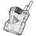

| 荒野（こうや） 14歳 勝ち猫、負け猫 | |
| 桜庭一樹 | |
| 文藝春秋 (2012) | |
文春ウェブ文庫
荒野
14歳 勝ち猫、負け猫
桜庭一樹
荒野 14歳 勝ち猫、負け猫
大人になるすこし前、ぽっかりあいたエアポケットみたいな時間があったことを、荒野はいまでも、よく憶えている。
ぶさいくでみっともない、ぜんぜんきれいじゃないそのころの、かなしい記憶は、いまも心の中で鮮やかだ。ちらばるにきびと、気になる、からだのこと。
いまでは奇妙に愛しく感じられる。
だけど、あんなに痛ましい生き物には二度ともどりたくない。そんな気もする。
......どこからか、動物の鳴き声が聴こえる。
荒野はつよく耳をふさぐ。なにもかもこわくてたまらない。そんな季節。
──十三歳。
大人になる、すこし前。
朝、布団の中でぱちっと目を開けて、どうじに「あーあ」とため息をつく。
それが、十三歳になった荒野の、さいきんの日課だ。
もそもそっと寝床から出て、敷布団と掛け布団と黄緑色の水玉模様のカバーがかかった枕をたたんで、それから机に置いておいた眼鏡をかける。パジャマを着たまま廊下に出て、秋の、燃えるような紅葉に覆われる庭を眺めながら洗面所に向かう。
「あーあ」
鏡に映る荒野のちいさな顔には、ところどころに、パパがむりに芝居がかった言い方でもって娘をなぐさめるところの、青春のあかしが散っている。映画館の通路に転がるポップコーンのかけらみたいに、みっつ、よっつ。
「にきびなんて、全員、滅んじゃえばいいのになぁ」
荒野は思わず声に出して言ってみる。廊下を忙しげに通りかかった義母の蓉子さんが、足を止めて、
「なにを朝から、にきびを擬人化してるの。文学的なこと言ってないで、パジャマを脱いで」
「おはよ、蓉子さん」
「おはよう、荒野。ほら、はやくっ」
寝ぼけ顔で歯ブラシを握る荒野から、むりやりパジャマを引き剝がそうとする。蓉子さんは長い髪をうしろできちっと結んで、朝からきちんと薄化粧し、のりのきいた白いエプロンをつけている。眠っているうちによれよれになった荒野のパジャマが半分脱げかけて、荒野は思わず「やだよっ」と悲鳴を上げる。
「いいから脱ぎなさい。これも、いま回しだした洗濯機に入れるから。そうしたら夕方までに乾くのよ、荒野」
それが一片の疑念の余地もない正義であるかのように、蓉子さんはきれいな顔をゆがめて、くりかえす。「乾くのよ。乾くのだってば」と。荒野は根負けして、パジャマを蓉子さんに明け渡して、ちいさなピンクのパンツだけになって廊下を走り、部屋にもどった。
襖をぴしゃっと閉めて、小声で文句を言いながら、セーラー服に着替える。いまは中二の秋。一年と半年のあいだ着続けた制服はすっかり肌になじんでいる。慣れたしぐさで、プリーツスカートのファスナーを締め、セーラーのボタンを留め、浅葱色のタイをふんわりしめて準備完了だ。白い靴下を履き、さいきんちょっとおしゃれにザンバラに切ってみた前髪を整える。学生鞄も持って、改めて部屋を出て、また、
「あーあ」
ため息をひとつ。
そっと片手を頰にはわせる。ちいさな顔にできてしまったにきびが、この世の終わりのように感じられて、朝から気が重い。
と、
「荒野、にきびは触っちゃだめ！ だめなのよ」
どこで見ていたのか、朝から元気な蓉子さんの厳しい声がした。荒野はびくんっとして、辺りを見回した。どこにもいない。
「......うるさいなぁ」
「口答えしないの」
すぐ横の襖が開いて、客間として空けられている和室から蓉子さんが出てきた。手には大根を丸々一本と、味噌の壺を持っている。わざとこわい顔をしてみせて、
「あとが残っちゃうわよ。見て、わたしのここ、鼻の右の、これ。高校生のときににきびをつぶしちゃったの。あとが残って、お化粧するとき、隠すのたいへんよ」
「うーん」
「うーん、じゃありません。少しは未来のことも考えなさい。ぼうっとしないの」
「うん。......大根のお味噌汁？」
蓉子さんが自分の手元を見下ろして、それからうっすらと微笑む。
「そうよ」
「ふつうだねぇ」
「だってあなた、あなたがた親子はふつうのもののほうがおいしそうに食べるじゃないの」
わたしだって凝ったものをつくりたいわよ、趣味だもの、とぶつぶつ言いながら、蓉子さんは小走りに廊下を台所に向かっていく。炊飯器が湯気をふく音が遠くから聞こえてくる。山野内家の、いつもの朝。荒野は、家の中でのみ、地獄耳と、頭のうしろにも目がついているような鋭い感覚をもつ蓉子さんに、さいきんすこしあきれてもいる。
（女って、へんなもんだなぁ）
そう思いながらまた無意識に頰に手をやると、どこからか蓉子さんがまた、
「だから、触らないの。にきびに」
あきれたように荒野に注意した。
鎌倉の秋は、激しく燃えるような紅葉と、火花のように風に舞い散る赤い落ち葉の秋だ。
荒野は蓉子さんが総力を挙げて（といっても一人だけど）つくった料亭風の豪華なお弁当を鞄に入れて、髪をセーラーのタイと同じ浅葱色のリボンでふたつに結んで、家を出た。
今泉台の静かな坂道を、通勤、通学の人たちが時折、行き過ぎる。荒野を送って出てきた蓉子さんは、近所のおじさんに愛想よく挨拶をした。
「いってらっしゃい、荒野」
平日の朝の蓉子さんは、元気すぎる、と思いながら荒野は、眠そうに、
「いってきまーす」
「ぼんやりしないの。車にひかれるわよ」
「ひ、ひかれないよ！」
荒野は答えて、歩きだした。
紅葉はほんとうに燃えているようで、だいぶ冷たくなってきた風に吹かれて、いろんな形をした赤い葉っぱがひらひらと降り落ちてくる。坂道をくだっても、くだっても。いつまでも葉っぱは落ち続けて、道を赤く埋め尽くしていくようだった。
いつものように、通いなれた電車を鎌倉駅で降りて、学校へ。クラスは一年のときと同じで、教室に入った途端、友達の田中江里華が飛びついてきた。
「おはよー！」
「あっ、おはよ」
江里華は中二になって、また背が伸びてすらりと美しくなっていた。巻き巻きの茶色い髪はだいぶ長くなっていたし、大人びた派手な美貌は、唇にリップをぬったり、眉毛を描いたりするからすごく目立つ。
机に座って、間に合わなかったらしい授業の予習をしていた湯川麻美も顔を上げて、
「おはよう、荒野」
「ん。麻美、予習？」
「そうなの。部活で完全燃焼しちゃって。昨日はうちで、ぜんぜんやらずに寝ちゃったの」
へへ、と笑う麻美はボーイッシュで、日に焼けていかにも健康的だ。陸上部でめきめきと頭角を現しているとのことで、夏の総体予選には荒野たちも応援に行った。
学校は、相変わらずだ。
ひとりだけ、クラスから、一年の二学期からいなくなった男子生徒がいるけれど。そのこともみんな、だいぶ忘れかけているみたいだ、と荒野は思う。最初のころは親戚だということで、みんな荒野に、
「神無月くんはどうしてる？」
「氷の神無月、アメリカで苦労してる？」
「元気そう？ 手紙はこないの」
なんて聞いてきたけれど、最近はぜんぜんだ。
だから、荒野宛にきた手紙は、荒野一人しか読んでいない。
もちろん、なんてことのない、近況報告や新しい友達についての手紙だけれど。
キーンコーン、カーン、コーン──。
チャイムが鳴った。予鈴だ。ゆっくり席について、前の席の江里華と小声でおしゃべりしていると、男子が何人か、遅刻ぎりぎりで教室に飛びこんできた。色白でそばかすが散る顔をした阿木慶太が、荒野の机にぶつかりかけて急停止し、
「おっと、ごめん」
つぶやいて自分の席に走っていった。
阿木慶太はよくしゃべるし性格も温厚でおもしろいので、友人が多い。男子のグループでもいつも中心にいるし、女子たちとも屈託なくしゃべっている。いつもは男子は男子、女子は女子でかたまって話しているので、阿木くんが二つのグループの橋渡し的な役割を担っていることもある。
阿木くんにはおねえさんがいるらしいよ、とは江里華の情報だ。だから女子と話すの、うまいんだよね、と。そんなものかなぁと荒野は思ったが、江里華は自信満々で「そういうものなのよぅ」とうなずいていた......。
「荒野、にきび減った？」
江里華が心配そうに荒野に聞いた。
「いっこ減った」
「よかったじゃない」
「べつのところにいっこできた」
「あらら」
荒野が自分の顔を指さして、ここに、こっちにも、とつぶやくと、麻美もやってきて顔をのぞきこみ、いっしょに騒ぎだした。
「でも、前より減ったよ」
「うそ」
「いやいや、減ったってば」
騒いでいると、男子が一人、うるさそうに振りかえった。
「静かにしろよ、にきび女っ」
荒野の笑顔がかたまった。
かっ、と頰が熱くなるのがわかった。男子の声がやけに大きかったので、教室に響き渡った。みんなが自分の顔を見ている気がして、うつむく。
荒野が真っ赤になったので、教室中を気まずい空気が覆ってしまう。
と、急に阿木くんがふざけたように言った。
「にきびなんてすぐなくなるよ。うちの姉貴とかもみんなそうだったし。なぁ？」
江里華と麻美を中心に、女子が水飲み鳥の大群のようにこくこく、こくこくとうなずき続ける。ここぞとばかりに「そうだよね」「すぐ治るよ」「ねぇ」と言い合う。阿木くんは続けて、
「おれのそばかすは消えないけどなぁ」
「あっ、そうだよ。そばかすは増えるんだよ」
江里華がうなずく。そのときまた、キーンコーン、カーン、コーン、とこんどは本鈴のチャイムが鳴った。担任の先生が眠そうな顔で入ってきた。みんな席に着いた。
「出席を取るぞぉ」
「ほーい」
「誰だぁ、ふまじめな返事をしたやつはぁ」
阿木くんが「ほい」と手を挙げる。くすくす笑いがあちこちで湧きあがる。先生は「阿木かぁ。まったくおまえはいつも、騒々しいなぁ」と言う。
荒野は地理のノートを出して、ピリピリと一ページ破った。シャープペンシルでちいさく、〈ありがとう。やまのうちより〉と書いて、丸めた。
顔を上げた。
ちょっと離れた席に座る阿木くんの横顔めがけて、丸めた紙をえいっと投げつけた。
紙は騒々しい教室を弾丸のように飛んで、阿木くんの頭をぽこん、と撃ちぬいた。阿木くんが自分の頭でバウンドして机に落ちた紙を拾い、こっちをちらっと見る。荒野は、わたし、というように自分の（にきびがちょっとある）顔を指さす。
阿木くんはなぜか少し、赤くなった。
それからゆっくり紙を開いた。
うつむく。
横顔が、燃える紅葉の山のように、かっと染まった。荒野は首をかしげた。
阿木くんのほっぺたは一時限の授業が始まるころまで、ずっと、真っ赤っかのままだった。
北鎌倉の紅葉は、夕方のほうがより激しく、燃えている。
空まで同じ色に染めてしまったように、夕日と、もみじの小さな葉が、暗い橙色に揺れて駅前の円覚寺の屋根を取り囲んでいる。鎌倉街道は赤や黄色の落ち葉だらけで、そこを、ちいさくておしゃれなリュックを片手にした大人の女の人たちが、楽しそうにさざめきながら通り過ぎていく。
秋もまた、観光の季節だ。いかにも重たそうな冬服のセーラーを揺らして駅から出てくる荒野に、観光客の女の人たちが、ガイドブック片手に道を聞く。この季節にはめずらしくないことだったので、荒野は早口で、
「鎌倉山は駅の反対側に回って、道なりにずっとのぼってください。矢印が出てるから。参拝は四時までだから気をつけて」
「ありがと」
女の人が微笑んで、飴をひとつくれた。大人気分で説明していた荒野は、興をそがれて微妙なしかめっつらになり、飴を口にそっと入れた。
いちごの優しい味だ。おいしい。
きびすを返して、うちに急ぐ。革靴が湿ったアスファルトを蹴って、鈍い音を立てる。
「ただいまー」
今泉台の坂道を駆けあがって、お屋敷街の一角にある、崩れかけたような大きくて古い平屋、山野内家に入っていく。玄関を開けて元気よく叫んだものの、つぎの瞬間、むやみに大きくてボロボロの、何度か見慣れた男物の靴があるのに気づいて、口を閉じた。
そうっと自分の小さな靴を脱いで、男物の靴からなるべく離して置いて、抜き足差し足で廊下を歩く。
自分の部屋に入ろうとしたとき、廊下のいちばん奥にあるパパの仕事部屋の襖が、乱暴に開いた。赤ら顔をした壮年の男が顔を出して、荒野をみつけると、
「おや、先生。黒猫が帰ってきましたよ」
荒野はちょっと顔をしかめた。
「そりゃ、帰ってくるさ。中学生なんだから」
パパの、面倒くさそうに応対する声。スーツ姿のその男は、笑いながら廊下を近づいてきた。
「だいぶ色っぽくなったねぇ、荒野ちゃん。そうか、もう十三歳か」
荒野はあわてて、ぴょこりと頭を下げると、自分の部屋に逃げるように入った。廊下からすこしばかり下品な感じの笑い声が聞こえてきた。
「あぁ、また逃げられた！」
「女の子だからな」
また、パパのあきれたような声。
「女の子だから、なんですか、先生」
「悪い大人がわかるんだよ。ま、野性の勘だな。編集長」
廊下の奥から、まるでがまがえるみたいないやぁな笑い声が響いてきた。荒野はふくれっ面をして、小さく「ちぇっ」とつぶやいた。
荒野のパパは、山野内正慶という。なんだか武将みたいな名前、と友達に言われたことがあるけれど、これが本名だ。パパは一日うちでごろごろしていたり、唸り声を上げたりしているへんな大人だけれど、本屋さんに行けば、ずらりと著書が並ぶ、恋愛小説家でもある。情愛の濃さや肉の哀しみがどうの、と論じる大人がたくさんいるけれど、荒野にはなんだかよくわからない。ただ、パパは、じつは有名な人なんだなぁ、とあきれるだけだ。
女性の出入りが多いのもパパの特徴だったのだけれど、一年半ほど前、再婚してからは、表向き、目立った動きはない。ときどきふらっと出かけて二、三日帰ってこないことがあって、それは再婚する前にはなかった放浪癖とでもいうものなのだけれど、荒野も、蓉子さんも、パパがいないあいだも普通に生活していた。
いまきているお客さんは、去年も幾度か顔を出した、東京の立派な出版社の編集長さんだ。荒野を気に入って悪気なくあれこれからかうのだが、それがどうも苦手で、荒野はこのおじさんから逃げ回っているのだ。
「野性の勘？ うちの娘もわたしを煙たがるんですけどねぇ」
「だから、それだよ。ははは」
「なにを笑ってるんです、先生」
「いや、本物の猫を相手にしても、そうやって、猫撫で声で近づいては逃げられてる人間がいるでしょう。それを思いだしてね」
「ひどいなぁ」
廊下で騒がしく話している声が、次第に遠ざかっていく。荒野はほっとした。足音もなく静かに廊下に出て、台所の冷蔵庫からジュースを出す。ヨーグルトもあったから、それも持って、縁側から庭に出た。
日が暮れてきて、赤い葉に覆われた山野内家の庭にも、ひんやりと湿った夜の空気が満ちている。秋は日暮れが、驚くほどはやい。
荒野は飛び石を蹴るようにして、離れのドアの前に立った。鍵が開いたままのそこに、静かに入る。
しん、とした空気が満ちていた。
神無月悠也がいたときと同じ、静かな、思索の気配とでもいったもの。
それが静かに荒野を迎えいれる。
整然と積まれた本と、古いジャズのレコード。奇妙な、心惹かれるデザインをした昔の蓄音機。畳の上には、こないだ荒野がきたときに散らかしたお菓子の空き箱がまだ落ちていた。荒野はそれをひろって、そっとゴミ箱に入れた。
蓄音機をセットする。
ボリュームは、絞ることにする。
静かにジャズが流れ始める。ピアノが水音のように弾かれている。荒野は目を閉じる。
畳に座って、ジュースのペットボトルを抱きしめて、じっとしている。
（遠くに、行きたいんだ）
（なにが待ってるかわからないからこそ、そこが荒野なんだ）
（君、もう、女みたいなことを言うんだなぁ）
ピアノの音が、目を閉じて座りこむ荒野のそばまで流れ着いて、沈殿する。下へ、下へ。柔らかなそれに囲まれて荒野はかすかな吐息をつく。
ひとりで考えてるだけでも、恋、なのかなぁと思ったのは、十三歳になってからだった。
悠也がいなくなってから。
離れていても、気持ちはべつに変わることはない。暖かな、なにかを発見したときのような驚きと愉しさが、胸に静かに息づいている。
でも荒野はそれを、誰にも話していない。
友達にも。家族になった蓉子さんにも。
もしかしたら一人だけ、話してもいい相手がいたけれど、その人は遠くに行ってしまい、携帯電話の番号も変えてしまって、かけてもかけてもつながりは切れてしまっていたから。
誰にも話していない。
ただときどき、離れにきて、それにひたる。
甘く、さびしいそれに。
ピアノが鳴り響き、荒野は目をかたく閉じ続ける。
水音のようなジャズ。流れよ。流れ落ちよ。
──やがてレコードが静かに、曲の終わりを告げる。荒野はゆっくり目を開けると、もう一度同じレコードをかけた。そして悠也が使っていた書物机の引き出しを開けた。
一月に一度ほど、氷の神無月から届く手紙。
ここにしまってあるのだ。いちばん最近届いた手紙を取りだして、開いてみる。
〈山野内荒野さま
元気ですか。ぼくは毎日忙しく、勉強についていくのがなかなかたいへんといったところです。クラスメートのルイが誘うのでローラースケートを始めてみたけれど、ぼくとローラースケートはそりがあわない。その証拠に、無事に立っていられない。でもルイがあんまり笑うので、うまくなってやろう、と思っています。そっちはみんな元気ですか。こんど写真を送ってください。
神無月悠也より〉
達筆だが走り書きで、すこしばかり読みにくい。荒野は読みかえして、ローラースケートを履いている悠也を想像して、くすっと笑ってしまう。手紙をしまうと、べつのレコードをかけてみる。
離れの外、母屋のほうからさっきのおじさん編集長の、騒々しい声が聞こえてくる。先生、こんどふぐでも食べに行きましょう、うまいふぐを、と繰りかえしている。蓉子さんの、足元にお気をつけて、とささやく声。すべてが遠い。水の中を漂っているみたい。荒野は微笑む。
去年は、わからなかった、と思う。
十二歳の荒野には、まだわからなかった。
悠也が......あの少年が、なぜ離れで心地よさそうに過ごしていたか。
隔離されたと傷つきながらも、離れでの時間を大切に思っているように見えた。なかなか外に出てこようとしなかった。
あのときはわからなかった。
いまはちょっとだけ、去年の、十二歳だったあの少年の思いがわかるような気がする。
つまり、すこしの孤独は、ここちよいのだ。
荒野もまた、離れで過ごすひとりきりの静かな時間を大切に思い始めていた。心がうるおい、自分が自分で満ちてくる。去年はわからなかった、と思うとき、荒野は気づく。
少年のほうがさきにおとなになっていたのかもしれない、と。
遠くから蓉子さんが、ご飯ですよっ、と荒野を呼ぶ。荒野は孤独を愛す老いた猫のような心持ちから、ふと我に返り、はーいと元気に返事をした。
立ちあがる。
レコードを止める。
水の流れが消える。
現世にもどる。
離れのドアを開けると、鬱蒼とした庭は、蓉子さんのつくるビーフシチューのいい匂いで満ちていた。荒野のお腹がぐうっ、と一声、鳴いた。
飛び石を歩いて、母屋にもどる。
パパはもう、食卓について荒野を待っていた。
学校は、相変わらずだ。
ほんとうは水面下でいろいろと動いているのだけれど、荒野はあまり気づいていない、のかもしれない。事件といえば、夏休みが終わって二学期になったとき、クラスにカップルが一組、誕生していてびっくりした、というぐらいだけれど、そのびっくりも一週間と続かず、みんなその変化に慣れてしまった。
夏休みにプールで会って、とか、図書館でも会ってね、とか、女子のほうからトイレの鏡の前で聞いた（というか、積極的な子が質問攻めにしたので、これ幸いと質疑応答に耳を傾けていたのだけれど）。そのカップルは教室ではあまりしゃべらないままなので、なんとなくそのことを忘れ始めて、秋も深まったころ。
どうも、カップルの仲を取り持ったのは阿木慶太らしいよ、と女子のあいだで広まり始めた。
放課後。すぐに帰らずに教室でおしゃべりしているときのことだ。江里華がコテで茶色い髪の毛先を巻き巻きしながらその話をすると、お行儀悪く机の上に座った麻美もまた、のってきた。麻美はふだん、陸上部で忙しいはずなのだが、月に四、五日だけ、お客さん、のある日は部活を休んでいる。お腹が痛いのだから早く帰るか、保健室にいればよいのに、友達といっしょにいたくて、教室にのこってだらだらと過ごすのだ。
トマト味のプリッツを三人で厳かに回し食べしながら、会話が、弾んだ。
「阿木のやつがね、気づいたんだって。プールでばったり、のときに。お互い好きなんじゃないのこいつら、って」
江里華がプリッツを一本取って、箱を荒野に回しながら言った。大人っぽい外見には似あわぬ、リスのようなしぐさでプリッツをこりこりとすこしずつかじっている。
受け取った荒野も、興味しんしんでうなずきながら、プリッツを一本取った。かじりながら箱をつぎに回す。麻美が受け取って、一本つまんで、
「阿木って如才ないよね。男子のくせに、気ぃ遣うし」
「遣う、遣う」
江里華がうなずく。忘れ物を取りに教室に入ってきたべつの女子も「なに、阿木くんの話？」と言いながら、輪にくわわった。
流れるような自然な動作で、プリッツの箱を受け取り、一本かじる。
「しゃべりやすいよね。阿木くんがあいだに入ってくれたら、カップル成立、たしかにしやすいかも」
「しゃべりやすいの？」
荒野が聞いた。そういえば、だが、荒野は阿木くんとしゃべったことがないような気がした。こないだ、筆談（？）したような気がするけれど。
江里華がうなずいて、「こんどなにか話してみなよ」と言った。
「うーん......」
「そういえば荒野って、男子としゃべらないね」
「だって......なに話していいのかわからんくて」
そう答えながら荒野は、向こうも同じかな、と思う。そのうち、麻美が本格的にお腹が痛いと言いだしたので、みんなあわてて立ちあがって、「お薬飲んだ？」と言いながら教室を出た。
江里華が麻美の鞄を持ってあげている。
学校を出て、よろよろと鎌倉の町並みを歩きながら、麻美が、
「お腹がいたいよー。荒野、なにか、歌って」
「うん。......えっ、歌うの？」
「気晴らしに」
「ええー」
荒野は仕方なしに、離れで聴きなれたジャズの一節を口ずさむ。江里華がびっくりしたように、問う。
「なぁに、それ。かっこいいね」
「うちにあったの。ジャズのレコード」
「へぇ。ジャズかぁ」
江里華が憧れるように、低く言う。
麻美が「いたた」とつぶやく。
週末はあいにくの曇り空だった。
日曜日の朝、荒野はのんびりと縁側で日なたぼっこをしていて、あやうく蓉子さんに踏まれるところだった。シーツの束を抱えて和室から出てきた蓉子さんは、足しか見えない、白い布のおばけみたいな様子で荒野にぶつかって、
「あらっ、なにか蹴飛ばした」
「ぎゃっ」
荒野は飛びあがった。
新しい家族、蓉子さんのスキンシップにだいぶ慣れてきたとはいえ、とつぜんだとやっぱり驚いてしまう。
「蓉子さん。わたし、わたし」
荒野が読みかけの少女漫画を床に置きながら声をかけると、蓉子さんはシーツを抱えた上半身をくるりとねじって、その向こうから顔を出した。上品な薄化粧をした細長い顔が、荒野を見下ろした。
にっこり微笑んで、言う。
「お洗濯終わったら、いっしょに出かけましょうか」
「へっ」
「たまには、いいでしょう。なにか買ってあげるわ」
荒野はあわてて起きあがった。お行儀悪く立てていた膝を閉じて、なにを買ってもらおうか、と首をかしげる。
蓉子さんは軽やかな足取りで廊下を遠ざかっていく。羽根が生えているように、足が床から少し浮いて見える。幸せな女の人の後ろ姿をしている、とふいに荒野は思う。
女の人が、幸福か、不幸かなんてことは、去年までは考えもしなかったことだ。荒野はふと、去年までこの家にいた、折れそうに華奢で、それでいて凜とした女性の、床からけして浮きあがることのなかった細い二本の足を思いだす。
なつかしい、煙草のにおいも。
胸が締めつけられるようで、その人のことを考えるたびに荒野は、まるで失恋のようだと、失恋したことがないのに確信してしまう。
「スカート？ どんなのがほしいの、荒野」
鎌倉駅前の、雑貨屋さんや洋服屋さんが並ぶ通りで。
たくさんの女性の観光客にもまれて歩きながら、蓉子さんが荒野に聞いた。日曜のお昼過ぎの鎌倉駅周辺は、おどろくほどに人が多い。荒野は蓉子さんとはぐれないようにがんばりながら、
「赤い、ギンガムチェックの。できたらプリーツスカートがいいなぁ」
「めずらしいわねぇ。あなた、あんまり派手な色、着ないじゃない」
「うん。たまにはいいかなぁって」
蓉子さんがふぅんとうなずいた。女の子向けのかわいい洋服屋さんには、安くてデザインも素敵な服がたくさんあったけれど、荒野が気に入ったどれもこれも、蓉子さんは引っ張ったり、裏地を見たりして、
「だめよ。つくりが雑だわ。大事な子にこんなの、着せられやしないわ」
「蓉子さん、声が大きい！」
「すぐにだめになっちゃうわよ。あなた、よく転ぶんだから」
「静かにっ」
「わたしがおんなじの、つくってあげるわ。このデザインで、もっといいのを」
「蓉子さんってば......」
店員さんの横顔が、むっとしている。同い年ぐらいのお客さんたちがくすくす笑っている。荒野は、しばらくこのお店にはこられないなぁ、と、物静かだけどじつはかなりマイペースである義母を恨みながら、退散した。
蓉子さんは、裏通りの小さな布地屋さんに入って、布地と糸とボタンを山のように買って、うれしそうに出てきた。一瞬、荒野は、同い年の友達、たとえば江里華がお買い物をしたときとおなじような表情をしているなぁ、と思った。でもつぎの瞬間に蓉子さんは大人の仮面をまたかぶって、
「これで安心よ。さぁ、帰りましょう」
「お腹すいた」
「あら、まぁ」
荒野はまんまと、お小遣いではなかなか入れない、おしゃれなケーキ屋さんに入ることに成功した。
天井が吹き抜けの、山小屋風の店内には、クラシック音楽が流れていた。硝子のショーケースに上品なケーキが、宝石の陳列台のようにきらきらしく並んでいる。
半地下にある丸いテーブルに座り、蓉子さんがてきぱきと、
「わたしはブレンドコーヒー。この子は......」
「わたしもコーヒー。あと、バナナのムースとバニラアイスクリームのお皿」
「子供は刺激物はだめよ。ホットミルクにしなさい」
「やだっ」
荒野が力いっぱい反抗したので、蓉子さんはきょとんとした。ギャルソンが少し微笑んで、下がった。
蓉子さんが困ったようにつぶやく。
「苦いわよ」
「砂糖とミルク、入れるもの」
「うーん......」
やがて、二人が頼んだコーヒーとケーキを載せたお盆が厨房から出てきた。そのとき、カララン、と鈴の鳴る音がして、お店のドアが開いた。
大学生ぐらいの派手な女の人と、明らかに荷物係をさせられているらしい、小柄な少年が入ってきた。大いばりでいちばん真ん中の席に着いた女の人が、洋服の買い物袋を両手で抱えていた少年に「あんたも座っていいわよ」とうそぶいた。
それから、運ばれてくる荒野のケーキを見て、
「おいしそう。おにいさん、わたしもそれ。あと紅茶」
「かしこまりました」
少年が荷物を椅子と、床とテーブルの上に置いた。
顔が見えた。
「あ！」
荒野が叫んだ。少年が振りかえる。
阿木慶太だった。そばかすの浮かぶ人のよさそうな顔に、今日もまた、お調子者っぽい笑顔を浮かべている。
阿木くんもまた、荒野をみつけて「あっ」と言った。
荒野はうなずく。
でもそのとき、ケーキとコーヒーがテーブルに置かれたので、荒野はふっと阿木くんのことを忘れた。ふわふわのおおきなムースケーキと、たっぷりのつめたいバニラアイスクリーム。真っ白な皿に紫色をした花が一輪、添えてあった。
「おいしそう」
と、蓉子さんがうらやましそうにつぶやいたので、荒野はフォークを蓉子さんに渡した。蓉子さんはフォークで、荒野はスプーンで、ケーキとアイスの山を雄々しく崩していく。
コーヒーは、一口飲むと、苦くて熱かった。荒野が「にがっ」と飛びあがると、蓉子さんは勝ち誇ったように、
「ほほほ」
荒野は意地になってブラックで飲もうとして、でもやっぱり挫折して、悔しさに唇を嚙みながらも砂糖とミルクをたっぷり入れた。それでもやっぱり、コーヒーの苦さは完全に消えはしない。ミルクの色でだいぶコーヒーが白くなったとき、誰かがかたわらに立つ気配がした。
ぶるっと、荒野はさむけを感じた。
どうしてかは、よくわからない。
顔を上げると、阿木くんが立っていた。逆光になっていて顔がよく見えない。影のかかる顔は、ふだんとちがってどこか不吉な感じがした。
「よっ、山野内」
屈託なく言われたので、荒野はあわててアイスクリームを飲みこんだ。
「阿木くん......」
蓉子さんが、お友達、と聞く。荒野はうなずく。
と、阿木くんが二人の顔を見比べて、
「あっ、おかあさんか。よく似てるなぁ」
荒野と蓉子さんが、そろって赤面した。
「そぅお？」
「うん。雰囲気がそっくりだ」
荒野は微妙な気持ちになったけれど、蓉子さんはうれしそうな顔をしている。荒野は阿木くんの連れを思いだして、
「おねえさん？ そういえば、おねえさんがいるって、江里華が言ってた」
「そう、いちばん上の」
阿木くんは照れたように言った。
「休みの日になると、人をかりだして。こまるんだよ」
「へぇぇ」
「こないだまでは彼氏にさせてたらしいんだけど、別れちゃったんだ。それで弟をこきつかってるんだよ。おそろしい女だぜ」
そう言いながらも、口調はちょっと楽しそうだ。荒野はなんとなくうらやましくなって、
「兄弟がいると、楽しそうだねぇ」
「おまえ、一人っ子？」
「うん。江里華は兄弟が多いから、うちが静かでうらやましいって言うけど。......蓉子さん、どうしたの」
蓉子さんが白い手で口を押さえたまま静かになったので、荒野は心配になって、聞いた。蓉子さんは「ううん」と首を振ったが、立ちあがって「おトイレ」とつぶやいた。
蓉子さんがいた席に、阿木くんが自然に座った。
「山野内って、田中と湯川と仲がいいんだよな」
「うん。一年のときからずっと。入学式の日に一緒に帰ったの。江里華が、うさまん食べて帰ろうって誘ってくれて。麻美もいっしょに行くことになって、それから」
「おかしなトリオだよな。ばらばらだもん」
「そう？」
「男子が、田中派と湯川派に真っ二つ。美人でお高い感じの田中は人気だけど、かなり敷居が高いだろ。湯川は話しやすいし、元気だし。顔もかわいいしな」
荒野は友達がほめられてうれしいのと、不安なのがごちゃ混ぜになって、震え声で聞いた。
「や、山野内派は？」
「......一人いる」
やや時間を置いて、ちいさな声で、阿木くんが答えた。
荒野はうちひしがれた。
「一人......」
「いないよりましだろっ」
阿木くんがなぐさめているのか、怒っているのか、乱暴に言う。荒野は、一人もいないよりは、という気持ちと、たった一人、という気持ちにはさまれて、苦いミルク入りコーヒーをぐいぐいと飲んだ。
「苦い」
「うん？」
「いろんな意味で」
「ははは。落ちこんでる。山野内が落ちこんでるぞ」
「笑われてる。苦いなぁ、現実」
「......じゃ、おれががんばって仲間を増やすよ」
トイレのドアが開いて、蓉子さんが出てきた。そばかすが浮かぶ阿木くんの顔を見上げながら、荒野は、どういう意味なんだろう、と首をかしげた。
阿木くんが立ちあがって、「じゃ、また学校で」と手を振って席にもどっていく。阿木くんのおねえさんが興味しんしんの顔つきでこちらを見ていた。弟に小声であれこれ聞いて、またこちらをじっと見る。
席にもどってきた蓉子さんが、ふぅ、と息をついた。
「だいじょうぶ、蓉子さん？」
「ええ」
「コーヒーが苦かった？」
「ほほほ。大人にはちょうどいいのよ」
「また、大人ぶって」
「荒野、大人になったらわかるわ。人生は......このコーヒーよりずっと、苦いのよ」
深いのか、深い意味はないのか、よくわからないことを言って、蓉子さんは目を細めた。
青白いけれど上品なその顔の、鼻の上辺りに、以前はなかったこまかいそばかすが浮かんでいる。やけに目立っていて、目にとまってしまう。気になってみつめていると、蓉子さんはまた、ふぅ、と息をついた。
喫茶店を出て、大荷物を二人で分けあって持って、帰途につく。
帰り道は、さっきよりずいぶん肌寒かった。落ち葉が舞い散り、風がびゅうっと鳴る。
蓉子さんが軽やかに歩きながら、聞いた。
「さっきの男の子、同じクラスの子なの」
「うん。阿木慶太くん。でもね、しゃべったのは今日が初めて」
「あら、どうして」
「どうしてって......。男子と女子って、そんなにしゃべらないよ。もともと」
「あぁ......」
蓉子さんが目を細める。
ステップを踏むように、坂道の石畳を蹴って、
「そうだったわねぇ」
「うん」
「荒野の言うとおりだわ。でも、忘れてた」
「だからね、さっきしゃべったのが初めてなんだけど、江里華や麻美が前から、阿木くんって話しやすいよって。おねえさんがいるからじゃないかって。荒野、相手が男子だとすごく緊張するんだけど、でもやっぱり、あんまり気にせずしゃべれたから」
うちに着くと、ちょうどパパが、着物の上から薄手のコートを羽織って出かけるところだった。鞄も持たないままで、
「打ち合わせに」
「日曜だよ？」
「うむ」
下駄を軽く鳴らして、坂道を降りていく。荒野と蓉子さんは顔を見合わせた。二人で、遠ざかっていくパパのすこし猫背気味の後ろ姿を、眺める。
日が、暮れてくる。
荒野は自分のことを、もしかしてほかの女子よりも子供っぽいところがあるかもなぁ、と思うことがある。ほんのときたまなんだけど。
放課後の、空気の冷え切った廊下を歩いていたら、階段の踊り場のほうから女子たちの黄色い声が聞こえてきた。鞄を振り回しながら荒野は、ぴょんと首を出して踊り場を見下ろした。
女子がたくさんいて、開け放した窓から校庭を見ていた。きゃあきゃあと楽しそうな、甲高い声が響いている。
「どしたの」
荒野が階段を駆けおりて仲間に加わると、同じクラスの子が振りむいて、興奮したように、
「サッカー部の男子。かっこいいねぇ」
「ふぅん」
荒野は首をかしげてから、みんなといっしょに窓から校庭を見下ろしてみた。
サッカー部の少年たちが走り回っていた。そのうちの一人、派手な動きで注目を集めている同級生が、どうやら嬌声の理由らしかった。荒野がぼけっとしていると、女子の一人がからかうように、
「山野内さんはお子ちゃまだから、わかんないでしょうー」
「わかるよー！」
荒野はつられて、うそをついた。それから首をかしげて、また校庭を見る。そして、校庭にあふれる日に焼けてほっそりした少年たちをひとしきり見渡して、こんなにたくさんの同い年の子がいる中、そのたった一人の、かっこいい男子をみつけて一斉にきゃあっと言える、女子の目を、すごい、と思う。
そんなことをしみじみと考えていると、階段の踊り場を駆け下りてくる軽やかな足音が聞こえた。振りむくと、阿木慶太がいままさに通り過ぎようとしていた。少年はちょっとユーモラスな動きをしてみせて、荒野の前で止まった。
「ちょうどよかった、山野内さん」
「ん、わたし？」
「そうそう」
阿木慶太は革鞄を肩に回して、首をかしげた。
「頼みがあったんだ。いま......は」
阿木くんは、きゃあっ、とまた上がった黄色い声のほうをうかがい見て、
「いまは、忙しいか」
「ううん、ぜんぜん」
荒野は首を振った。阿木くんはすこし意外そうな顔をした。階段の下のほうを指差して、聞く。
「じゃ、いまいいかな」
「いいよ」
気軽に男子と話せていることがうれしくて、荒野は元気よくうなずいた。一瞬、阿木くんはなぜか暗い目をして荒野を見下ろした。
それから一転して元気になって、
「じゃ、行こう」
「うん」
荒野は阿木くんと並んで、そうっと階段を降りた。
中学に入ってから、ずいぶん大きめになってしまった荒野の胸は、階段を勢いよく降りたり、ぴょんと跳んだりするとすごく揺れてしまう。女子はそれを「うらやましい！」とか「いいなぁ」と親近感をこめて讃えてくれるので、恥ずかしがりつつもそんなにいやな思いをすることはないのだけれど、男子の集団にからかわれた屈辱の記憶が何カ月に一回かあって、荒野はすっかり、猫背と、抜き足差し足がくせになっていた。
阿木くんは荒野の歩くのにあわせてゆっくり歩くので、荒野は、男子なのにできたお人だなぁ、と感心する。おねえさんの存在は偉大だ。
「人気あるよなぁ」
阿木くんが、落ち葉の散る学校の正面玄関を抜けて、校庭の横を通り抜けながら、言った。誰かの名前を言ったなと思って、荒野は「へっ」と聞きかえした。
阿木くんは校庭のサッカー部を指さして、
「あいつだよ。さっき女子がぎゃあぎゃあ言ってたろ」
「ぎゃあぎゃあじゃないよ。きゃあきゃあ」
「そんなかわいい声かぁ？」
阿木くんはからかうように言った。
「アヒルの大群みたいだったぞ。ぐがーっ、ぐがーって」
「でも、男子だっておさるみたいだもん」
「まぁ、そうだな」
阿木くんは笑った。
校庭の横を抜けて、正門に近づいていく。遠くから野球部の立てる、かきぃぃーん、という金属音や、大きな掛け声も響いている。校舎の窓からは吹奏楽部の演奏の音がする。風がかすかに鳴る。落ち葉が目の前でくるくると狂おしく舞う。
秋。
肌寒い季節。
荒野はまた、ぶるっとした。
「そういや男子も、女がいないときはうるさいなぁ」
「あっ、こないだ言ってた、田中派とか、湯川派のことでしょ」
「そう。田中なんか、さいきんファンクラブができたんだぞ」
「本当？」
荒野は飛びあがる。阿木くんはあわてて、
「本人にぜったい言うなよ。地下秘密組織なんだから」
「えぇー。なんだかやだなぁ。秘密なんだ」
「遠くから愛でてるだけなんだから。田中は誰ともつきあっちゃだめ。誰かといい雰囲気になりそうだったら、メンバーが全力で阻止する」
「......さ、最低──」
荒野は、江里華に代わって、江里華が言いそうな文句を言ってみた。でも、江里華のずばっとした言い方にはどうも届かない。
「麻美は？」
「あぁ、湯川はなんだか、彼氏ができそうだから。みんな元気をなくしてる」
「えーっ」
青天の霹靂だったので、荒野は飛びあがった。風が吹いて、街路樹が一斉にカサカサと音を立てた。夕闇がはやくも迫って、赤い光が建物のあいだから射しこんでくる。
「そんなの、聞いてないよー」
「......恥ずかしいんだろ」
「相手、だれ？ というか阿木くん、どうしてそんなにいろいろ知ってるの」
「おれは事情通なんだよっ」
阿木くんはえらく楽しそうに言った。荒野は急に、人のよさそうなそばかす顔のこの男の子が、どうも油断できない相手のような気がしてきて、黙る。
駅が近づいてくる。今日もまた、平日だけれど大人の観光客がたくさんいる。それをぬうように歩いていくセーラー服と詰め襟のふたりは、なんだか、地元の子なのに奇妙に周囲から浮いて見える。
「クラスにカップルもできたし、みんなきゃあきゃあ言ってるし」
荒野がつぶやく。
阿木くんがしっかり、指摘する。
「きゃあきゃあじゃなくて、ぐがぁぐがぁ」
「ちがうよっ」
「じゃ、げこげこ」
「あのねぇ......。ともかく、なんだか周りにおいていかれるみたいで、びっくり。十三歳って、もうおとななんだねぇ」
「そりゃ、そうだろ」
つられたように阿木くんが、おとなのおとこみたいな言い方をする。
「もう、おとなさ」
「阿木くんは誰かとつきあってるの」
そう問うと、急に心細そうな表情になった。
「......つきあってない。がぁがぁ、げこげこ言われるほうじゃないし」
「でも、女子の友達、多いよね」
「それともてるのとはちがうさ」
阿木くんは頭をかいた。
「うちの姉貴だって、男の前じゃすごくかわいい女のふりをするんだぜ？ で、弟の前では、あぐらかいて男言葉遣ったりしてて、幻滅しちゃうよ。みんなおれに、遠慮ないもんな」
「う、ん」
「好きな子に、どうやって近づいたらいいんだろうな。......難しいよ」
「あっ、好きな女子はいるんだ」
「うーん。でも、まぁ、あんまり話したことないし、向こうは気づいてないぐらいだと思うよ。がぁがぁ、げこげこに忙しいんだ、きっと」
荒野は首をかしげた。
ほんとうは、さっきの踊り場にいた女子の一団に阿木くんの思い人がいたのかな、と思い当たる。こんなふうに気楽に話せるのは楽しいけれど、阿木くんにもじつは、いろいろ事情があるのだ。
「あのさ」
駅前に着いたとき、阿木くんが少し言いにくそうに口にした。
「頼みごとのことだけど」
「そうだった。なぁに？」
「これ......」
鞄から本を一冊取りだして、荒野に押しつけるようにする。タイトルは『愛の煌めき、恋の疵』だった。このセンスは、もしや、と荒野にはぴんときた。
著者名は、やはり......。
山野内正慶。
「パパの、本......！」
荒野は苦しそうにうめくと、がっくりと崩れ落ちた。阿木くんがあわてて、
「なんだ、どうした。この本、嫌いなの？」
「ううん。嫌いというか、読んでない」
「えーっ、親父、小説家なんだろ。おれなら片っ端から読むなぁ」
「あんまり、興味がなくて。あの人が小説家なのは、物心がついたときからだし。それに、読んじゃだめだって」
「まぁたしかに、娘の情操教育には微妙かもなぁ。でも、すごく人気あるんだぞ。大人の女の人に」
知ってる、と、心の中だけで荒野はつぶやく。
去年、再婚してからは減ったものの、パパを取り巻く女性たちの狂気に似た気配を思いだして、また怖くなる。
黙ってしまった荒野を気遣うように、少年はすこし黙った。
「なんか、悪かったかな」
「ううん。ぜんぜん平気。無事だよ。まったく気にしてないよ」
「えっ、なんだか、すまん、っていうか」
阿木くんは早口になった。
「姉貴がサ、ほら、日曜に喫茶店で見たろ。おまえのことを見て、興奮しててさ」
週末の高級喫茶店で見かけた、阿木くんとおねえさんの姿を荒野は思いだした。大学生ぐらいの派手なおねえさんと、荷物持ちをしていた弟。おねえさんは熱心に荒野をみつめては、弟になにごとかをささやいていた......。
「山野内正慶先生の熱心な読者なんだ。地元でサイン会があったときなんか、同じ本を三冊も買って、三度も並んだんだぜ？ そのたびにべつのプレゼントを渡して。これで顔を覚えてもらったはずだ、って言ってたけど」
荒野はパパの、ぼーっとした無精ひげつきの横顔を思い浮かべながら、あの人は覚えていない、となぜか確信する。パパには、薄情で、外面がよくて、そのくせものを書くこと以外なにも考えていないような......なんというか、生まれつき残酷なところがあるのだ。
ある種の、あぶない、大人の女の人たちは、もしかしてそこに惹かれてくるのかもしれない。手に入らないものを追いかけて、がっかりしたくて、それでパパを愛してるのかもしれない、などとさいきん荒野は、難しいことを考えている。
愛の煌めき、恋の疵、だ。
「それで姉貴が、山野内先生の娘がおれのクラスメートってわかって、パドックの競走馬みたいに興奮しちゃってさ。サインもらって、あと、娘さんと仲良くなって、って鼻息荒く頼むもんで。断れなくてさ」
荒野は、なんだぁ、と思った。
気楽に話せる男子の友達ができて、内心ちょっと、いや、ずいぶんうれしかったのだ。でも、自分から男子に話しかけたり話題をみつけることができない荒野に、阿木くんがあれこれ話しかけたり、助け船を出してくれていたのは、パパの娘だったからかぁ、と思った。
「サイン、頼めるかな」
少年は顔を覗きこむようにして、すこしこびるような響きで、問う。
「わかった。ちぇっ」
「いま、ちぇっ、て言った？ げげっ。なんだよ、いやならいいって」
「いやじゃないよ。もらうってば」
荒野はふくれっ面で返事した。
「なんでふくれてるんだよ。あぁ、もう、女ってわかんねぇなぁ。うちの姉貴といい、クラスのアヒルたちといい、山野内正慶の娘といい」
「ふくれてないもん。......じゃ、明日ね」
「でもおまえ、明らかに態度がっ。なんだよ、気になるだろ山野内。こらっ」
こちらに伸ばしてきた少年の腕をすり抜けるようにして、荒野は改札を抜けて、ＪＲ横須賀線のホームに、巣穴に逃げこむ兎のごとく駆けていった。
うちに帰ると、めずらしくパパが縁側にいた。
女性が家に訪ねてくることがなくなったせいか、この古い重厚な一軒家にいるとき、パパは明らかにスイッチを切って、ぼーっとしていた。出かけるときだけ、きちんとひげを剃って、なんともいえぬ香気のような、不思議なものをかもしだす、怪しげなおとことなって町に消えていく。そしてなにかに疲れきって帰ってくる。
日が暮れていく庭をみつめているパパに、荒野は、
「ただいま。サインください」
「えぇっ。どうした、黒猫よ」
パパは顔を上げて、セーラー服の娘を、眩しそうに見上げた。それから子供のように口を尖らせて、
「大きくなったなぁ」
「なってないよ。......毎日会ってるじゃない」
「うん。サインって、まさか君、ぼくの作品を読んだんじゃないよね」
「読んでないよ」
荒野は心の中で、去年出版された、家政婦の恋と悲しみを描いたあの作品だけは、読んでしまったことをひた隠すことに決める。鞄から『愛の煌めき、恋の疵』を取りだして、
「クラスメートに頼まれたの」
「おやおや、早熟だね」
「じゃなくて、おねえさんに頼まれたんだって」
「なんだ。昨日出たばかりの新刊じゃないか。もう買ってくれたのか」
パパがうれしそうな、ほくほく顔になる。
そのとなりに座りこんで、荒野は首をかしげた。
「あのね、サイン会に三回も並んでくれたんだって」
「サイン会......なんて、したかな」
こりゃだめだなぁ、と荒野はため息をつく。パパはお仕事をするときと女の人に会うときだけのために生きているみたいで、蜻蛉みたいに儚く、いつもぼんやりと揺らいでいる。現世での出来事は覚えもしないみたいだ、と荒野は、パパの夢見るようなうるんだ瞳を見上げながら思う。
「パパ、ハングリー・アートって知ってる？」
「なんだい、それは」
パパが、懐から出した万年筆でさらさらとサインをしながら、問う。山野内正慶、という文字は達筆の手書きで書かれたときに素敵な様子になるのだな、と気づいて、荒野はその書きなれた文字にみとれる。
「えっと、ハングリー・アートって、去年、悠也が話してたの」
「ふぅむ」
「この世の大事なものを犠牲にして、つくりだすもののことだって」
パパは首をかしげている。
そろそろ暗くなってきた庭を、ふたりでぼうっとみつめる。この大人のそばにいると時間がゆっくりになって、漂って、やがて完全に止まってしまうように荒野には感じられる。パパは目を細めて荒野を見ると、もう一度、
「大きくなったなぁ」
「なってないよ」
「赤ん坊だったのに」
つぶやく。
からっぽの両手で、妙なしぐさをする。そこにいないちいさな赤ん坊を抱いて、あやしているポーズだ、と娘も気づく。
父親は悲しそうに、でもやっぱり夢見るように、
「あの赤ん坊はもう、いないんだなぁ」
「もう、ここにいるってば」
「いるけど、いないさ。そして、あの人ももういないんだ」
荒野は、パパの時間が奇妙に停止し続けていることに気づく。
そうっと家の中を見回す。山野内家の中でのみ、地獄耳と、頭の後ろに目がついているような鋭さを発揮する、あの女性の気配に耳をそばだてる。
家にはいま、荒野とパパしかいないらしい。
小声で聞く。
「蓉子さんは？」
「いま、病院に行ってる。もう帰ってくるだろう」
「どこか悪いの」
「......いや、どこも」
パパはぼんやりと首を振る。
荒野はパパが、荒野自身も会ったことのない、最初の奥さんで、荒野を生んだ女の人のことをまだ愛し続けている、という想像にひたってみる。ロマンチックなので、悲しくなる。
しばらくして、うちの電話が鳴る。荒野が立ちあがって受話器をとると、どこかで聞いたような、甘くてすこしきつい女の人の声が流れてくる。
『──編集部のものですが、山野内先生はご在宅でしょうか』
荒野ははい、と言って、パパを呼びにいく。
受話器から耳を離すときに、くすり、と笑うような甘い声が聞こえた気がする。耳慣れた、狂気の声。すこしだけ、ぞっ、とする。
パパは電話の前で寒そうにからだを縮め、はい、とか、いま半分ほどできてましてね、そうですね一度打ち合わせを、とつぶやいている。あまり進んでいないのか、情けない風情だ。ちん、と電話を切って、「......ううー」とうめきながら髪をかきむしりだす。
そのとき玄関が開く。がらがらがらっ、と静かな音とともに、蓉子さんの「ただいま」というささやくような声が聞こえてくる。
荒野は義母を迎えに出る。
「おかえりなさい。いないからびっくりしちゃった」
「あら、ごめんなさいね」
玄関先で蓉子さんは薄く微笑んだ。さっきのパパの不穏な言葉は、家の外にいた蓉子さんには届いていないようだ。やっぱりあの魔力みたいな地獄耳は、山野内家の中でのみ発動するのだな、と、荒野は思ってみた。
玄関の蛍光灯が、寒そうな色で蓉子さんを照らしていた。段差のぶんだけ、大人の蓉子さんを見下ろしていることに荒野は気づいた。やっぱり、前はなかったはずの、こまかなそばかすのような、しみのようなものが鼻の周りに浮かんでいる。なんだろう、と荒野は首をかしげた。どこか不吉な色だ。
「荒野が帰ってきたときに、ちゃんとうちにいたかったのだけどね。いろいろ手間取って」
「病院、行ってたの？」
「ええ」
蓉子さんはうなずいた。
靴を脱いでそろえながら、「ご飯作らなくちゃ」とひとりごとを言う。廊下を歩きだす。荒野が後ろにくっついて歩くと、振りむいて、また微笑む。
ハングリー・アートの男は、もう仕事部屋にもどってしまったようだ。誰もいない廊下を、蓉子さんが足早に歩く。わきめもふらずに台所に入っていく。
「手伝おうか」
「あら、ありがと」
蓉子さんはまた、幸福そうに微笑んだ。
「それじゃ、お米を磨いでちょうだい。荒野。わたしは野菜の下ごしらえをするわ。......正慶さんは？」
「編集さんから電話があって、しょげてた」
「あらあら」
蓉子さんはまた笑う。
幸福でたまらないようなその横顔と、さっきの電話で漏れ聞こえた、くすり、という危険な声が、荒野を不安にさせる。
元気よくお米を磨ぎながら、荒野は、不安を吹き飛ばそうとする。
話がある、といつになく緊張した面もちで湯川麻美に言われたのは、その翌週。十一月の半ばに差しかかったころのことだった。
嚙みつくようにとげとげしく、硬い声で言うものだから、荒野はびっくりして、麻美の顔をしみじみと眺めてしまった。朝の予鈴が鳴り始めた教室。前の席に後ろ向きに座って、荒野と向かいあっていた江里華が、したり顔でうなずいた。
「わかったよ。うふ」
妙な笑い方に、麻美がなぜか恥ずかしそうに縮こまる。荒野だけが二人を見比べて、
「なに。なぁに」
「いや、もう先生がきちゃうから」
麻美が小声で言った。
「お昼休みでいいよ。うん」
「うふふ」
江里華がまた、華やかで美しい顔には似合わない、おかしな笑い方をしてみせた。本鈴が鳴って、入ってきた先生が眠そうに出席を取り始めた後も、江里華は一人で、
「うふふ」
「......ねぇ、なぁに。江里華もへんだよ」
後ろからつっついて、教えて教えてと頼むと、江里華が振りむいた。
ふわり、といい匂いがした。江里華はさいきんコロンを変えた。前よりも甘ったるい、南国の果物みたいな、目に見えない濃い香りをまとっている。
「麻美、恥ずかしそうだねぇ」
「うん。......どうして？」
「こ、い。恋の話だよぅ。うふふ」
江里華はなにがそんなに楽しいのか、午前中の授業でも繰りかえし、静かな教室で一人で肩を揺らしていた。そのたびに荒野は後ろからつっついて、なによぅ、と聞くのだけれど、教えてくれない。二人とも先生に何度も注意されて散々だった。三限の地理が終わり、四限。現代国語の授業のときは、二人とも先生に朗読を当てられてしまった。
江里華がまず立ちあがって、まじめな声で教科書を読み始めた。
「吾輩は猫である。名前はまだ無い。ぶっ！」
「こらっ、まじめに読め。田中」
「はい。うふふ。......どこで生れたか頓と見当がつかぬうふふふ。何でも、ぶっ、薄暗いじめじめした所でニャーニャー泣いていた事だけは記憶している。吾輩はここで、ぶっ、始めて、うふっ、人間というものを見たっふふふ」
「こら、田中」
後ろのほうの席から、丸めた紙が飛んできて、江里華のくるくる巻き巻きヘアーをした頭にぽこんっと当たった。振りむくと、麻美が怒ったような、照れたような顔をしていた。
先生の真似をして、
「こらぁ、田中ぁ」
「......ねぇ、なんなの。どうしてそんなにずっと笑ってるのよぅ」
荒野は悔しくなって、江里華の腰を後ろからつついた。くすぐったそうに江里華がまた、うふふっ、と笑う。
「なんなんだ、仕方ないなぁ。田中は座れ。なんだ、なんかいいこと、あったのか」
「うふふ。はぁ、まぁ」
とたんに、男子のあいだにさざなみのように動揺がひろがり始めたのがわかった。おそろしい地下秘密組織の活動のことを、荒野は思いだした。つられて荒野まで動揺していると、先生は、
「つぎのページ。山野内」
「......」
「おーい、山野内」
「......ん。わたしですか」
「おまえしかいないだろう。お、おまえら二人とも、今日はおかしいぞ。山野内、百五ページだ。って、教科書はどうした。それ、現国じゃないぞ。地理じゃないか」
「あっ、しまった」
机の奥から、あわてて教科書を取りだす。がたがたと音を立てて立ちあがり、すこし赤くなりながら読みあげ始める。
朗々と、静かに。
「えっと......吾輩は、吾輩は、池の前に坐ってどうしたらよかろうと考えてみた。別にこれという分別も出ない。暫くして泣いたら書生が又迎に来てくれるかと考え付いた。ニャー、ニャーと試みにやってみたが誰も来ない。くしゅん！」
「風邪か」
「いえ」
荒野は読み続けた。みんな黙って聞いている。江里華の笑いの発作もおさまったようだ。
「どうも非常に苦しい。そこを我慢して無理やりに這って行くと漸くの事で何となく人間臭い所へ出た。ん？」
前の席で、江里華がノートの切れ端になにか書き始めた。荒野は気になってそれを覗きこみながらも、続けた。
「んと......縁は不思議なもので、もしこの竹垣が破れていなかったなら、吾輩は遂に路傍に餓死したかも知れんのである。一樹の蔭とはよく云ったものだ。この垣根の穴は今日に至るまで吾輩が隣家の三毛を訪問する時の通路になっている」
「......はい、そこまで」
荒野はほっとして、座った。先生が感心したように「さすが山野内は朗読がうまいな。聞きほれちゃったよ。小説家の娘だなぁ」とめずらしく荒野をほめた。うちにいるときの、山野内正慶の娘、小さな黒猫モードにもどりそうで、荒野はしかめっ面になる。
先生が黒板になにか書き始める。みんな一斉にノートを取る。
そのとき、前の席から手紙が回ってきた。気になって、さっそく教科書の陰に隠して開いてみた。
丸っこい、江里華のかわいらしい文字で短く、書かれていた。
〈彼ができたんだよ。江里華より〉
「誰にっ？」
思わず荒野は声に出して聞いた。江里華が前の席で突っ伏した。それから細い人差し指で、ちょんちょん、と後ろのほうの席を指差してみせた。
ようやくやってきたお昼休み。
三人で机を並べて、ご飯を食べた。荒野は、相変わらず蓉子さん渾身の料亭風お弁当。錦糸卵が散り、型抜きした野菜が彩りよく飾られている。松の葉に刺さった銀杏に荒塩がふってある。江里華はおにぎりと卵焼き、焼売、きゅうりのサラダというシンプルなお弁当だ。麻美は購買でがんばって買った、焼きそばパンとチョココロネ、フルーツ牛乳をぱくついている。
「彼ができたの？ 彼が。へぇぇ」
荒野が興味しんしんで、麻美に聞いている。麻美は真っ赤になり、焼きそばパンを乱暴にかじりながらうなずいた。
「そう。だから、言わなきゃと思って」
「えー、好きな男子がいるなんて知らなかったよー」
荒野がすこぅし不満そうに言うと、麻美はちいさく首を振った。
「ぜんぜん意識してなかったの。一年のときから同じ部活だし。でもなんとなく、ね。そういう感じで」
「どういう感じ？」
「わたしたち、もしかしてつきあうのかなぁ、って、いうの」
「わかんない」
荒野がぶぅぶぅと言う。
「何組の人？」
「いや、いっこ上。三年の先輩なの。だからもう部活は引退してるし、いま受験でたいへんなんだけど」
「三年の先輩！」
荒野が大きな声で叫んだので、麻美がその口を思いっきりふさいだ。
「しーっ！」
「うふっ。......先輩なんだ。三年生。ひゃあ、おとなだ」
「そうだよぅ」
麻美が得意そうに言う。
「だってもう十五歳だもん」
「十五歳かぁ。おとなだねぇ」
「おとなだよぅ」
江里華が焼売をもぐもぐしながら、口をはさんだ。
「どんな人？ 会わせて、会わせて」
「えーっ」
麻美がいやそうな顔をした。荒野も江里華もきょとんとして、同時に「どうして？」と聞いた。
顔にふと影がさす。
消え入りそうな声で、麻美が答えた。
「だって江里華は美人だから。先輩が江里華を好きになっちゃったら、困るもの」
「......」
江里華が一瞬、見たことがないほど、まっすぐ傷ついた顔をした。麻美は気づかず、はぁ、とため息を一つ、ついた。荒野は、おやっ、わたしの立場は、とすこしだけ思ったけれど、それよりも江里華の悲しそうな様子が気になった。
麻美は気づかずに話を続けている。ふたりの馴れ初めは陸上部で、と情報が流れこんでくる。地下組織の男子たちに守られる秘密のお姫さまのような江里華は、濃い甘い香りをまとい、がっくりとうなだれたままだ。
荒野はお昼休みが終わって、机を元に戻すときに、江里華にささやいた。
「ね。気にしちゃ、だめだよ」
「う、ん......」
「えっと......。麻美、ぜんぜん悪気なかったし」
「ん」
くるくる巻き巻きヘアーの毛先を指でもてあそぶようにして、江里華がしどけなくうなずいた。その横顔はやっぱり、去年よりも大人っぽくてどんどんきれいになっているようで、荒野は、麻美の不安もわかる気がしてしまって、なぜだか自分まで、悲しいような苛立つような、不思議な気持ちになった。
（恋は、女の子を、こどもにしてしまうのだなぁ......）
午後の授業のあいだ、そんなことを考えてもみた。男の子のことを考えてほかのことが見えなくなってしまう。それはきれいな気持ちだけど、きけんななにかでもあるようだった。元気で、裏表がなくて、人にも気を遣うはずの麻美が、友達の心の動きに気づかなかったように。好きな人がすべてになってしまう女の心は、まるで、ママしか見えないちいさなこどもにもどってしまったみたい。なにやら不穏なものでもある......。
（そして......恋は男の子を、地下組織にしてしまうの、かなぁ）
荒野はそっと教室を見回してみる。一見、まじめな顔をしてばらばらに座っている男子たち。彼らが顔を寄せあって、なにやら秘密会議を開いている姿は、なんだかまったく想像がつかない。
（......へんなのっ）
荒野は首をかしげた。
その日の放課後。
部活で忙しい麻美と、弟たちの面倒を見るからとさっさと帰ってしまった江里華においていかれて、荒野は一人になった。
一年のときは友達といっしょに帰るのが楽しかったけれど、さいきんは、一人の帰り道も楽しいと思うようになっていた。夕日に包まれつつある校庭をゆっくり横切ると、遠くで陸上部の子たちがストレッチしている姿が見えた。学生服姿の背の高い男子生徒が、麻美らしきショートヘアの女子に近づいてなにか話しかけている。華やいだ雰囲気が伝わってきて、荒野は、あぁ、あれが例の、三年生の先輩かなぁ、と思う。
微笑んで、正門をくぐり、学校の外へ。
紅葉はそろそろ落ち葉になって舞い落ちて、鎌倉の町並みは冬に近づいていた。まっすぐ鎌倉駅に向かわずに、荒野は小町通りを一人で散策してみることにした。
かわいらしい和物の雑貨屋さんに入った。
真っ赤な金魚の帯留をみつける。七宝焼で、つるつるした表面のさわり心地がよかった。荒野は帯留をつるりと触って楽しんでから、手ごろな値段なのを確認して、レジに持っていった。
「お着物、着るのかしら」
店主らしい和服に銀髪のおばあさんが、眩しそうに荒野を見上げて、問うた。荒野は思いがけず話しかけられたのではっと赤面した。うなずいて、
「あの、週末に、着物で散策するアルバイトをしてて」
「あぁ、地元の中高生さんに頼んでる、あれね。商店街でお駄賃を出してるのよ。みなさん初々しくて、かわいいわね。あなたも着物、似合いそうだわ」
「はぁ」
荒野はさらに赤くなる。
「でも、いつもはぜんぶ、借りてるんです。最初はわからなかったけど、さいきん見慣れてきたから、好みもわかってきて」
「この帯留なら、波模様や流水紋の、つまり模様がある帯に合いますよ。こんど、お見立てしてくれてる大人の方に見せて、相談して御覧なさい」
「はぁ」
荒野は、柔らかな和紙で包まれてピンクの紐で結ばれた帯留を受け取って、ますます赤くなった。
店には帯留のほかに、椿の形をした銀細工の簪や、和柄のくるみ釦、レースのついた和風のかばん、赤と黒の市松模様の鼻緒がかわいらしい下駄などがあふれていた。荒野よりも年上のおねえさんたちが店内に入ってきて、あれこれ物色し始めたので、荒野はレジから離れた。おねえさんたちはあれも、これも、とあまり値段を見ずに買い物籠に入れていく。
（おとな買いだ......！）
感心しながらその様子をみつめる。
それから、一個だけ買った、大事な金魚の帯留をきゅっと両手で握って、胸の前で抱きしめてみる。自分で買ったのは初めてで、荒野は心がうきうきと浮き立った。
視線を感じて振りむくと、レジの奥で和服のおばあさんが、微笑みながらこちらをみつめていた。薄暗い夕刻の店内で、あの老いた女の人は、どうしてそんなに眩しそうにわたしを見るのだろう、と荒野は首をかしげる。
七宝焼の、赤い帯留。荒野のちいさな手のひらの中で、柔らかい和紙の奥で暖まってくる。いまにも金魚が泳ぎだしそうに、てらてらと輝く。
雑貨屋さんを出て、荒野は、クラスの女子たちと一緒に入ったことがある、小さな喫茶店に向かった。こないだ、スポンサーの蓉子さんに連れて行ってもらった高級なケーキ屋さんとちがって、ここは高校生ぐらいのお客さんが多い、値段も安くて気軽な店だった。だけど荒野はやっぱり、喫茶店なんて大人の場所だし、友達と一緒で、気が大きくなっているときじゃないと入れないなぁ、と思っていたのだ。
でも、初めて買った帯留のせいか、今日の荒野はちょっとちがった。ひとりで堂々と喫茶店に入って、レジに並んだ。
「えっと、苺あんこシューと、ホットココア！」
「四百円です」
「はいっ」
荒野は財布を出して、ちょうどあった百円玉四つを取りだした。トレイに載ってきたココアのカップとシュークリームに、思わず顔がほころぶ。窓際の席を選んで、静かに座る。
やってみたら、か、かんたんだ。
ふぅ、と息をついて、目の前のトレイを見下ろす。
フォークがないと崩せないぐらいおおきなシュークリームには、中にたっぷり生クリームと、まるごと苺ジャムがのっていた。下のほうにはつぶ餡も入っている。熱いココアを口に運びながら、荒野はそっと目を閉じて、自分がもう、大人なのだ、とないしょで想像してみた。
十三歳が大人かどうか、じゃない。
自分がもうずっと先、大人になっていて、仕事の帰りに、カフェに寄ってひとり、お茶を飲んでいるところをだ。髪も毛先に大人のシャギーが入っていて、お化粧もしている。着ているものはセーラー服じゃなくて、スーツに、ハイヒール。長い足を組んで片肘をつき、物憂げに窓の外を眺めている。
バッグの中にはお化粧道具と、文庫本が一冊、入っている。
その心の中は、うかがい知れない。
未来は物憂げに、いまの少女の延長線上にある。
ゆっくりと目を開けて、荒野は一口、甘いココアをすする。一瞬、時が交差して、大人の自分と中学二年生の自分が重なったような気がして、不思議な心持ちになる。
この一歩は大きいぞ、と荒野は思う。
なにしろ今日は、初めてひとりで喫茶店に入った日、なのだ。興奮を隠して、シュークリームをもぐっと頰張る。苺のジャムが唇の端から垂れ落ちて、荒野は「きゃっ」とあわてて紙ナプキンを探した。
くしゅん！ とくしゃみをして目を閉じて、ふわっと目を開けたら、もう冬。
とでもいった様子で、その年の鎌倉は、あっというまに気温を下げて冬将軍のお出ましになった。落ち葉が冷たい風にくるくる舞い、萩の木からたれさがる細い枝は幽霊の手招きみたいにうごめいていた。八重咲きの山茶花がぽっ、ぽっ、とピンクの丸を揺らしている。
十一月の最後の週。蓉子さんが和室に火鉢を出してきた。鮮やかな藍色をした鳳凰模様の、しぶい火鉢だ。八角形のボンボン時計の振り子が揺れる和室に置いて、満足そうに、
「あったかいわねぇ」
「そう？」
「うん」
蓉子さんらしくなく、子供っぽいうなずき方をした。それから和室の畳いっぱいに、つくりかけの荒野の洋服を広げて、頰に手のひらを当てて考えこんでいる。
「どうしたの」
「ちょっと立ちなさい、荒野」
言われておとなしくその場に立つと、蓉子さんは慣れた手つきでメジャーを当てて、後ろから荒野の肩幅を測った。感心したように、
「さいきんの子は、華奢に見えても、肩幅がしっかりしてるわねぇ」
「えー、そんなことないよ」
「いいことよ。着映えがするわ。さて、と」
蓉子さんはつくりかけの白いブラウスと、赤いタータンチェックのスカートを広げて、手早く作業を始める。わざとのような、急いでる風の動きをしながら、早口で言った。
「あのね、荒野。わたし、ここしばらく、病院に行ったりしていたでしょう」
「うん」
荒野はうなずいた。蓉子さんからすこし離れたところで畳に座った。そして小声で問いかける。
「どこか悪いの」
まだ幼いころにこの世からいなくなってしまった、自分を生んだ女の人のことを思いだして、不安になる。
でも蓉子さんは、幸福そうに、勝っているというように、婉然と笑っていた。
「ちがうわよ、荒野。わたしね、赤ちゃんができたみたいなの」
「......あぁ」
荒野はうなずいた。
ボンボン時計が夕方の五時を告げた。ぼぅん、ぼぅん、ぼぅん、という音がようやく止むと、荒野は落ちついて、
「赤ちゃんって、あの赤ちゃん？」
「そうよ」
蓉子さんはうなずいた。
心配そうに眉をひそめ、荒野のちいさな顔をまっすぐみつめる。
「あなたの弟か妹ねぇ」
「わたしの、弟か、妹でしょ。わかってるよ。赤ちゃん。......ええーっ」
荒野は叫んだ。
足音も荒々しく自分の部屋に駆けこんで、乱暴に襖を閉める。石油ストーブをつけて、畳に座って、頭を、とりあえず抱えてみる。
いつのまに近づいてきたのか、足音もなく。蓉子さんはすすーっと襖を三センチだけ開け、怪談に出てくる女のおばけみたいな様子で片目だけ覗かせて、
「荒、野......」
「わっ、蓉子さん、こわいよ。なにしてるの。もう、勝手に開けないで！」
「荒野ぁ......」
「わざとやってるでしょ。わかってるんだから」
「こ、うぅ、やぁぁ」
蓉子さんはますますふざけて、わざとお化けみたいな声を出した。
それから口を閉じた。
荒野は根負けして、顔を上げる。と、蓉子さんは一転してまじめな顔つきになってこちらを見下ろしていた。
もっとも、襖に隠れたもう半分の顔で、笑っていても、泣いていても、睨んでいても、わからないけれど。
「......荒野」
「なによぅ。いま、一人にして」
「いやよ」
「えっ。いや......」
荒野は絶句した。蓉子さんは力強く、
「あなた、兄弟がほしいって言ってたじゃない」
「えっ」
「ほら、こないだいっしょに買い物に行ったとき」
荒野は、あぁ、阿木くんのおねえさんを見たときか、と思いだす。蓉子さんったらよく覚えているなぁ、とちょっと感心する。
見上げると、目の下辺りにもそばかすのようなしみのようなものが浮かんで、蓉子さんはやっぱり顔色が悪い。荒野は、蓉子さんの少しずつの変化は、しばらく前から始まっていたのだ、と思いあたる。
よくわからないまま、震える声で聞いてみる。
「......男の子？ 女の子？」
「さぁ」
蓉子さんは首をかしげた。
「調べてないの。生むまでわからないほうがいいわ」
「ゆ、悠也は知ってるの」
「これから知らせるわ。荒野、出てきて。腰回りも測らなくちゃ」
荒野は仕方なく、ストーブを切って和室にもどる。
蓉子さんは畳に膝をついて、荒野のウエストを測りだす。小声で、歌うように「夏に、なったら、生まれてくるわ」というので、荒野はびくりとする。
なんだか、おそろしい。
変化も。新しい命が、荒野よりずっと古いものから生まれでてくるということ、そのものも。
荒野は畏れている自分のことを、あぁ、まだぜんぜん大人なんかじゃない、と思う。自分を恥じて、そうしたら急に落ちこんでしまう。
その週末は、江里華がうちに遊びにきた。蓉子さんがここぞとばかりにご馳走を作ってもてなした。弟か妹ができるという話を聞くと江里華は、瞳をくるくるっと回してみせて、
「いいじゃない。あ、荒野、いろいろお手伝いしないとだめだよ」
「......そうなの？」
「そうだよぅ。赤ちゃんがいると、たーいへんなんだから。もう、たーいへん」
江里華が、弟や妹が生まれた後のことをあれこれと話す。お手伝いしなよ、ちゃんとしなよ、と繰りかえすので、荒野はなんだか緊張してきた。
それは蓉子さんひとりのことではない、家族みんなのことなのだ、と気づいて、心がまたざわつく。
ぼうっとご飯を口に運んでいたパパが、
「男かね。女かね」
妙に興味のなさそうな平坦な声で言った。江里華がちらっとパパの横顔を見た。荒野は、照れ隠しなのかな、と疑ってみる。でもパパは相変わらずぼんやりしていて、つかみどころがない。
ご飯を食べ終わった後、江里華が「そういえば、フィルムが余ってた。撮ったげる」と使い捨てのカメラを取りだした。荒野はあわてて洗面所に走って、鏡を見た。
にきびはいま沈静化している。一時的な休戦だ。
また走って部屋にもどる。前髪を直して、パパと蓉子さんのとなりに座る。江里華がカメラを構えて「撮るよぅ。はい、赤ちゃん！」おかしな掛け声とともにシャッターを押す。
すごい勢いで流れ過ぎていく時間を、一瞬、フィルムに写し取られて、フラッシュの眩しさに荒野は泣きそうになる。
翌週。教室で江里華に会うと、「おはよー。はいっ」と元気よく写真を渡された。パパと、蓉子さん、それと荒野が写っていた。写りのいい写真だったので、荒野はほっとした。
阿木くんが通りかかって、写真を覗きこんだ。
「へぇ、これが親父かぁ。たしかに小説家って感じだなぁ」
「そうぅ？」
荒野がへんな声を出す。江里華もうなずいて、
「小説家っぽいよ。いつも和服だし。それに、荒野のパパ、なんだか色っぽいじゃない」
「ええー」
思わずいやそうな声を出してしまう。江里華と阿木くんがくすくす笑った。
さいきん、阿木くんはよく荒野に話しかけてくる。おねえさんに頼まれているというわけでもないらしく、あまりパパの話はしなくなった。荒野が「ちぇっ」と言って逃げたので、気を遣っているのかもしれない。いまもすぐに話題を変えて、
「冬休みって、どうしてるの。山野内」
「どうって、うちにいるよ」
いつも明るい、お調子者っぽいはずの阿木くんの瞳が、ふっと陰った。この子はときどきこういう暗い顔をするなぁ、と荒野は首をかしげた。阿木くんは続けて、
「旅行とかさ......。どっかに遊びに行く予定とか......」
「うーん」
そう聞かれて、荒野はうなった。
もともと荒野はおとなしくて、休みの日にあっちこっちに出かけるほうではない。それに今年は、蓉子さんの手伝いをあれこれしなくてはいけない気がしていて、ほとんど予定を入れていなかった。ボーイフレンドができた麻美は忙しそうだし、江里華は......。
ふと気づいて、荒野は江里華の顔を見上げた。なぜか阿木くんをじっとりした目つきで睨んでいる。
「ん。どうしたの」
「ううん。なんでも」
江里華は首を振った。
「わたしもうちにいるよー、荒野。冬休みずっと。弟たちの面倒見ないと、おかあちゃんが倒れちゃう」
「あらら」
予鈴が鳴った。阿木くんが急いで席にもどっていった。江里華も、荒野に写真の束を押しつけると席に着いた。
太っ腹なことに、江里華は写真をたくさん焼き増ししてくれていた。荒野はその日、うちに帰ると蓉子さんにも一枚、パパにも一枚、写真を渡した。それから自分の部屋に入って、石油ストーブをつけた。
「荒野？」
廊下から、女のお化けみたいに足音もなく、蓉子さんが聞く。
「勉強してるの？」
「うん」
「ふぅん」
「もぅ、ほうっといてってば」
「いやよ」
「いや？」
荒野はびっくりして聞きかえす。襖を開けて入ってこようとする蓉子さんを阻止して、
「ご飯になったらそっちに行くから。なによ、もう」
「さびしいじゃない、だって」
蓉子さんはそう言いながらも、侵入をあきらめて廊下をもどっていく。
すこしずつ、一人の時間を大事に思うようになってきた荒野だけれど、蓉子さんは気にせず話しかけてくるし、部屋にもどんどん入ってくる。去年、離れにこもってジャズを聴いていた息子のことは、縁側から離れを見上げて洗濯物をたたんだりしながらもほうっておいたのに、女の子にはどうしてまとわりつきたがるのだろう。荒野は母親というものの不可思議さに、考えこんでしまう。
そしてあの人から、また新しい命が生まれてくるのだ。それは荒野でも悠也でもない。見たこともない、新しいなにか。
荒野は机の前に座って、深々とため息をつく。
それから、襖がちゃんと閉まっているのを、思わず振りむいて確認する。
机の引き出しからレターセットを出す。水色をしたいい匂いがする紙でできている。ボールペンで、書き出しだけ何度もまちがえて、ようやく書き終える。
〈神無月悠也さま
お元気ですか。こちらはふつうです。麻美にボーイフレンドができました。江里華を秘密組織がねらっています。ローラースケート、うまくなりましたか。わたしは......とくになにも、上達してないなぁ。ええと、ふつうです。
写真、江里華が遊びにきたとき、撮ってくれたの。同封します。悠也の写真も送ってね。大事にします。それではまた。からだに気をつけて。
山野内荒野より〉
英語の宛名を丁寧に書いて、写真を一枚入れて、封をする。
それから、そうっと抱きしめてみる。
台所からことこととコンソメの匂いが漏れてくる。
荒野は立ちあがって、ストーブを消した。部屋着の上から紺色のダッフルコートをはおって、水玉模様のマフラーを巻く。廊下に出たら、眼鏡が少しくもった。冬だなぁ、とひとりごちる。
蓉子さんは出てこない。
玄関先でスニーカーを履いて、外に出る。山野内家の門を抜けて、今泉台の坂道をすこしくだる。
赤いポストの前で立ちどまる。
ポストに、そうっと手紙を投函する。夜空にコトン、と手紙が落ちていく音がひびく。
荒野はひとりでにっこりする。この手紙は海の向こうの少年に届くのだ。少年からも写真が届く日を思って、すこしだけ頰を染める。
十一月の最後の日だった。
冬の始まり。
山野内荒野は、十二月生まれ。
もうすぐ十三歳の時間が、永遠に終わる。
新しい季節がすぐそこまでやってきている......。
お正月に雪が降った。
鎌倉の冬は、寒い。縁側の硝子越しに眺める山野内家の庭は、鹿威しも凍りついて、木々にも、離れの屋根にも、飛び石にも真っ白な雪が降り積もり、さびしい水墨画のようだった。
元日から、山野内家には出版社の人たちが、入れ替わり立ち替わりお年始の挨拶に訪れた。暮れに届いた豪華なお歳暮の山がまだ片付けられていないのに、台所はお正月の、熱燗や、お吸い物に浮かべるちいさな焼き餅や、お重の支度でおおわらわだった。
二年前のお正月までは、このうちには家政婦さんがいた。いつものあの人と、家政婦協会からきてもらう臨時の人たちでごったがえし、大勢で家事をこなしていた。でも、去年からは蓉子さんがひとりでがんばっていた。鶴の模様が輝く塗りのお重はなんと五段もあって、料亭風の、薄味で上品なおせち料理がきっちりと並んでいた。
東京の匂いを身にまとった、すべらかなスーツを着た大人の男の人が、微笑んで、
「先生、すばらしい料理ですね。これを奥さまおひとりで？ すばらしいなぁ」
そう言うと、今日ばかりはしゃんとしたパパが、うむ、とうなずいた。和硝子の器にかわいく載せた栗きんとんを持って和室に入った荒野が「これも、どぞ」と編集さんたちの前に置くと、ひとりが話しかけてきた。
「うちの中、きちんとしていて、いいね。蓉子さんはしっかりしてるねぇ」
「ええ」
荒野は、ほかでもないこの和室に、ほんの三時間ぐらい前まで片付かないお歳暮の箱が天井高く積まれていて、蓉子さんがヒステリーを起こしていたことはとりあえず黙っとこう、と思って、鷹揚にうなずいた。
ちなみに、泣きながら蓉子さんが叩いていた洋酒や、チルド包装のローストビーフや、新巻鮭の山は、一時間近くかけて荒野が整理して、いまはとなりの、荒野のちいさな部屋にきれいに収納してある。あれが和室にもどってくるまで、荒野は自分の部屋に入れないのだ。どうしてくれよう。
もう一回うなずいて、荒野は、
「しっかりした人です。ねぇ、蓉子さん」
「ほほほ」
見事につやつやした黒豆を、花唐草柄の和皿に盛って入ってきた蓉子さんが、鷹揚にうなずいた。
「この子もちょっと、お手伝いしてくれますし」
「うん、ちょっとね」
荒野が強調する。蓉子さんの切れ長の瞳は、さっきまで泣いたり、わぁわぁ騒いでいたので、まだかすかに赤い。
ひとりでできるもの、主婦だもの、と、子供みたいにだだをこねていた姿を思いだして、荒野の口元がゆるむ。蓉子さんに睨まれて、口を引き締める。
「ふふふ」
「荒野、こっちのお皿、片付けて」
「はーい。ふふふ」
荒野は立ちあがる。編集さんが「奥さんも一杯だけ、いかがです」と蓉子さんにお酒を勧める。荒野は台所にもどって、お皿を洗ったり、コップを片付けたりした。
赤ちゃんがいるから無理しないで、と言われても、蓉子さんはむきになってがんばってしまっていた。ますますそばかすやしみが増えた、ちょっと暗い顔色。子供みたいに泣いてみせたり、頑固になったりする様子に、荒野は驚いていた。
（蓉子さんって、手がかかる大人だったんだなぁ）
最初はあんなにおっかなかった大人の女の人に、荒野はさいきん、友達に対するときと似た、いい感じにこまった感じ、をおぼえることがある。
この人も大きくなる前は女の子だったんだなぁ、と想像できる気がしてしまう。すこしだけ荒野が成長しているせいなのかもしれなかった。もしかしたらそれにつられて、大人のほうがうっかり、ときどき、大人のふりを忘れてしまっているのかもしれない。
和室から、おほほ、と蓉子さんの笑い声がする。どこか艶っぽい、ほろ酔いの響きだ。編集さんがなにやらからかっている。いやだわ、と笑う声に、ふだんは感じない色気のようなものを察して、荒野はすこし顔をしかめた。
がらがらっと玄関が開く音がした。
「ごめんくださいまし」
「......はーい」
荒野はタオルでぬれた手を拭きながら、音もなく廊下を走った。
「お年始に挨拶に参りました。──編集部のものです。先生はご在宅ですか。なんだ、黒猫ちゃん。緊張して損したわ」
「あ......い、いらっしゃ、いませ」
荒野はどぎまぎと挨拶した。
それは、おととしのパパの結婚披露宴のとき、トイレで泣いていた女の編集さんだった。今年もまた、目尻につけた長いつけ睫毛が、大人っぽくて、どこかもの問いたげな目つきを演出していた。
スーツに、つやめく口紅。一分の隙もなく戦闘態勢のおしゃれをしている。いらつくような空気を香りのように身にまとっているが、その人は去年よりも美しくなったように見えた。
荒野は、最近ときどきかかってくる女の編集さんからの電話が、この人の声だった、と思いだす。どうりで、どこかで聞いたことがあると感じたはずだ。
彼女はエナメルのピンヒールを脱ぐと、さっさと上がってきた。
「あの、えっと......」
「わたしはビールね。ビールあるかしら」
「あったかなぁ。あの......」
編集さんは姿勢よく廊下を歩き、和室に入っていった。膝をついて頭を下げ「せんせ、あけましておめでとうございます」と礼儀ただしく、でもすこし甘えたように言う。
蓉子さんの笑い声が、ぴたり、と止まった。
荒野は冷蔵庫からビールを出した。
ほろ酔いらしきピンクのほっぺたをして台所にもどってきた蓉子さんが、おそろしい顔をして、新巻鮭をていねいにていねいに解体し始めた。
台所は、寒い。
蓉子さんのしゃれた料理道具で飾られた台所。
外では牡丹雪が降り始めている。庭はますます雪景色だ。和室では、東京のはたらく女、パパの担当編集者の一人である彼女が、去年のパパの作品や、今年の仕事についてあれこれと早口で話しては、楽しそうに笑っている。「それは君、それはだね」と、パパの声も弾んでいる。
台所の女は、つよいのか、よわいのか......。
新巻鮭は細く切られてラップに包まれ、冷凍庫に送られていく。
誰がつよいのか、よわいのか......。
荒野は目を細める。
そのとき廊下で電話が鳴り始めたので、台所から走りでた。「はい、山野内でございます」と、パパのお仕事関係の人だろうと思ってよそいきの声で出ると、弾んだ、幼い声がかえってきた。
「うふふ。こちらは田中でございますー」
「なんだ、江里華かぁ」
「いまの、なぁにぃ？ ございます、だって。荒野、よそいき」
「大人かと思ったんだもん」
友達からだったので、荒野はとたんに、だらける。廊下にしゃがみこんで、空いているほうの手で髪の毛をいじりながら、
「あけまして、おめでとぉ」
「おめでとぉ」
「えへへ」
「なにしてるの。お外、雪だねぇ」
「雪だねぇ。へへ」
「麻美に電話したら、ひまだから、かるたしてたって」
「かるた？ しぶーい」
「親戚がきてるみたいで、小さい子の相手、してるみたいよ」
「そっかぁ。うちは大きい子がいっぱいきてて、お酒飲んで、パパと話してる」
「へぇ」
江里華は感心したように、言った。
「どんな話してるの」
「うんと、女の人はお仕事の話をしてる。おじさんの人はえっちな話したりしてる」
「しょうもなっ」
「ねぇ」
「初詣、行った？」
荒野は首を振りながら、
「行ってない」
「雪がやんだら、行かない。うちの伯母さんがまた、お着物、着付けてあげるわよって」
「ほんとー。行く！」
荒野は元気よく返事をした。そのときゆらりと台所から出てきた蓉子さんが、奥の部屋にむかったので、なんとなく見送る。
しばらく江里華と話していると、蓉子さんが白いコートを着て、手袋をはめながら出てきた。荒野は顔を上げて、聞く。
「どうしたの、蓉子さん」
「お酒が足りないから、買いにいってくるわ」
「だっ、だめだよ」
荒野はあわてて、江里華にことわって電話を切った。
「こんな雪の日に。すべって転んだらどうするの」
「大人だから、転ばないわよ」
「転ぶってば。すってんころりんと。それで救急車だよ。ねぇ、配達してもらえないの」
「今日はおやすみよ。開いているストアまで行かなくては。行かなくては」
蓉子さんはすこし様子がおかしい。完ぺき主義がいつもよりぎらぎらしている。荒野はあせって、
「じゃ、わたしが行くってば。蓉子さんはむちゃしたらだめ」
むりやり蓉子さんからコートをむしりとって、自分が着る。手袋も借りて、それからふと、ふわりと軽くて洗練されたコートのデザインに気づき、姿見を覗きこむ。
「おぉ！」
「なに。どうしたの」
蓉子さんのコートを着た荒野は、まるで大人の女の人みたいに落ちついて見えた。何度かポーズを取ってみて、すっかり気に入り、
「おだちんに、このコート、ください」
「だめです！ これ、高いのよ。東京のデパートで買ったんだもの。どさくさにまぎれてへんなこと言ってないで、いいからはやく行ってきなさい。日本酒とビールね。転ばないのよ」
がみがみ叱られて、荒野はちぇっ、と文句を言う。
蓉子さんが微笑んで、「はやくね」と答える。
玄関には大人たちの靴があふれていた。この雪の中、みんな革靴だ。荒野がピンクの長靴を履いて外に出ると、牡丹雪がちょうどやんで、雲間からきらきらと日射しが降り注いでいた。
今泉台の坂道も水分の多い雪が降り積もっていた。ふだんは静かな山野内家だけれど、お正月だけは人の出入りが多い。雪の積もる道路の中で、この家にだけ、行進するようなたくさんの足あとが玄関まで続いている。それを見下ろして荒野は、思わず「おぉっ」とつぶやく。
年中無休のストアまで、素敵な白いコートを着て、ゆっくり歩いた。コートからはきぃんと都会の匂いがした。硝子張りの店先にうつる自分の姿をみつめてみる。ほぅ、と感心のため息をついてから、店に入って日本酒と瓶ビールを多めにかごに入れて、レジに持っていった。
レジの奥にある三畳間で、炬燵にもぐってテレビのお正月番組に見入っていたおじいさんが、はいよ、とつぶやきながら出てきた。「おつかいかい。えらいねぇ」と、ちびの子供に言うように言われて、荒野は黙ってにこっとした。おじいさんはぶどう味のガムをくれた。
「山野内先生のところは、毎年、すごいねぇ」
「はぁ」
「あんな、ぼーっとした人なのにねぇ。うちにもときどきファンの人がくるよ。山野内先生のおうち、このへんですよね、って」
「へぇ」
「すごいねぇ。それにしても、本人はあんな、いつもぼーっとした人なのにねぇ」
よっぽど印象が強いのか、おじいさんはなんども繰りかえした。荒野は熱気がこもるストアを出ると、くもる眼鏡をふきながら、もときた道を歩きだした。
初詣には、三日のお昼過ぎに行くことにした。麻美は先輩と一緒に行くからと、今年は江里華とふたりのお出かけになった。
がらがらに空いている、ＪＲ横須賀線で一駅。鎌倉駅で降りて、学校があるのとは反対側、小町通りを抜けて奥のほうにある田中家を目指す。現代的な建売住宅の玄関先に、子供の靴がたくさん散らばって、今年もまた、田中家には喧騒と子供たちのおおきな足音が響き渡っていた。
「こらっ、それはわたしのでしょ！」
怒っている江里華の声。
うわーん、と泣く幼児の声。
おかあさんがなにごとか叫んでいる。
田中家はあいかわらず、子育てという戦時下にあるみたいだ。
「ごめんくださいっ」
荒野が叫ぶと、遠くから江里華が、
「上がってきてーっ。あけましておめでとっ」
切羽詰まった声で荒野を呼んだ。
今年もまた、アルバイトのときと同じように、江里華の伯母さんが着付けをしてくれた。お正月らしい、牡丹や花車の柄で百花繚乱の朱色の振袖に、鮮やかな金の帯。あの金魚の帯留をおずおずと差しだすと、伯母さんは目を細めて、
「おや。自分で買ったの」
「うん」
「いいんじゃない。あら、やっぱりさいきんの若い子が選ぶ目は、ちがうわねぇ。大胆な柄。うふふ」
と、帯留を飾ってくれた。
江里華はおしどりが舞っているピンクの振袖に、水色の帯。ふたりとも文庫結びにして、髪の毛はそろってアップにして、おそろいの花の簪を挿した。
二人で並んで、かしゃっと写真を撮ってもらう。
江里華の弟妹が入ってきて、はしゃいで辺りを走り回る。荒野は江里華と手をつないで、「いってきまーす」と田中家を出た。
雪が溶け残って、路上のあちこちで雪うさぎみたいに白く丸くなっている。吐く息が白い。鶴岡八幡宮に向かって、ぺちゃくちゃしゃべりながらゆっくり歩いた。
石の階段の途中で、コートを着て大声でしゃべっている男の子たちの一団と行きあった。男の子の「あっ、田中さんだ」という小さな声がした。
横目で見ると、同じクラスの男子ばかりだった。向こうも初詣にきたらしい。江里華が、ぎゅっと荒野の手を握った。
阿木くんがこっちに首を伸ばして「よぉ」と言った。ひとりだけ屈託なく近づいてきて、
「なんだよ。二人とも、おしゃれしちゃって」
「いいでしょう。江里華の伯母さんが着付けてくれたんだよ」
「へぇ。なんだ、簪、おそろいかぁ」
さすがに目ざとい。うんうんと二人がうなずいていると、続けて帯留を指さした。
「金魚だ。いいね」
「自分で買ったの。江里華。......江里華？」
江里華はなぜかまた、話しかけてきた阿木くんをぐっと睨んでいた。なんだろう、と首をかしげているうちに、阿木くんは「そんじゃ。また学校で」手を振って、走り去っていった。
と思ったら、走ってもどってくる。
江里華とつないだ手が、汗ばむ。江里華がまた強く手を握ったのだ。
「そうだ。山野内。と、田中。ふたりとも。あけましておめでとう」
「おめでとー」
「今年もよろしく」
「うん」
「じゃ、また」
阿木くんが集団に帰っていくと、何人かの男子が、名残惜しそうに江里華のほうを見た。江里華はかまわず、荒野の手を引っ張って階段を上がっていく。あれが例の組織か、と荒野は横目で男子の集団を観察する。
境内の梅の木が、風に揺れた。枝に残っていた白い雪が、ひとひら降り落ちてきた。江里華がぶるっと震えた。
「寒いねぇ」
「うん」
順番を待って、お賽銭を投げて、願い事をとなえる。
荒野はなんとなく、
（蓉子さんの赤ちゃんが、元気に生まれてきますように）
と、お願いしてみた。まだピンときていないのだけれど。でも、やっぱり。
（あっ。あと、にきびが滅びますように！）
帰り道、今日から開いているといううさまん屋さんに寄って、今冬新発売のブルーベリージャム入りのうさまんを一つずつ、買った。せいろで蒸したてのをはふはふと頰張りながら、二人でゆっくり歩く。
荒野は、うさまんを持っている江里華の手元に気づいた。振袖と同じピンク色のマニキュアが塗られている。視線に気づいた江里華が、得意そうに鼻の穴をぷくっとふくらませてみせた。
「いいでしょう」
「マニキュア？ わぁ、かっこいい」
「たいへんなんだよぅ、自分できれいに塗るの。でも、冬休みにずっと、自分とか弟の手で練習したから、上達したの。荒野にもこんどやってあげるよ」
「うわぁ、やってやって」
ちょっと寄り目になって江里華の手元をみつめながら、荒野はうなずく。いろんな色があるんだよ、飾りとか模様も、と江里華がますます得意そうにいう。
ふたりが盛りあがるたびに、おそろいの文庫結びの帯が、お尻のすこし上で右に、左に揺れる。
雲間から眩しい光が射して、小町通りを明るく照らしだした。
冬休みが終わって、しばらく経ったころ。
墨絵のような北鎌倉の雪景色をぬうようにして、神無月悠也からのエアメールがまた、届いた。鬱蒼とした玄関先の、渋い鳥小屋のような山野内家のポストに、それは寒そうに、パパ宛の献本や書類の束に混じって、入っていた。
学校帰り、ポストを覗いた荒野はそれをみつけると、ちいさく息を飲んだ。それから鞄を開けて悠也からのエアメールだけしまって、パパ宛の郵便物を胸に抱えて、
「ただいまー」
さいきんどんどん顔色が悪く、むくんだように見える蓉子さんが、遠くから「おかえりなさい」とささやいた。相変わらず、どこにいるのかわからない、この家にとりついた主のような様子だ。荒野はちいさな靴をぬいで三和土にそろえて置いた。となりに、蓉子さんのぺったんこの靴がひとつ、あった。荒野は玄関横の重厚な靴箱をちらっと見る。
品のいい、五センチほどのヒールがついたシンプルな靴を、蓉子さんはよく履いていたものだった。でもいまは、転ばないようにと、子供が履くようなぺったんこの靴ばかりになっている。それに、服装も......。
「おかえり、荒野」
どこからか蓉子さんが現れた。大きくなり始めたお腹が目立たないように、ぶかぶかの地味なワンピースを着ている。髪を後ろでゆわえて、いつもの薄化粧。長い髪がすこしぱさついて見える。
「なにか手伝うことある？」
「ううん。買い物はさいきん、配達を頼んでいるし。夕飯も下ごしらえはしたわ」
「パパに郵便」
「あら。持っていってあげて。さっき見たら床にのびていたわ」
廊下を歩き、いちばん奥にあるパパの書斎に入ると、なるほどパパは、床にうつぶせに倒れていた。荒野はおおげさに、駆け寄る。
「パパ！」
さいきん、接触恐怖症もすこしずつ克服しつつあるので、人差し指の先で、パパの二の腕辺りを三回ぐらい、つついてみる。
「しっかりして。どしたの」
「......いろいろあってね」
「そうでしょうねぇ」
荒野は、鞄に入れたエアメールが気になるので、パパの相手はおざなりになった。パパは急に顔を上げて、無精ひげの散らばるぼうっとした顔の真ん中にある、形のいい鼻をうごめかし、荒野の匂いをかいだ。
「なにっ」
「華やいでるね。君、なにかあったの」
「ええっ。ないよ」
さすがに鋭い、と舌を巻きながら、荒野は郵便物をパパの仕事机の横に置いて、退散した。後ろからパパの、「......なにかあっても、いいけどね」というつぶやきが聞こえたので、荒野はえっ、と振りかえる。
「なにか言った？ パパ」
「世間の父親みたいに騒がないぞ、ってことさ」
「騒ぐって、なにを」
「娘がいろいろあることはさ」
接続詞を乱し気味にパパはつぶやいた。「騒がないぞ。粋にやると、決めたのだ」倒れ伏したまま、なにやらわけのわからないことを言っている。起きているが、寝言だろう、と思って荒野は、
「パパ、おやすみなさい」
「いや、仕事中だよ。構想を練っているポーズなんだ。さぼってないぞ。......荒野」
「ん？」
「日々ときめくというのは、素敵なことなんだよ。じつは」
倒れ伏しながらも、相変わらずきざに、パパが言う。
「まわりの女たちを見てみなさい。大人という生き物は、そうそうときめいたりしないものなんだよ」
荒野は想像の中の、大人になった自分のことを思い返してみる。スーツに、ハイヒール。髪にはシャギー。そしてきっと、つめにマニキュアをぬっている。
あの人は喫茶店に入っても、どきどきしないのかしら、と首をかしげる。初めての体験に心躍る、この日々......。
「そうして、そうなってからのほうが、人生は長い」
「パパ、おやすみ」
「うん」
パパが小さく手を振った。
廊下を小走りにもどると、台所から蓉子さんが顔を出した。おたまを片手に、
「正慶さん、どうだった」
「きざだった」
「あぁ」
蓉子さんはうなずいた。荒野は縁側から、家族共用の長靴をはいて庭に出た。溶けかけた雪が砂利の上にたまっている。透明で、つめたそうな、氷混じりの水。浮島のような飛び石を蹴って、離れへ。
しんと冷えた離れの空気は、いつも一定の緊張感をはらんでいる。背筋が自然とのびる。本と古いレコード。蓄音機も冬の夕方、冷え切っている。電気をつけて、それから火鉢に火をおこす。
蓄音機をセット。
流れだすピアノの、悲しげな旋律もまた、今日はつめたく、硬く聴こえる。
荒野は畳に座りこんで、鞄を開ける。寒いなぁ、とつぶやきながら、やっとのことでエアメールを開ける。
悠也の字だ。
思わず顔がほころぶ。
〈山野内荒野さま
あけましておめでとう。こっちはニューイヤーパーティーで騒いでいるうちに、しらないあいだに年が明けていました。そちらは去年と同じで、来客で忙しかったのかな。食べ物にはあまりこだわらないけれど、お餅が食べたいなぁ、と元旦、ちょっとだけ思った。
写真ありがとう。荒野、どうも君は、外国で人気のあるタイプらしいよ。大和撫子風だね、とはルイの弁だけれど、ほかの友達の反応も、そんな感じ。こちらの写真も、と思ったけど、パーティーのときにカメラを持ってきてたやつと、学校でまだ再会してない。こんど送ります。べつにあんまり、変わっていないけれどね。
神無月悠也〉
なんてことのないその内容を、荒野は三回、四回と読みかえした。火鉢がはぜる。ジャズは静かに、硬く、流れ続けている。
悠也は変わったのかな、去年とほぼおなじかな、と考えてみる。暖かな気持ちのあいだを、ぴりぴりっと、苛立ちのような、悔しいような、激しい思いが細く流れてもいる。両方が混ざりあってしまって、あまり長くここにいると、苦しくなる。
レコードが終わった。
またかける。
ピアノが弾む。遠くに、行きたいんだ、という少年の声が蘇る。記憶の中にあるのは哀切な、絞りだすような声で、荒野は、あの日の少年はこんな哀しげな声だったか、と驚く。
でも......。
アメリカの生活は楽しそうだ。
荒野は、あくびを一つ。
怠惰な猫のようにのびをしたとき、またどこからか義母の声がした。ご飯よ、と呼んでいる。荒野は火鉢の火を消して、レコードをしまって、それからエアメールを鞄にもどして、立ちあがった。
庭に出る。
飛び石をけって、けって、母屋へ。香草の香りが漂ってきた。台所ではガスの火が燃え、鍋がことこと音を立てている。
返事になにを書こうかな、と思いながら、荒野は長靴を脱ぎ、縁側に上がった。
憧れのマニキュア初体験をしたのは、その翌週。
土曜日の放課後のことだった。江里華が「じゃ、じゃ、じゃん！」とふざけたように節をつけて歌いながら、鞄の中から、きらきらした硝子の小瓶をいくつも取りだしてみせた。
「わぁ、きれい！」
またたびにたかる小猫の大群のように、女子が一斉に寄ってきた。男子の一部が「女子、うるせぇよ」と文句を言っている。でもみんな気にせずに、うれしそうにマニキュアの小瓶をみつめている。
赤、ピンク、クリームイエロー。銀色をした小さな星がたくさん入っているものもあった。透明の小瓶を、宝物のように江里華が掲げると、女子は、お告げを叫ぶ巫女を見上げるように一斉に口を閉じて、江里華のつぎの言葉を待った。
江里華は厳かに宣言した。
「これはベースコートです」
ほぉぉ、とため息が漏れた。
荒野が聞いた。
「ん。ベースコートって、なに？」
「え、知らない」
麻美が首を振る。ほかの女子も、さぁ、と首をかしげている。
江里華は勝ち誇ったように婉然と笑うと、
「それをいまから説明します！」
「女子、うるせぇぞ」
「おだまり」
なぜか女王さまのように大威張りした江里華に言い返されると、隅の席でかたまってエアガンの雑誌を見ていた男子の一団が、口を閉じた。
ちぇっ、と小さな文句が聞こえる。女子と男子、二つの集団のあいだに、目に見えぬ国境ができる。そこに、「忘れ物、忘れ物」と言いながら教室に入ってきた阿木くんが、江里華の掲げた小瓶に気づいて足を止めた。
「あっ、マニキュアだ」
「阿木くんはあっちで、頭の悪そうな銃の雑誌を見ていなさい」
江里華がしっしっと追いやった。阿木くんは仕方なく、あきらかに興味なさそうな態度で、男子の一団が見る雑誌を覗きこんだ。
「なんだこれ」
「これはなぁ、阿木」
男子の一人が説明し始める。江里華は雑誌のほうに気を取られていた荒野の手を取ると、「お嬢さん、お手を！」と言った。男子の一人がまた、ちぇっとうるさそうにつぶやいた。
マニキュアのふたを開けると、ふたに細い絵筆のようなものがついていて、中の液体につかっていた。江里華は荒野のちいさなつめにその透明な液体を塗りながら、
「これはベースコート。お化粧の下地クリームみたいなものです」
へぇぇ、とみんな感心する。
塗り終わって、かわくと、赤い小瓶をとりだした。
つめに、ぽっ、ぽっ、と赤い花を咲かせるように色を塗っていく。江里華は荒野に、動いちゃだめよ、とおどかすように言うと、鞄からまたなにかを取りだした。
ちいさな宝石のような、ビーズのような、きらきらした飾りだ。江里華はピンセットでひとつずつつまむと、赤くなった荒野のつめに飾りを埋めこみ始めた。
夜空の星みたいに、きらきらが埋められていく。
「最後にトップコートで仕上げます。あと乾かしたら、終わり。荒野、動くな！」
荒野はあわてふためいてホールドアップした。
いつのまにか、吸い寄せられてきた阿木くんにつられるように、男子も集まって、みんなで荒野のきらきらになったつめを覗きこんでいた。「どうなってんだ」と聞く男子に、阿木くんが「これはなぁ」と説明する。妙に詳しくあれこれと説明するので、みんな感心する。江里華だけはなぜか、初詣のときもそうだったけれど、いらいらしたように阿木くんを睨んで、黙っている。
いつまで動いちゃいけないのかわからなくて、荒野はホールドアップし続けている。セーラー服に、黒い髪に、眼鏡。このうえなく子供っぽい自分の、つめだけがきらきらと真っ赤に染まって、先に大人になったようで、うれしいけれども戸惑う気持ちもあった。
お化粧して、つめを塗って、ハンドバッグに、ハイヒール。大人の女の人の生活は素敵だけれど、舞台裏はすこしばかりたいへんそうだ、と考えてみる。江里華は一足も二足も先に大人になったように余裕たっぷりの顔をして、ほかの女子のつめをべつの色で塗り始めている。
ゆっくりと時間が流れ続ける。
その日、うちに帰ると蓉子さんが目ざとくマニキュアをみつけて、びっくりしたように「どうしたの、それ」と聞いた。
荒野が、これは江里華がね、と説明すると、
「あら、まぁ。だけど学校でつけてたら、怒られるわよ。あとでわたしのリムーバーで、落としなさいね」
「ホワット・イズ・リムーバー？」
「マニキュアを落とす薬よ」
「へぇ」
真っ赤なつめにはいつまでも違和感があって、ときどきこわごわと眺めてはまた目をそらしたりしていた。でも、夕飯の時間に席に着くと、ぼんやりと出てきたパパが荒野のつめをみつめて、
「なんだい、それは」
怒ったような声でつぶやいたので、荒野はびっくりして、お吸い物が入った塗りの椀を落っことしそうになった。パパはあまり人の着ているものやなにやらを見ていないと思っていたのだ。
「なにって、マニキュア。江里華が、今日ね」
「すぐに落としなさい。君にはまだはやいよ」
荒野も蓉子さんも、あっけにとられてパパを見上げた。蓉子さんの口のほうが大きめにぽかんと開いている。
不機嫌そうに言い切ったパパが、つぎの瞬間、
「だって、それはまだ、早いだろう」
とつぶやいてこんどはあからさまにうなだれたので、荒野はあわてて立ちあがった。蓉子さんが連繫プレーで、どこからか、リムーバーなる液体が入った小瓶を持って駆けてきた。
荒野はあわてふためいてマニキュアを落とした。リムーバーは、つんと刺激臭がする。はだかの子供のつめにもどると、いちど手を洗った。つめもまた、元の姿になってほっとしているように見えた。
食卓では、パパが意気消沈して、焼き魚にゆずを絞っていた。
この奇妙な家で、放し飼いの猫のように暮らしながら、荒野はほんのときどきこうやって、自分がパパに愛されていることに気づくことがある。背中がむずがゆいような、それは不思議な気持ちだった。
冬が少しずつ深くなって、寒さが増してくる。冬牡丹がおおきな重そうな花を咲かせ、細い梅の枝々にもつめたく固そうな花の蕾がぽつぽつとつき始める。山野内家の和室では、ぱちっ、と火鉢の火がはぜている。
「荒野？」
週末。
うちのどこからか、蓉子さんが義娘を呼ぶ。呼ばれた荒野にはますます、うちのどこから声がしたのかわからなくて、あぁ、義母はこの古びた一軒家とまるで同化してしまったようだ、と思う。
「荒野。アンディーブと黒胡椒を買ってきて」
「はーい。なにをつくるの」
「イタリアンサラダとクリームパスタよ」
「わたし、あんまりお腹減ってない」
「帰ってきたら空いてるわ。若いんだもの」
蓉子さんは気にせずに言う。荒野は笑って、コートを着て廊下に飛びだした。台所から出てきた蓉子さんに、
「お駄賃っ」
「はいっ」
開けた口に、チョコレートボンボンをひとつ放りこんでもらう。年末に届いた豪華なお歳暮の中にあった、洋菓子だ。嚙み砕くと、甘苦くてとろりとしたゼリーが口の中に広がった。荒野は口をもごもごさせながら、
「いってきまーす」
「はいはい」
「蓉子さん、無理しないでね」
「してませんよ」
すこしずつ大きくなってきたお腹をさすりながら、蓉子さんが返事をする。荒野は振りむいて、手を振る。
年が明けてから、荒野がうちのことを手伝う機会が増えた。蓉子さんは、子供が生まれるまではまた家政婦さんを頼んでは、という周囲の意見に首を振り続けていた。自分で全部やりたいらしい。でも義娘の荒野だけは気にならないらしくて、いきおい、荒野がお手伝いして無理をさせないよう気をつける、ということになってきたのだ。
といっても、買い物したり、重いものを持ったり、お米を磨いだりするぐらいだけれど。それでも荒野は、自分がずいぶんとうちのことに関わり始めたような気がしていた。
買い物をして、うちにもどってくると、廊下に置かれた電話の前で蓉子さんが、受話器を片手になにか話していた。荒野に気づくと振りむいて、
「おかえり」
「うん」
台所に入って、アンディーブは冷蔵庫に、黒胡椒は調味料の棚にしまう。ついでに残っている洗い物をちゃっちゃっと洗って、ふぅ、すごくお手伝いした、と満足したとき、誰かと仲良く話していた蓉子さんがふと、
「ねぇ、荒野」
「ん」
「湯川さん。ほら、麻美ちゃん」
荒野は廊下に顔を出した。
「麻美がなぁに」
蓉子さんは受話器をこちらに差しだしていた。
「ん」
「だから、電話」
「えっ、それ、麻美からの電話だったの？ えー、はやく代わって。どうして蓉子さんがわたしの友達と長話してるの。もうっ。えー」
「騒がしい子ねぇ。ほら」
受話器を押しつけて、蓉子さんが鼻歌混じりに台所にもどっていく。強い風が吹いて、縁側の障子ががたがたっと揺れる。荒野はあわてて受話器に向かって、
「もしもし、麻美？」
「うん」
電話の向こうから麻美の声がした。
「なんか、蓉子さんと話が弾んじゃった。おもしろいおかあさんだね」
「そとづらが、いいんだよっ」
台所から、「あら、そんなことありませんよ」と蓉子さんがささやいた。荒野は首を縮めた。
「麻美、どしたの」
「あのね、わたしんちに集合」
「いまから？」
「たいへんなブツが手に入りましてねぇ。おくさん」
麻美がおかしな言い方をした。ふざけているけれど、どこか緊張と切迫感も漂ってくる。荒野が「なによぅ」とつぶやくと、
「いいから、いいから。江里華も呼んだよ。あと、クラスの女子を集めるだけ集めてみるけど」
「なになに、どういうこと」
「ショックは、人数が多いほうが」
「ん？」
「わたしは、まだ見てないし......」
「なによー」
「兄貴の、部屋、から......」
麻美の声が小さくなる。なんだかわからないけれど、荒野は台所に向かって叫んでみた。
「お出かけしてもいい？ 麻美んち」
「......それなら、これを持っていって」
急に和室の襖が開いて、おおきな箱を持った蓉子さんが出てきた。荒野は首を縮めた。
クッキーの詰め合わせだった。パパ宛のお歳暮は、中学生の娘がいるとみんな知っているせいか、洋酒や豪華な食材に混じって、お菓子やジャムのセットもけっこうある。荒野はクッキーの箱を受け取って、電話を切った。
いったいなんだろ、と首をかしげながらも、またコートを着た。去年の冬に買ってもらった紺色のダッフルコートだ。マフラーを巻いて、ふわふわの耳当てもして、庭を見た。雪は降っていないけれど、溶けかけて土がぬかるんでいる。玄関で長靴をはいてから、手袋を忘れたのに気づいた。
「蓉子さん、手袋！」
どこからか毛糸の手袋がひゅーんと飛んできた。蓉子さんったら魔法使いみたいだ、とあきれながら、荒野はうちを飛びだした。
北鎌倉から、ＪＲ横須賀線で鎌倉へ。駅で江里華と落ち合って、江ノ電に乗った。古い小さな電車ががたごとと町のすぐそばを抜けていく。空いている車内に少しずつ、同い年ぐらいの女の子たちが乗ってきた。クラスメートの女子たちなので、荒野と江里華は顔を見合わせる。
みんな伏し目がちに視線をからませあっている。
電車ががたっ、ごととっ、と揺れる。
「麻美んち、行くんだよね」
荒野が声をかけると、ひとりがびくっと肩を震わせた。周囲を見回して、なぜか小声で、
「そうなの......」
「なに、どしたの。なにかあるの」
「だって、ほら......」
電車が止まるたびに、なぜだか、見覚えのある女子が増える。荒野たちのクラスに占領されてしまったように、車内はいまや女子中学生でいっぱいだ。みんな伏目がちで、申しわけなさそうな奇妙な様子で黙っている。
荒野と江里華はまた顔を見合わせた。
「なんだろ。江里華、麻美からなにか聞いてる？」
「いや......」
江里華が首を振る。
「兄貴の部屋で、どうのこうのって」
「麻美のおにいちゃん？ そういえばわたしにもそんなこと、言ってたかも。へー......なんだろ」
「あれかなぁ」
「えっ、あれって」
聞きかえしたとき、電車が麻美の家のある駅に着いた。揺れて止まった電車から、みんな一斉に降りる。連れだって木々の鬱蒼とした町並みを歩き始める。
「あれって」
「だから、あれだよ」
荒野と江里華はじゃれあうように、あれってなに、と聞いてははぐらかす会話を続けている。
静かな町並みに建った古いおおきなマンションが、麻美のうちだった。五階までの階段を、みんなで列になって元気よくのぼっていく。すれ違ったおじさんが、なんだ、というように荒野たちを眺める。
江里華が代表してドアチャイムを押すと、湯川、とマジックで表札に書かれた重そうな鉄のドアが開いて、中から「どうも、どうも」と麻美が出てきた。
「せまいけど、上がって。いまみんないないから」
ずいぶん小声だ。
荒野がつられて小さな声で、
「ねぇ、あれってなに」
「いまから説明するって」
麻美は得意そうに言って、みんなを誘導した。台所を通って、奥にある麻美の部屋へ。ぬいぐるみや、水玉模様のカーテンや、漫画の詰まった本棚。女の子らしいかわいい部屋だった。
集まった女子は十人以上だった。六畳の部屋に、ベッドに四人、勉強机に一人、残りは床に座る。麻美はジュースのボトルと、かき集めたらしいグラスと、コーヒーカップと、湯飲み茶碗と、お椀を配った。荒野はお椀に注がれた炭酸ジュースをじっとみつめた。やっぱりおかしな感じだった。
荒野が持ってきたクッキーを配る。みんな神妙な顔をしてクッキーをかじって、ジュースを飲んでいる。
「本日は、お集まりいただきまして」
麻美が言いだした。
「これのために」
「げっ」
誰かが叫んだ。背中に隠していた四角いものを、麻美がとつぜん取りだしたのだ。
それは一目見てわかる、えっちなＤＶＤだった。みんな一斉に、きゃーっと叫んだり、これをおにいちゃんの部屋で、と笑ったり騒ぎ始めた。
荒野はかたまっていた。江里華がつついて、
「あっ、フリーズした」
「あれって、これ......」
「そうだよー。わたしは察してたけど」
余裕をもって肩をすくめる江里華に、荒野は小声で聞き返した。
「もしかして、見たことあるの」
「あるよー」
江里華はえへっと笑った。
「わたしは、常に一歩先を行ってますからね」
「そうなの......」
「兄弟が多いと、いいこともあるんだよー。あっ、始まる」
麻美がＤＶＤデッキをいじり始めた。みんな一斉に黙った。クッキーをかじる音だけが、あっちからこっちから、部屋にこだまする。
テレビがついた。
誰かが気を利かせて電気を消した。
べつの子がカーテンを閉める。
（わかった......）
荒野は動揺しながらも、ひらめいた。
（これが地下秘密組織だ......。女子が、男子に、ついに追いついたんだ......）
だとしたら今日は、じつは、記念すべき日だ。
しばらく静かな時間が続いた。
（これが地下活動......。大人は知らない......。男子も知らない......。女子だけの......うっ）
荒野は口を押さえた。江里華があわてて「ストップストップ」と叫んだ。固唾を呑んで画面に見入っていた女子が一斉に、暗闇の中で顔を上げ荒野を見た。
ばたばたと荒野は廊下に駆けだした。麻美があわててトイレに連れていく。勢いよく扉を閉めると、外から女子たちの、
「山野内さんー」
「だいじょうぶ？ だいじょうぶ？」
「どうしたの。リバース？」
「山野内ー」
「おーい、荒野ー」
重なり合うかわいらしい声たちが荒野を呼び続けた。
帰り道。
心配する江里華に送られて、とぼとぼと歩く歩道に、粉雪が幾つも舞い落ちてきた。荒野はぶるっ、と身震いした。
「お腹すかない？」
と、江里華が様子をうかがうように、言った。
「リバースしちゃったし、荒野ったら」
「......すかない」
すねたように荒野が答える。
「あ、そ」
「うん」
「......まぁ、いきなり見たら、ねぇ」
「みんなあんなこと、するの」
荒野は同い年のはずの江里華に、教えを請うように聞いてみる。
はらはらはらはらっ、と粉雪がまた散ってくる。
「うん、するよ」
「しないよ。わたしぜったいしない。だって、きもちわるい」
荒野は一気に言って、それから涙ぐんだ。
現実は、苦い。ときどき破壊力がある。油断させておいて。
江里華が腹を立てたように黙った。
はらはら、はらはら。雪がまた舞う。
「するよ。きっとする」
いつもより低い声。
「でも」
「いやいやじゃなくて、いまいやなことが、いやじゃなくなるんだよ。だってああいうことしないと子供とかできないんだよ。荒野、いつかママになりたいでしょ」
「うーんと。でも」
「好きな人もしたがるよー」
「でも」
反論が浮かばないけれど、黙ってしまうけれど、でも、ちがう、という気がする。いまいやなことは、大人になってからも変わらない、という確信が荒野にはある。鈍感になったりしない。きもちわるいはずのことを、急に平気になったりしない。空想の中でカフェに座っていた、あの大人になった荒野は、毅然としてて、あんなきもちわるいことはしないはずなのだ。
そういう確信が、いま十四歳の荒野には、あるのだ。
荒野は、自分を信じてみる。
ぜったいしない、と。
「お腹、すいた......」
すん、と鼻をすする。江里華がすこしなめたように、
「お子ちゃまっ」
と、からかう。荒野は泣き笑いする。江里華が荒野のほっぺたを人差し指でつっつく。びくんっと飛びあがると、江里華は横断歩道の、歩行者用ボタンに手を伸ばしながら、
「さわれないまま大人になったりなんてしないよ。荒野も、変わるよ」
信号が青になる。ふたりでとぼとぼと渡る。日が暮れてきて、江ノ電はお客さんがさっきよりずっと多かった。立ったままで鎌倉駅まで。
ラムレーズンのクリームがたっぷり入ったワッフルを買って、歩きだす。荒野は食べようとして、きもちわるくて食べられなくて、自分のも江里華にあげてしまう。
周りを見回す。
大人も、子供も、たくさんいる。観光客のきれいなおねえさん。スーツを着たおじさん。私服の高校生たち。みんなきちんと服を着て、すました顔をして歩いているけれど、誰も見ていないところであんなことするのかなぁ、と思うと、またせりあがってくるものがある。
荒野の情けない顔を覗きこんで、江里華がため息をつく。
「しっかりしなって。しっかり」
「うん。しっかりね......」
「そうそう」
......自分もあんなふうにして生まれてきたのだ。
これまで、荒野を追いかけ回していた大人の女の人たち、パパをめぐる男と女の暗い、湿った空気のことを思いだす。世界がぐるぐるとすごい勢いで回る気がした。江里華とわかれてひとりで横須賀線に乗って、北鎌倉駅で降りる。
今泉台までの坂道でまた粉雪が舞い落ちてきた。荒野は震えた。なんだか寒気がした。首もとのマフラーを命綱みたいにつかんで、坂道を歩く。うちに着いて、出てきた蓉子さんの大きくせりでたお腹を見たら、また寒気が強くなった。
「あら、荒野」
蓉子さんがつぶやいた。
「顔、真っ赤っかよ。りんごみたい。もしかして」
抵抗する間もなく、つめたい手のひらをおでこにつけられる。湿った感触におびえて、荒野は飛びあがる。
「熱があるわよ。風邪ひいちゃったんじゃないの、荒野」
「ほっといてっ」
荒野は叫ぶと、自分の部屋に走りこんだ。コートを脱いで、布団を敷いて、そのままの格好で布団の奥深くに逃げこんだ。
天井がぐるぐる回る。
顔が燃えるように熱い。
変わらないで、と思った。
どうか変わらないで、未来のわたし、変わらないと約束してね、と思いながら、荒野は眠りの奥深くに落ちていった。
──インフルエンザ、だった。
今年の冬もけっこう流行っていたらしい。ぐったりと歩いていた鎌倉駅の近くで、コンコン、と咳をした人にうつされたのかなぁ、などと荒野は思った。
妊婦の蓉子さんにうつさないように、とのことで、荒野は急遽、離れに敷かれた布団のほうに部屋を移動した。テレビもなにもない、静かな部屋。火鉢が暖かく燃えて、蓄音機は相変わらず、むかしむかしのジャズを鮮やかに再生していた。
荒野は布団の中で、見てしまった生々しい映像を心から追いだそうと、誠心誠意、努力していた。
生きていけない気がしてならない。
また熱が上がる。
クラスメートがお見舞いにきてくれたらしくて、蓉子さんがうつるからと会わせてくれなかったけど、お見舞いの品であるお菓子の山を届けてくれた。
ようやく治って離れから出てきた荒野に、蓉子さんが、
「言い忘れてたけど、男の子のお見舞いもあったのよ。あなたも隅に置けないわねぇ」
「えぇ、男の子？」
荒野はきょとんとした。
首をかしげて考えてみたけれど、誰だかぜんぜんわからない。
「あと、手紙。ポストに入ってたから」
蓉子さんから、手渡された。エアメールだ。悠也からだった。
「うん」
病み上がりでどうも力が入らない。荒野は手紙を受け取って、自分の部屋に持って入った。いつもならいそいそと開けるのだが、なんだかこの日は、開けようと思えなかった。
悠也のせいじゃ、ないんだけど。
好きな人もしたがるよー、という、江里華のなにげない言葉が耳に残って仕方ないのだ。
恋、とか、好き、という気持ちは荒野の中で、相変わらず、わかったようなわからないような、つかめたと思ったらするりとどこかに逃れていってしまうような、不可思議なものだった。でもそれだけではなくて、見え始めたそれは、なんだか不気味な、ぬるぬるとぬめる闇、のようにも思えてしまうのだった。
（やだな......。やだな......）
繰りかえし、呪文みたいに唱えてみる。
唱えるほどに嫌悪感が増して、荒野はもう、息もできないぐらい苦しい。
学校は一週間前とぜんぜん変わらなかった。
あんなの見ちゃったのに、女子たちも表向き、いつもどおりだ。地下組織の活動は表にはけしてあらわれない。女子も、男子も。同じ劇を演じる共犯者のように、いつもどおりにそれぞれ談笑している。
荒野が教室に入ると、阿木くんが顔を上げて、
「山野内さんっ、久しぶり」
「あ、うん」
荒野はなんだか目があわせられなくて、うつむきがちに返事をする。江里華と麻美が荒野を挟みこんで、わいわいと言う。
「お見舞いに行ったのにー」
「おかあさんが入れてくれなかった！ 迫力あるね。うつるからダメッ、だって」
「氷の神無月に、似てないねー」
「いや、ちょっと似てるよー」
「もうだいじょうぶ？」
最後の問いにだけ、荒野はかろうじて「うん」とうなずいた。席に着いて、教科書とノートを引き出しにしまう。
男女が入り乱れる教室を見回して、あらためて、世の中の半分は男なのだ、という、考えてもみなかったことを思いついてみる。
くらっ、とする。
わけもなく男たちが憎い。
（い、生きていけるかな......）
自信がなくなる。
授業が終わって、まだ食欲がないけれどお弁当を食べて、また午後の授業が始まった。いつもと同じ学校の時間だ。やがて放課後になった。部活にいく生徒がばたばたと出ていき、掃除当番の荒野が黒板消しをきれいにしたり、手を洗ったりしていると、阿木くんが近づいてきた。
「山野内、おれ、君にちょっと話が」
「む」
「......いや、ちがう。パパのことじゃない」
「なら、いいよー」
荒野はうなずいた。阿木くんはやけに真剣な、ほぼ怒ったような顔をしていた。なんだろ、と思いながらも荒野は、ゆっくりと歩いていく彼の後ろをついていった。
とはいえ阿木くんは話しやすいので、あまり緊張はしなかった。歩きながら思いだして、
「そういえば、お見舞いに......」
「うん、行った」
阿木くんがうなずいた。
「あ、阿木くんだったんだ。ありがと」
「うん......」
「......」
「追い払われたんで、帰った」
「あはは。だって、インフルエンザだったんだもん」
「うつってもよかったのに」
阿木くんが不満そうに言う。
みんながあまり使わない、校舎の端っこ側の階段を少し降りて、埃のたまった踊り場で、阿木くんは急に止まった。ここで話すということらしい。
「なぁに、用って？」
「つきあってほしいんだ」
窓の外で、雪が舞った。
運動部の子たちがランニングする足音と、元気のいい掛け声が響いてくる。
少し開いた窓から、つめたい北風が荒野の髪を揺らす。
荒野は江里華みたいに派手な美人でも、麻美みたいに元気で目立つ子でもない、眼鏡の、地味なタイプだったから、まるきり油断していた。ぼうっとしばらく立ちつくしていて、それからおそるおそる阿木くんの顔を見上げた。
目の端が少し赤い。怒ったように目をつりあげて、唇を引き結んでこちらを見下ろしている。明るくて楽しいはずの阿木くんから、たぶん荒野だけがときどき感じていた、暗くて、ぞくっとさせるなにかが、この日は隠されることなくそそがれていた。黙っていると、おそるおそる、おおきな手を伸ばしてくる。荒野はおどろいて思わず飛びすさった。
その動きに、阿木くんはびっくりしたように動きを止める。
「つきあってって、誰と」
「おれ、と」
「わたしが......」
「そう」
自信なさそうになって、阿木くんがうめくように言う。
荒野の瞳に涙がたまった。眼鏡を外して、セーラー服の袖で拭いて、また眼鏡をかける。また涙が出てきたので眼鏡を外して、拭く。眼鏡を握ったまま黙りこむ。
「わたし、男子とうまくしゃべれなくて」
しばらくして、思わずつぶやく。
「だから、阿木くんが話しかけてくれて、そしたらすごくしゃべりやすくて」
声が震える。
「うれしかった、の」
「だってそれは、山野内のことが好きだったから！」
「そんなの」
荒野は悲しくなってきて、涙が出てくる。
友達だと思っていたのは自分だけだったのだ、と思うと、ばかみたいに思えてくる。かんちがいをしてたのかな、と自分を責めたくなる。
阿木くんが話しかけてくれていたのは、荒野を女の子として好きだったからなのだ。
友達じゃ、なかった。
ぽろっと涙が流れてくる。阿木くんがあわてたように辺りを見回す。タイミング悪く、三年生の男子が数人降りてきて、泣いている荒野と阿木くんを見て楽しそうに、
「修羅場だ、修羅場だ」
「別れ話かぁ？」
と、からかいながら階段を降りていく。
荒野は急いで涙を拭いた。
うつむく。
前に立つ阿木くんも黙っている。その足元からじわじわと、怒りのような、妄念のような、暗く湿った空気が漂ってきて、荒野に近づいてくる気がする。
パパをめぐる女たちにも似た、なにか。
甘さはない。あたたかさも。ただ暗く、冷えた感情。
阿木くんが手を伸ばす。ぐっと手首を握られて、荒野はぞーっとする。
「やめ、て」
「山野内」
「やだ」
手を振り払う。握られた手首がそこから変わっていくようで、荒野は接触の恐怖にかたまってしまう。見てしまった悪夢のような映像が脳裏に蘇る。あのいやな声も。動物みたいな。唇を嚙む。
「やだってば」
「山野内」
「せっかく、仲良くなれて、うれしかったのに」
荒野は自分がひどいことを言っていることに、気づけない。嫌悪と恐怖とで世界がぐるぐる回っている。男がこわくてたまらない。
暗い、その目も。伸ばしてくる手も。荒野という存在への、湿度のたかい欲望も。それは双方が感じているものじゃなくて、とつぜん阿木くんからぶつけられたもので、荒野には応えるすべがない。
「つきあえない」
「山野内」
「つきあえない」
「いやだ」
阿木くんがこわい顔をして言う。
「おれは山野内とつきあう」
「......だって」
荒野はふたたび伸びてきた手を振り払って、壁際に逃げる。
「あの、ほかの女の子を好きに、なって。わたしじゃ、だめだよ」
「ほか！」
阿木くんの声が一オクターブ上がる。怒ったように目をつりあげる。
少し開いた窓から雪がひらひらと入ってくる。床にゆっくり落ちて、溶ける。
ぱっ、と振りあげた手に、荒野は思わず目をつぶった。叩かれる、と思った。阿木くんへの恐怖が跳ねあがる。
──ぽとん。
ほとんど撫でるのと変わらないぐらいの柔らかさで、なにかが荒野の頭の上に置かれた。名残惜しそうな、一瞬の逡巡。すぐにふっ、とその重さはなくなる。
荒野はこわごわと目を開ける。
阿木くんが泣きそうな顔で笑っていた。目のふちがさっきより赤い。ママに怒られた子供みたいにしょんぼりして、
「......わかったよ」
荒野はあっと叫んだ。傷つけたことに気づいた。江里華を傷つけたときの麻美のように。取りかえしのつかないその瞬間を取りもどしたくて、手を伸ばす。
こんどは阿木くんのほうが、少女の手をすり抜けるようにして階段を駆け下りていった。おおきな足音。少女には出せない、重く、激しい音。
荒野は立ち尽くした。
しょんぼりしながらうちに帰ると、玄関先に大きな男物の革靴があった。
奥の書斎から、重たい笑い声がする。荒野がちょっとばかり苦手な、おじさんの編集長がきているのだ。足音を忍ばせて自分の部屋に入ろうとすると、耳ざとく編集長が廊下に出てきて、
「おっ、黒猫が帰ってきた」
「そりゃ、帰ってくるさ。まだまだ子供なんだから」
パパの面倒くさそうな声が聞こえてきた。
「いやいや、先生。わかりませんよ。さいきんの子供はませてますから。親が知らないだけで」
「うちの子はちがうさ」
「そう思うのが、父親って生き物なんですよ。おや、荒野ちゃん、ずいぶん胸が大きくなったね。もてるだろ、う......。わぁぁ！」
考えるより先に、荒野はスリッパを脱いで思いきり投げつけてしまっていた。
「えっち！」
「こら、荒野」
パパが編集長を殴りながら、廊下に出てきた。あいかわらずぼーっとした様子だが、荒野の泣きそうな表情に気づいて、
「どうした。そんな、鬼のような顔をして」
「お、鬼じゃないよ。ただ......」
荒野は肩を落とした。
廊下にしゃがんで、どうした、ともう一回聞くパパに、めずらしいこともあるなぁと思いながら、自分もしゃがんで、さっきの顚末を話した。
パパは、女の人受けのいい繊細な顔つきをすこしゆがめて、考えこんでいる。あんな映像みたいなことはしたこともない、とでもいう、昼間の大人の、すました感じだ。話を聞き終わるとふっとため息をついて、
「それは君、君が悪いよ」
「でも......」
パパは荒野を真顔で睨んだ。
「代わりがきかないから、恋だろう。そう言われて、ほかの女に、そうそう心をうつせるものか」
「ん......」
荒野はうつむく。
と、パパが、
「だいたい君はだね、ぼーっとしていて、人のことに気づかなさ過ぎるよ。前から気になっていたけど。いったい誰に似たのかな。そんなだから、十四にもなって、男の気持ちというものにも......」
なぜか調子に乗ってお説教をし始めた。荒野が知る限り、いちばんぼけーっとしている大人にそう言われて、さすがにすこし腹が立った。荒野は立ちあがって、部屋にもどりながら、
「パパ、きらい」
「えっ」
「もう、いい。一人で考えてる」
「君ねぇ。君がぼくをきらいなはずないだろう」
廊下に取り残されたパパがうめいている。と、編集長の慰めるような声も聞こえてきた。
「複雑な年頃なんですよ。うちの娘もさいきん、わたしのことをねぇ......」
「君のところのばか娘といっしょにするなっ」
「なっ、どこがばか娘ですか。見たこともないくせに！」
パパに八つ当たりされた編集長も怒りだして、廊下から激しく言い争う声が聞こえてきた。荒野はまた布団を被って、ふて寝することにした。
つめたい布団が、荒野のからだを包みこんだ。思いやる余裕のない自分の心を思った。布団はすごく重たい。
わかったよ、とつぶやいた阿木くんの、心底、傷ついたようなあの声が蘇ってくる。また涙が浮かんだ。ぶるっ、と寒気がした。
インフルエンザと、踊り場の告白事件で〝二回休み〟しているあいだに、少女のすごろくはぽんぽんぽんっと進んでしまって、友達の麻美はすっかり、彼氏もちの、おとなな女の子、になってしまったみたいだった。
元気で、いつも日に焼けて、伸びあがったりぴょんと飛んだりするしぐさが男の子みたいだった麻美は、すっかり物静かで考え深げな様子に変わってきた。うつむいて考えこんでいる横顔など、憂いに満ちて見えるので、休み時間、近くを通りかかった荒野は麻美に、聞いてみた。
「なに考えてるの、いま」
「......お弁当、もう食べちゃおうかなって」
荒野は思わず、壁掛けの丸時計を見上げた。時刻は、十時五十分。三時限の授業が終わったところだ。かわいいピンクのお弁当箱を開けて、から揚げとブロッコリーをつまみだした麻美をみつめて、荒野は不思議そうに、
「恋をすると、お腹、空く？」
「これは部活だよー」
麻美も、しゃべるといつもどおりだ。屈託なく、荒野の口にウズラの卵を放りこむ。
「荒野、なにか悩みごと？」
「ん、どうして」
「だってこんな顔してる」
眉間にしわを寄せて、音楽室のベートーベンみたいな苦悩の顔をしてみせる。〝二回休み〟の顔だよ、と荒野は思いながら、へへ、と笑う。
前の席が空いてるので、座らせてもらって、後ろ向きになって麻美に問う。
「どうして、先輩のことを好きになったの。つきあうって、どういう感じ？」
「えー、どうしたの荒野。やっぱり悩みごと？」
麻美が笑う。から揚げを頰張りながら、
「わたしが好きになったんじゃないよ。言っとくけど、向こうがわたしを好きになったの」
「へぇ、そうだったんだ」
「うん。部活の仲間がね、あの先輩、湯川さんのこと好きなんだよって。女子の先輩から漏れてきたみたいで。最初は、えーって思ったの。なんだか、びっくりだし。こっちはなんとも思ってないし。走るの速いな、ぐらいでね」
「それが、どうして」
「意識し始めると、あっ、ほんとだわたしのこと見てる、って気づくことが増えたの。そしたらだんだん、こぅ、こっちも意識しちゃって。どういう人か気になるから、みんなの会話でも、先輩の話題が出ると聞き耳立てちゃうし。詳しくなってくるし。気づいたら先輩のこと考えてて。どきどきするでしょ」
「どきどき？」
「自分のこと好きな男の子がいて、しかも年上だし。どうしよ、って」
荒野は首をかしげる。
どきどき、と胸の奥で、繰りかえしてみる。
どきどき。
麻美はつぶやく。
「ほんとうはねぇ、荒野」
「うん」
「誰にも。だーれにも言わないでね。女の子の約束」
「うん！ 誰にも言わないよ」
「ほかに好きな人が、いたの。ずっと好きな人」
麻美の顔がゆがむ。
二人の横を女子が三人、騒がしく話しながら通りすぎていく。麻美が情けない顔になって、急に首を縮める。
小さな声。
「小学校のときからずっと好きだったの。中学で離れちゃって。東京の私立に行っちゃったから。でも、うちは近いからときどき会うし」
「うん......」
「ずっとあきらめられなくって、なんだかなぁって思ってたの」
しらないあいだに、麻美が思わぬ〝一回休み〟をやっていたことに気づいて、荒野は黙りこむ。麻美は笑って、
「だけど会わないと、気持ちって自然と薄れてきて。いいタイミングで、先輩の噂が聞こえてきて意識するようになって。思ったんだけど、遠くの憧れの人って、よわいよ。近くにいる人の気持ちってだんだん浸透してきちゃうもん。それで先輩に告白されて、つきあおうってことになったの」
「麻美......」
チャイムが鳴った。四時限の授業が始まってしまう。先生が入ってきたので、荒野はあわてて立ちあがった。
席にもどりながら、首を振る。
（薄れたりなんて、しないのにな）
不思議に思う。
そして、胸の奥でまた、どきどき、と口ずさんでみる。どきどき。どきどき。少女のすごろくの、サイコロを振る音。
授業が始まる。荒野はいきなり眠たくなる。先生がそれを見越したように、
「ここはテストに出ますっ」
と、荒野たちをおどかす。
知らないうちに、阿木慶太がふられた話は広まっていた。階段の踊り場で話しているのを見た子が、しゃべっちゃったのかもしれなかった。
荒野が言ってしまった、ほかの子を、の話に尾ひれがついて、すごく悪女っぽい断り方をしたという話になってしまっていた。それでなくても、阿木くんは男子にも女子にも人気がある。性格がいいし、明るくて元気で、気も遣って、クラスの大切なムードメーカーなのだ。
阿木くんと仲のいい女子が、山野内さんっておとなしそうだけど、悪い女だ、と大人びた言葉で言い始めた。女子は遠巻きにしていたけれど、男子はけっこう、山野内には気をつけろよー、と聞こえるように言ったりした。もう学校に行くのいやだなぁ、と思い始めたころ、こんどは、パパの仕事のことも誰かがつけたして、さすがにその娘だなぁ、上級生にまで言われだした。
江里華と麻美がなぐさめる。
「気にしなくていいよ、荒野。だって、いやだから断ったんでしょ。それだけじゃない」
江里華の言葉に麻美もうなずいて、怒りながら、
「もしかして阿木が流してるんじゃないの。ふられた腹いせに。こわっ」
「まったく、みっともないよ。気にするなって、荒野」
なぐさめられるほど、荒野は落ちこんだ。
確かに、あの日自分が口走ったことはいい言葉ではなかった。だけど、教室でときどき、視線をあげると阿木くんの暗い視線とぶち当たって、おたがいに気まずそうに目をそらす、ということがなんだか気が重かった。
麻美の気持ちが、よくわからない、とも思う。
自分のことを好きな人がいて、自分はなんとも思っていなかったら、意識して、重く、つらくなってしまわないかな、と。
だとしたら麻美は、自分で気づいていなかっただけで、先輩のことをもともとすこぅし好きだったんじゃないかな、と考えてみる。
荒野はすっかり教室でおとなしくなってしまった。阿木くんとしゃべらないから、ほかの男子とも話すきっかけがない。なにもかもこわくて、荒野はちょっとずつ、暗いところに落ちこんでいってしまう。
そんな妙な雰囲気がしばらく続いた、冬の終わりのある日。
もうすぐ卒業式なので、三年生は浮き足立っている。暖かくなってきて、みんな薄手のコートに切り替える。マフラーはもういらない。荒野は相変わらず、教室でおとなしく縮こまっていた。
男子がまたなにかの拍子に、
「悪女っておっかねぇよなぁ。意外なやつがそれなんだよなぁ。なぁ、山野内さん」
からかうように言った。
荒野は唇を嚙んだ。もうやだ、なにか言いかえすぞ、と意を決して立ちあがりかけたとき、どこからか低い、怒りを抑えたような声がした。
「......もう、いい加減にしろよ」
荒野はびっくりして振りむいた。
ほかの子たちも一斉に、声がしたほうを見た。
阿木くんだった。
いつもの元気な様子は鳴りを潜めて、まるで不良の先輩みたいに、両足を机にのっけてうつむいていた。
「やめろよ」
また低い声で言うと、スニーカーをはいた片足を振りあげた。
どぅん、と地響きのような音がして、足が机に落下した。机が大きく揺れる。壊れるんじゃないか、と荒野は首を縮めながら思う。
「なんだよ、阿木。おまえのために言ってるんじゃねぇか」
ひっこみがつかないように、男子が言いかえした。
「......頼んでない」
「なんだよ、その言い方。ただおれらは......」
「うるせぇよ」
阿木くんはまるで別人みたいだった。制服のズボンのポケットに手を突っこんで、不機嫌そうに、
「おれがふられたんだから、いいだろ。おまえらほっとけよ」
「あぁ、うん......」
気圧されたように、男子がうなずいた。
荒野を悪く言っていた女子数人も、困ったように顔を見合わせてうつむいた。
阿木くんはがたんっと大きな音を立てて立ちあがると、鞄をつかんで出ていった。乱暴な、重い足音が廊下を遠ざかると、女子が遠慮がちにささやきだした。
「こわっ......」
「阿木って、あんなやつだったっけ」
「びっくりしたね。どうしてあんなに怒ってたの......」
荒野は阿木くんのいない教室で、阿木くんの存在をこれまでになく巨大に感じる。息苦しくて、こわくなる。鞄をつかんで、荒野も廊下に出る。
しんと冷え切った、廊下の空気。
そこにもまだ、阿木くんの怒りと屈辱の気配が濃く漂っている。
ほっとけよ、とうそぶく少年の細い背中。謝りたくて手をのばしても、もう永遠に届かない気がする。
優しく話しかけてくれたのに。男子と話せてうれしかったのに。と荒野は後悔する。生まれて初めて、自分という女を静かに嫌悪する。
無神経だった。
でも阿木くんが望むのは謝罪じゃない。ちがうものなのだ。
そう思うと、なにも言えない気がする。
荒野はうつむいて廊下を歩きだした。
パパの声が蘇ってくる。
代わりがきかないから、恋だろう。
唇を嚙んでうつむいて、帰途を急ぐ。離れでジャズが聴きたくなる。悠也の音色。代わりのきかない、少年の気配。
荒野は鞄を胸の前に抱えて、たたたっ、と廊下を駆けだす。
その日、うちに帰る途中の今泉台の坂道で、遅咲きの梅と、はやすぎる桜の蕾を見た。季節はめぐる。荒野は鞄を抱きしめて歩きながら、いろんなことが急速にむずかしくなっていくように感じてあれこれ逡巡していた。
チチチ、とどこかで鳥が鳴いた。もう春が近いようだ。ちょっと気の早い春の足音。
「ただいま」
元気なくうちに帰ると、廊下をしょんぼりと歩いた。台所を覗いて、だいぶお腹の大きくなってきた蓉子さんに、「お手伝いすること、ある？」と聞く。
「おかえり。ないわ」
蓉子さんもさいきん、元気がない。荒野は、そう、とうなずいて、自分の部屋に入った。
制服を脱いで着替えて、ふと、読むのがこわくって開封しないままでいた悠也からの手紙を思いだした。引き出しを開けて、取りだす。
エアメールを開く。
写真が出てきた。こないだの手紙に書いてあった、お正月休みのパーティーでの写真だ。白いテーブルにカラフルなお菓子があふれていて、同い年ぐらいのいろんな人種の男女が写っている。
悠也は真ん中で笑っていた。座っているからよくわからないけれど、背が少し伸びたような気もする。屈託ない笑顔に、荒野は、仲のいい子がシャッターを押してるんだな、と想像してみる。
右隣に同じ東洋人の少年が、左隣に、彫りの深い顔立ちをした、白人とのハーフらしき少女が写っていた。その子があまりにもきれいなので、荒野は目が吸い寄せられてしまった。長くて伸びやかな手足は健康的で、顔立ちは日本人風だけど、よく見ると瞳は宝石のように碧かった。
手紙のほうを、読んでみる。
〈山野内荒野さま
こないだ手紙に書いた、写真が手に入ったので送ります。ひとりで写ってるのはなかった。むかって右にいるのが、ルイです。ローラースケートを習ってるんだけど、なかなか彼女みたいにすべらかに滑れない。じゃ、またね。
神無月悠也より〉
荒野は手紙と写真を見比べてみる。
しばらく逡巡して、ずっと手紙に登場していた友達、ルイが、このきれいな女の子なのだということをようやく理解してみる。男の子の名前とばかり思っていたけど、ルイは日本人なら女の子の名前だ。
いつのまにか、気難しい神無月悠也にも、女の子の友達と気軽に話したり遊びに行けるほどの変化が訪れていた。女子となんて話さなかった、江里華たちにちょっとからかわれただけで赤くなっていた、あのころの、荒野の知る悠也をなつかしく思う。
心が、ざわめく。
きれいな女の子は、こわい。なんといっても荒野は、日本人形みたいな、とか、和服が似合う、と言われる、古風なタイプの外見なのだ。たくさん女の子がいると目立たないし、相変わらず眼鏡をかけているし、それに、いやでたまらないにきびもときどき暴れてしまう。
写真を見ていたら、不安やあきらめの気持ちが強くなってきた。
荒野だって、あのころの山野内荒野とはちがう。一年半は永遠とも思えるぐらい長い時間で、いろんなことがあって、刻々と自分が変わっていくのが自分でもわかるぐらいなのだ。悠也は環境もすごく変わったから、もっと大きく変化したのかもしれない。
手紙をしまって、肩を落とす。
洗面所に走っていって、自分の顔をよぅく見てみる。首をかしげる。
にきびは相変わらず。
眼鏡の奥に黒目がちの瞳があって、じっとこちらをみつめかえしている。
なんだかなぁ、と思う。
あんなにたくさんの、きれいで、個性的な少女がクラスにも、学校にも、街にも、世界中にあふれているのに、あえて自分のことを好きになった阿木くんのことを、荒野は突き放してつめたく、変わってる、と思ってみる。ため息が漏れる。
通りかかった蓉子さんが、
「なにしてるのよ。手伝ってちょうだいな」
と、赤カブの束を握りしめて荒野を叱る。荒野は不満そうに、
「さっき、手伝うことないって言ってたよ」
「あら、言ってないわ」
蓉子さんはうちの中でどんどんマイペースになる。荒野は、ちぇっ、と言いながらも台所に入っていって、赤カブを薄切りにしたり、ドレッシングを混ぜたりする。「パパは？」と聞くと、蓉子さんは聞こえないふりをしていて、答えない。あっ、と荒野は察して、黙る。
庭先で小鳥が、チーチチ、と鳴く。
春が近い。寒さは少しずつ薄らいで、風の匂いが甘くなってくる。
その日から、パパがどうも、帰ってこなくなった。
どこに行っちゃったのかはわからない。一日に何度かかかってきていた、東京のあちこちの出版社からの電話がこなくなったので、パパの担当の編集者たちはみんな、知っているんだろうな、と荒野は少しずつ察した。
大人の世界の流儀は、なんだか謎だ。
何日かに一度、奥の書斎からパパの気配がしたり、夜中にふたりの睦言の物音がしたりする。縁側にぼんやり座っていると思ったら、晩ご飯の時間にはいなかったり。
あのころの神無月悠也みたいだな、と荒野は思う。幻の少年のように、時折、目撃されるだけであとは離れにこもっていた、彼。ある種の男たちはそんなふうに、現れたり消えたりする謎の生物なのだと、どちらかといえば台所の女に近い荒野は、あきれ半分で考えてみる。
まるで、ヨーロッパの昔の怪談に出てくる貴婦人の亡霊みたいだ。見えたり、見えなかったり。そんなことには関係なく、家人であるところの蓉子さんと荒野は、変わらず家事と学校をこなしながら、ただ春を待つように暮らし続けていた。
とはいえ、蓉子さんは機嫌が悪い。
風船みたいなおおきなお腹には、気体になった不機嫌が詰まってるみたいだ。
「荒野！ ここ、ちゃんと片付けて！」
とがみがみ言うので、荒野はときどき頭にくる。
うるさいなぁ、なんてつぶやくと、涙ぐんだりするので油断ならない。
そんなある日。学校の帰り道、真っ赤な車が今泉台の坂道の途中に停まっていた。荒野が、このへんでは見かけない派手な車だなぁ、と思いながら通り過ぎようとすると、運転席の窓が開いて、サングラスをかけた女が顔を出した。
赤い口紅は車と同じ色だった。グロスでぴかぴかに光っている。
女です、と説明してるような、あでやかな輝き。
長い髪は肩に垂らして、仕立てのいいテーラードジャケットを着ている。唇の端が急に微笑むようにつりあがった。
細い指でサングラスを外す。
つけ睫毛の女だった。パパの担当編集者の一人だ。結婚披露宴の日、さめざめと泣いていた大人の女。
「黒猫ちゃん。久しぶり」
「......あ」
荒野はうなずいた。
それからからかうように、
「久しぶりじゃないですよ。お正月に会ったもの」
「......そうだったかしら」
「もの忘れですか」
なぜかこの人と会うと、荒野は優しくなくなってしまう。相性なのだろうか。ちょっと意地悪な気持ちで、
「年ですねぇ」
「あなただってあっというまに年をとるわ」
つけ睫毛の女はさらりと不吉なことを言って、また笑った。幸せなのか、今日は目のふちが妙に潤んでいる。
「ねぇ、うちにこない。黒猫ちゃん」
「うち？ えっと、誘拐......？」
「どうしてわたしがあなたを誘拐するのよ」
「パパの原稿がほしくて、かなぁ」
自信なさそうに返事をする。女は一度笑ってから、荒野を見据える。
「そんな必要ないわ。あのね、あなたのパパはいま、わたしのうちにいるのよ」
荒野は息を飲んだ。
おそるおそる女を見る。今日は、向こうが勝っている。この女とはいつも、会うたび、なにかの勝負になる。きらいだ、と荒野は思う。この勝負には年齢も、お財布の中身も、誰が誰と結婚しているかも、なにもかも関係ないのだ。素裸で、なにも持たず、睨みあう。いつもこうなる。
荒野は震え声で答える。
「......そうですか」
「それだけ？ 会いたくないの」
「もう、わたし、大人ですから」
「パパが大好きなくせに。やせ我慢しちゃって。子供だから顔に出てるわ。あはは」
女が笑う。荒野の頰が予想外の屈辱に赤く染まる。
震え声で、
「そんなこと、ない......です」
「うちにきなさいよ。黒猫ちゃん」
勝っている、という顔で女が言う。マニキュアできらきらした指をうごめかし、どこからか名刺を取りだして、荒野の顔に向かって投げる。
眼鏡のレンズに当たったので、荒野はきゃっとつぶやいて目を閉じる。前夜の雨で湿ったアスファルト道路に落ちたそれを拾って、見る。
〈××出版 文芸第三編集部 矢野眞子〉
パパの本をよく出している出版社だ。女は勝ち誇ったように、
「裏も見なさい。黒猫ちゃん」
裏には鉛筆書きで、自宅らしい東京のマンションの住所が書いてあった。
「あなたのパパはここにいるわ。ずっとね」
「......ときどき帰ってきてるけど」
荒野の言葉に、女は一瞬、息を飲む。怒りに瞳がいっそう潤んだので、荒野は、女がそのことを知らなかったのだと悟る。むきになったように女は続ける。
「もううちに住んでいるのよ。帰ってこないかもねぇ。黒猫ちゃん、うちにいらっしゃいよ。パパと離れるのはいやでしょう。東京にきて、あっちの学校に通えばいいわ。さぁ......」
荒野はきょとんとして、女をみつめる。
それから、山野内家がある、坂道の上のほうを見上げる。女もつられてそっちを見る。
ちいさな森のように鬱蒼とした庭と、重厚だが古すぎる、いまにも崩れそうな平屋。山野内家。生まれたときからずっと住んでいる、あの家。
どこかに引っ越すということは荒野には考えられなかった。
あの家にいる人は、ときどき、替わった。
昔はパパの親が住んでいた。
祖父母が死んでしまって、パパだけが残った。
荒野を生んだ人と二人暮らしになった。
やがて荒野が生まれた。少しだけ三人になって、それから、荒野を生んだ人は死んでしまった。
住みこみの家政婦さんがきた。荒野を育てた。
家政婦さんが出ていってまた二人になり、それから蓉子さんと悠也がきて四人になった。悠也が出ていき三人に。パパが出て行き二人に。赤ちゃんが生まれたらまた三人になるのかもしれない。
あの家はあまりに流動的で、誰の家なのか、よくわからない。
最初に建てた人はとっくにいなくなり、また誰かが家族の一員になる。
蓉子さんは荒野のことを、家族ってなんなのか知らない子だ、と思っている。自分が教えるつもりでいる。正直ときどき、うるさいなぁと、優しい他人だったべつの女の人との生活をなつかしく思う。けして言えない思いを持ち続けている。
だけどあの家は荒野の生まれた家で、荒野はあの家の人間だった。
家に属する。そういう覚悟が、荒野という女にはあった。
パパを追って東京のマンションに、というのはあまりに現実味のない、儚い夢物語のように思われた。
荒野は首をかしげて、
「パパが帰ってきたらいちばんですけど」
と言う。
つけ睫毛の女は自信ありそうに、それはないわ、という顔をする。
荒野は続ける。
「パパがいなくても、あの家にいますから、わたし」
「どうして」
不思議そうに、都会のはたらく女が問うので、荒野にはうまく答えられない。それは、と説明しようと眉をひそめたとき、誰かが強い力で荒野の手首をつかんで、引っ張った。
荒野はおどろいて悲鳴を上げる。
大柄な男につかまれたのだと思いこんで、きゃあっと叫びながら振りむくと、そこには蓉子さんが立っていた。
化粧けはない。
ぺたんこの靴に、地味なワンピース。そばかすの散る乾いた顔。
せり出してきたお腹。
車中の、真っ赤な唇をした女とはあまりに対照的な、セピア色の風景のような風情で、泣きださんばかりに顔をゆがめている。
「蓉子さんっ」
荒野は引っ張られた手が肩から抜けそうに痛いのと、接触の不快さにおどろいて、叫んだ。蓉子さんは荒野を抱きしめると、車に向かって叫んだ。
「この子になんの用よ」
相手の女は、黙って微笑んだ。
女ふたりが対峙するとき、一瞬でどちらの勝ちかわかるのは、なぜだろう。蓉子さんはみじめな様子で髪をふり乱し、
「子供に取り入らないで。この子は落ちついて、ちゃんと学校に行かなきゃ。もう受験生なのよ」
「あら、もうそんなになるの」
女が興味なさそうに言う。
蓉子さんはきっぱりと、
「四月から、三年生よ。大事な時期なの。おかしなことを吹きこまないで」
「おかしなことじゃないわ。子供には父親が必要でしょ。会いにきなさいよって教えてあげただけ」
蓉子さんの血走った目が、問いかけるように荒野をみつめた。荒野はおそるおそる、さっき拾った出版社の名刺を出した。蓉子さんが泣きそうな顔をしてつぶやいた。
「これは、持ってるわ。わたし、知ってるの」
「蓉子さん、裏に......」
名刺を裏返し、鉛筆で書かれた住所を見た。
蓉子さんが鬼の顔になった。
目がつりあがり、口角も裂けんばかりに、
「こんな、ものっ！」
瘦せた手で名刺をいくつもに破くと、なんと、それを全部口の中に入れた。荒野が悲鳴を上げる。
「なにしてるの、蓉子さん。出してっ。見ないから、そんなところには行かないから、出して、蓉子さん！」
「うっ......うぅぅぅぅぅ......」
人間の女の人とは思えないような奇怪な声を出して、蓉子さんがうめく。涙がぽとぽとと流れ落ちる。口から吐きださせようとのばした荒野の手の甲に、大粒の涙が落ちた。危険な薬品をまちがってかけたように、シュッ、と刺激を感じた。手の甲がひりつき始めた。
「口、開けて。出して。お腹壊すってば。蓉子さんしっかりして」
「ひとりになるわ。ひとりになるわ。ひとりになるわ」
「ならないよ。わたしもうちにいるし、赤ちゃんもいるでしょ。パパも帰ってくるよ。あの人、あきっぽいんだよ。ぼーっとしてるから、ぼーっと帰ってくるよ」
年季の長い荒野のほうが、パパの愛をけして失わない荒野のほうが、パパを長期的に予測できる。瞬間的に、いちばん年下の荒野がはるか高みに立ち、愛人の女が車中で、不安そうに表情を陰らせた。
泣く義母と、なだめる荒野を置いて、背後で赤い車が急発進する。驚くほどおおきな音を立ててエンジンがうなりタイヤがきしむ。アスファルトが煙をたてる。
背中がぞわっ、とする。
泣きながら名刺を嚙み続ける義母を抱えて、荒野は、山野内家も戦時下にあるようだと自覚する。触れない、などと言っている余白がない。義母の両肩を抱えこんで坂道を上がる。うっ、うぅっ......と蓉子さんは唸り続けている。
荒野は泣かない。自分のことを考えるような、そんな余白は、いま、ないのだ。
うちに着いて玄関先にへたりこんだところで、蓉子さんが、
「お腹が痛いわ」
とまたうめき始めた。それはそうだ。紙を食べたんだから。そう思いながらも荒野は、くの字にからだを曲げて苦しそうにする蓉子さんの周りを所在なくうろうろした後で、隣家のおばさんに助けを求めに行った。
「おばさん、蓉子さんがお腹痛いって」
五十がらみの、となりのおばさんが急いで出てきた。
「妊婦がそんなこと言ってるんだから、救急車よ。荒野ちゃん！」
怒られて、荒野はあわててうちにもどり、靴を脱ぎ捨てて廊下に駆けあがって、電話した。
一一九番して、妊婦が紙を食べて、としどろもどろで説明する。しばらくすると坂道を救急車が上がってきた。となりのおばさんが「おとうさんは」と聞くので、荒野は首を振って、
「仕事で出かけてて」
噓をついた。
一人だけの付添いで救急車に乗る。救急隊員のお兄さんがきびきびと荒野に問うた。
「おかあさんかい」
「あ、はい」
荒野がうなずくと、苦しみながらも蓉子さんが、勝ち誇ったように、
「ほほほ、おかあさんですって......」
「蓉子さん、寝てて」
お兄さんが不思議そうにふたりを見比べた。こんなに似ているのに親子じゃないのか、としばし考えこんだようだった。それから、
「おかあさんは、どうして紙を食べたんですか」
「話すと長くなります。とにかく紙を食べました」
荒野は言いたくないので、きっぱりと説明を拒絶した。気圧されたようにお兄さんが黙った。
それから少し遠慮がちに、
「なんの紙ですか」
「名刺です」
「......」
荒野は、ぜったい説明しないぞ、と決意した。わかるように話せる自信がなかったし、それに、パパはいちおう、本が出版されたら雑誌にインタビューが載ったり、顔も多少知られている、女性に人気のある著名人なのだ。どこかからこんなへんな話が漏れたら、おもしろおかしく広まってしまうかもしれない。
荒野は貝のように口を閉じた。
救急隊員から目をそらす。
鎌倉駅裏の病院に着いた。ストレッチャーで蓉子さんが運ばれていく。「妊婦です。名刺を食べました」とお兄さんがてきぱきと説明している。「名刺？」聞きかえす医師の声が、裏返る。医師と、お兄さんが同時に、荒野のほうを見る。荒野はまた、断固として目をそらす。
蓉子さんは脂汗を流して唸っている。
医師にすがって、荒野は聞いた。
「赤ちゃんが、赤ちゃんがいるんですけど、大丈夫でしょうか。ママに赤ちゃんが......」
言ってしまってから、あっと思う。
ママ、と言ってしまった。
ベッドの上で蓉子さんが、ほほほ、と笑う。脂汗を流しながら、
「ママですって......」
荒野は、しまった、と唇を嚙む。
医師が、とにかく出て、と荒野を廊下に押しだす。
古い病院の薄暗い廊下で、荒野はとつぜん、そこを支配する、死の気配のような不穏な空気に気づく。
青白い照明灯の光。
ときどきチカチカする。
鼻を取り巻いて刺激し続ける、消毒薬の匂い。
どこからか聞こえる気のする、うめき声。
急に不安になる。
赤ちゃんが生まれるはずだったのに、蓉子さんが死んでしまったらどうしよう、と思う。荒野は自分を生んだ女の人が、若いのに死んでしまったことを知っている。そのことは荒野の魂にある一定のかなしみの色をつけている。不安に押しつぶされそうになって、荒野は思わず電話に走る。
東京の出版社の番号を調べる。代表の番号しかわからない。待合室にある古い文芸誌をみつける。パパの連載小説〈情事は苦いショコラ〉が載っているのをみつける。相変わらずのセンスに目眩を感じながら、編集部の電話番号をみつけて、かける。
いかにも仕事で忙しい人らしき独特の早口で、男の人が電話に出る。東京は遠くて、声も人も遠く感じる。
荒野は落ちついて、でもときどきつっかえてしまいながら、山野内正慶の家族のものです、と言う。
「......あっ」
電話の向こうで、気まずそうな沈黙が流れる。
「あの、娘です」
「......もしかして、荒野ちゃん？ 声が大人っぽくてわからなかったよ」
ほっとしたように、相手が言う。
「あの、蓉子さん......義母が倒れてしまって。いま病院にいるんです」
「えっ、奥さんが！」
相手があわてておおきな声で言う。電話の向こうで、どうした、とほかの人たちの声もする。いえ、山野内先生の奥さんが、と慌しく言いあう声がする。
荒野は続けて、
「パパ、仕事でそっちにいってて、どこに連絡したらいいかわからなくて。いま病院なんですけど、連絡だけお願いしたくて」
「わかった。病院の名前は？ 電話番号がわかるかい」
「はい」
荒野は病院の名前と、電話番号を言った。
電話を切ったら、いつのまにか荒野の額にも汗が浮かんでいた。まだ肌寒い、冬と春の隙間のような天候なのに。
その場にかがんでしまう。
蓉子さんのことを考えたら、荒野までお腹が痛くなってくる。いたい、とつぶやいてベンチに座る。
病院の廊下は相変わらず、死の気配に満ちている。
チカチカ、と照明灯がまばたきする。
蓉子さんのうめき声が遠く聞こえてくる。
荒野はベンチでひとり膝を抱えて、膝に顔をのせる。瞳を閉じる。赤ちゃん、無事に生まれてきて、と考える。悩み多きこの世に。
春はもうすぐそこまできて、近づきそこなって足踏みしている気がする。
蓉子さんは大事なく退院して、またもとの、表向きは静かな生活にもどった。帰ってきたパパは蓉子さんを心配したあと、山野内家の書斎で仕事をしたり、荒野たちとご飯を食べたり、いつもどおりに過ごしているように見えた。
といっても、いるときと、いないときと。出かけていたり、帰ってこない日が相変わらずあって、そういう日は蓉子さんが、
「出前、なんて取ってみましょうか」
豪華なお寿司や、お蕎麦屋さんのつくる親子丼など、荒野には食べなれない、店屋物なるものが食卓に二つ並んだりした。
荒野はうちの手伝いをさらによくするようになった。自分もまた、このうちの女なのだ。料理を手伝い、洗濯物を取りこんで、たたんだ。荒野の小さなピンクのパンツと、蓉子さんの、妊婦さん用のおおきな白いパンツ。ちゃっちゃっと人の下着もたたんで、簞笥にしまう。妊婦さんには鉄分の多いものを食べさせるのよ、と隣家のおばさんがいうので、荒野はほうれん草をバターで炒めたり、こわがりながらも、鳥のレバーをミルクにつけたりする。
パパがいるときは、それをめずらしがって「へぇ、これ君がつくったのか。へぇ」と、感心してつぶやいたりする。出てきた料理にパパが興味を示すこと自体がめずらしくて、荒野は、蓉子さんと顔を見合わせる。
日々はゆっくり過ぎて、春になった。ソメイヨシノの蕾が柔らかくふくらんできた。卒業式のシーズンだった。
一学年上の卒業生たちが、卒業式で涙を流す。ピンクの桜が輝く校庭に、荒野たちがつくった在校生のアーチを走り抜けて、学校を出ていく。片手に卒業証書。涙の粒が風に飛ばされる。
仲のいい友達どうしで、三年生の女子がセーラー服のタイを交換している。三年生は、山吹色。荒野は自分のセーラー服の、浅葱色のタイを見下ろしてみる。
詰め襟のボタンがぜんぶなくなった、かっこいい三年生の男子が、肩で風切って歩く。詰め襟の中に着た、校則違反の赤いトレーナーが眩しい。それを見送って、在校生の女子が、先輩っ、とつぶやいて泣きだす。
遠くで麻美が、背の高い三年生の男子となにか話している。ところどころにカップルがいて、校庭はさびしいけれども華やいでいる。
きらきらした日。
春の一日。
荒野は、もらい泣きしている江里華をなだめて、昇降口の三段しかない階段に座っていた。セメントを固めただけの古い階段はすごくつめたかった。
「時間って、流れていくんだねぇ」
江里華がらしくなく、子供みたいな口調で言った。
なんだかいつもと立場が逆だぞ、と思いながら荒野は、
「うん。そうだね」
「ずっと中学生のつもりでいたけど、一年経ったらわたしや荒野も卒業して、高校生になっちゃうんだね」
「うん......」
荒野は、遠くで華やいでいる麻美をじっと見やった。さきに大人になった子が、ひとり。ボーイフレンドに肩を抱かれて、恥ずかしそうにささやきあっている。
「ねぇ、ねぇ。わたしたち、すぐ二十歳を越えちゃいそうだよ。荒野」
「......すぐじゃないよ。すぐじゃない」
「二十歳を過ぎた自分なんて想像できる？」
「おばしゃんだねぇ」
「うふふ。それでも生きてるのかなぁ」
「生きてて、こんな気持ち、忘れてるかも」
そう言ってから荒野は、そんな変化のあまりのおそろしさに気づいて肩を震わせる。
時間よ止まれ。
できるならば。
わたしたちを、これ以上変えないで。
荒野は悲しくなってきて、江里華のとなりで膝を抱える。胸が苦しいので、小猫のように小さく丸まってみる。校庭は春の日射しにきらめいている。卒業生と、ボタンをもらったり、色紙を渡したりする在校生が散らばっている。
江里華がすん、と鼻をすすって、
「泣かないでよぅ」
「江里華こそ、泣かないでよぅ」
「うわぁん、荒野！」
「江里華！」
ふたりで抱きあってぐすぐすと泣いた。こんな春の日は、ふたりともなんだかへんだ。セーラー服越しに、江里華の体が暖かくて、荒野は、女の子の優しいからだなら接触はそうこわくないと思った。抱きあったらどんどん悲しくなってきて、ふたりでいつまでも泣いた。
春がきらめいている。荒野たちは、中学三年生になる。
その日、鞄を取りに教室にもどったら、誰もいなかった。みんなまだ校庭にいるのだなと思いながら、自分と、まだ昇降口で泣いている江里華の鞄を抱えて教室を出ると、廊下の隅の、非常階段に出るドアが少し開いていて、誰かの気配がした。
こんなときにどうして非常階段に、と思って、荒野はドアの向こうを覗きこんでみた。
ふと、懐かしい匂いが荒野の鼻を直撃した。
思いもかけないタイミング。暴力的に感じるほどの。
非常階段に阿木慶太が立っていた。手すりにもたれるようにして片肘をつき、暗い横顔を見せている。遥か下にあるイチョウの木が春の風に激しく震えている。
片手に火のついた煙草を持って、外を見下ろしている。足音に気づいて顔を上げて、驚いたように、
「山野内」
「......あ」
指のあいだに、なれた手つきではさんだ煙草に目をやって、まぁいいか、というように口元にくわえる。そうしていると、荒野たちクラスメートが知っている阿木くんとはまるで別人に見えた。
シニカルで、年よりずっと大人びた顔。
「......煙草」
「うん」
「阿木くんって......」
口の端を曲げて、ちょっと笑う。
「あれは、演技。こっちがほんとのおれ」
「えぇー」
荒野はびっくりして、表情までちがって見える阿木くんを見上げている。
ぷかっと煙草の煙を吐きだして、阿木くんは、
「だって、あれは処世術だよ。姉貴が多いし、うちでは親父もいい加減だし。集団における上手な生き方ってやつがあるんだ。わかる？」
「えっと......わかんない、と思う」
「ふっ。山野内は、へただもんなぁ」
ばかにしたように言うので、すこしだけむっとする。阿木くんは煙草をくわえたまま唇の端を曲げ、皮肉な笑い方をした。
「うまく切り抜ければいいのに、なんでも、へたなんだよ。ぼーっとしてるし。おれが何度か助けてやっただろ」
「阿木くんったら」
「がっかりした？」
荒野は首をかしげる。
非常階段から、阿木くんの視線を追うように外を見下ろしてみる。ここからちょうど、ついさっきまで座っていた昇降口がよく見渡せた。荒野を待つ江里華がいまは一人、階段に座っている。早く行かなきゃ、と荒野はまず思って、それから、もしかして阿木くんは、と気づいた。
もしかして、ここから荒野を見ていたのかな、と。
そう気づいたら、ぞわっ、とした。
知らないうちに、誰かに見られている。
特別な執着をもって。
煙草をくわえて、暗い、シニカルな瞳で。
処世術......。
風が吹いて、木の枝がぶるぶると揺れる。阿木くんが小声でささやく。
「でも、なんでもかんでも、うまくはやれないよな」
「......」
「うん、やれないんだ。結局」
短くなった煙草をじっとみつめる。
荒野は目を閉じて、鼻をうごめかせる。
「......なんだよ、山野内」
「それ、セブンスターでしょ」
「ん。なんでわかるの」
「ただ、知ってるだけ」
なつかしい匂い。
荒野が知る、どうしてももう一度かぎたいと願う匂いは、煙とあの人の体臭が混じって、独特の空気になっていた。山野内家の玄関や、庭の石灯籠にもたれてぼんやりと煙草を吸う、折れそうに細い、あの女の人のシルエット。
セブンスターの細い煙。
過去からほんの一瞬、偶然、届いたかのようだ。
荒野は目を開けた。阿木くんがじっとこちらを見ていた。荒野は自分と江里華の鞄を抱えたまま、くるりときびすを返した。
廊下を走り、階段を駆け下り、外へ。
昇降口まで出て、江里華に「はいっ」と鞄を渡す。気になって見上げたけれど、イチョウの木と校舎のあいだにちょうど午後の日射しが降り落ちて、眩しくて、なんにも見えなかった。
江里華と並んで、ゆっくり歩いて帰った。いつものうさまん屋さんで栗あん入りのを一個ずつ買って、はふはふと食べながら、また歩いた。鎌倉は相変わらず観光客が多くて、この日も騒がしく華やいでいた。
それが、中学二年生の最後の日だった。
三年生になってすこし経ったころ、荒野にひとつ、小さな変化があった。
毎日、毎日悩んでいた、顔のにきびがついに滅んだのだ。
ホルモンのバランスが取れてきて、おとなのからだ、に近づいてきたんだよ、と説明してくれたのは麻美だけれど、荒野にはよくわからない。ただ鏡を見ると、ほっぺたもおでこも白くてつるりとした肌にもどっているので、心の底から安堵した。
男子から、にきび女、などとからかわれることもなくなった。それはもしかしたら、荒野の肌が変化しただけではなくて、男子のほうも一歩一歩、おとなのこころ、に近づいているのかもしれない。
教室で、
「山野内さんって受験、どうするの。付属に行くの。それとも外を受けるとか。俺はさぁ」
なんて、気軽に世間話をしてくるとなりの席の少年を見上げながら、荒野はふと、男も人間なのだなぁ、としみじみ気づいてみた。
男は、女を。女は、男を。そんなふうに認め始めた、十四歳の春。
にきびから解放されて、荒野はすこしばかりのびやかになっていた。一年ほどのあいだ続いていた、自分を女の子じゃないすごく不細工な生き物のように感じる、みじめで悲しい日々から解放されたのだ。男子と話すのも恥ずかしくなくなってきた。普通に、楽しく、江里華たちと話すのと同じようにふるまえた。
阿木くんとはあれきり、ふたりで話すことはなかったけれど。
少しずつ夏が近づいて、セーラー服が夏服になり、受験組のクラスメートがぴりぴりし始めたころ。
「ただいまー」
と、いつもどおりうちに帰った荒野は、ふとなにものかの気配を感じた。毎日の生活の中で、このうちにはないはずのかすかな気配。玄関で「蓉子さーん」と呼ぶと、廊下の奥からバルーンのようなお腹をした蓉子さんが顔を出した。
「おかえり」
「誰かきたの」
「こないわよ。正慶さんも留守」
「ふぅん......」
荒野は首をかしげながら、うちに入った。
台所のお手伝いをして、掃除もちょっとした。蓉子さんに指示されて、洗濯物を取りこみに庭に出る。
飛び石の上に、煙草の吸殻がひとつ落ちていた。
「あ......」
荒野はつぶやいて、それを拾いあげた。
匂いをかぐ。
セブンスター。
もうつめたくなっている。
「......どうかしたの」
背後から蓉子さんの声がして、荒野はあわてて吸殻を隠す。どっちだろう、と思いながら。
阿木慶太。
家政婦さん。
ふたりの、セブンスター。
どちらの気配だったろう。
「なんでもない。蓉子さん」
「洗濯物、日が暮れるまでに取りこんでね。しけってしまうわ」
「はいはい。いいから休んでて」
荒野は吸殻を握りしめたまま、言う。
心臓がいやな感じにどきどきとしている。
夏に近い日射しが、鬱蒼とした山野内家の庭を白く、眩しく照らしている。
今年は夏休みになっても、みんな塾通いや受験勉強があって、あまり遊べない。そんなことが気になり始めた暑い季節。
紫の濃い、紫陽花の花が鎌倉の町中に咲きほこっている。日曜の夕方、蓉子さん手作りの赤いギンガムチェックのスカートを揺らして、通り雨にぬれた石階段を駆け下りていたら、すれちがった高校生ぐらいの男の子の集団が、ぴゅうっと口笛を吹いた。
荒野はぎょっとして立ち止まった。
辺りを見回すけれど、荒野のほかには女の子はいない。美人の江里華といっしょだったわけじゃなく、ひとりなのだ。男の子たちはなにかささやきあい、笑顔でこちらを振りかえりながら石階段を上がり、遠ざかっていく。
年上の男の子たち。
荒野は遅れて、真っ赤になった。
スカートと同じぐらい赤くなって、荒野は、男の人から口笛を吹かれるということは、自分は若い女の子なんだ、と自覚してみる。
気恥ずかしくて、荒野はゆっくりと石階段を降りる。べつにいそいでいたのじゃないのだ。駆け下りるようにいそいで大人になる、わけじゃないのだ。荒野はこほん、と咳をする。
こんにちは、若い女の子、のわたし。
口笛を吹かれてしまう、大人、な若さ。

阿木くんに彼女ができたらしい、と聞いたのは、夏休みの少し前のことだった。
相手は、荒野が彼をふったときに、ひどい、といちばん怒っていたクラスメートの女の子だ。じつは一年生のときから、明るくて人気者の阿木くんのことを好きだったらしい、と麻美が噂をした。
放課後、江里華と麻美と三人で窓際の席にかたまってガールズトークする。
江里華はコテで茶色い長い髪を巻き巻きしながら。麻美は手鏡で眉毛や、睫毛のカールをチェックしながら。荒野だけはやることもなく、黒いまっすぐな髪を、ときどき所在なげに引っ張っている。
「阿木って、節操ないよ！ わたし、ああいう男ってきらいかも」
江里華がばっさり切り捨てる。相変わらず地下秘密組織に守られているせいで、男たちは誰も近づいてこない。組織の存在を知らない江里華は、ひとりぼっちの女王さまのようにすっくと背を伸ばしている。
「節操ない、かなぁ」
「ほら、だって。見てよ」
麻美が窓の外を指差す。いましも、阿木くんらしき男の子と、ポニーテールの小柄な女の子が、並んで校庭を横切っていくところだった。初々しい中学生のカップル。荒野は目を細めた。眼鏡を取って、拭く振りをした。
「あいつ、ずっと荒野のことが好きだったくせに」
江里華がつぶやく。
「えっ。江里華はそれ、知ってたの」
「......見てれば、わかるよ」
江里華は小声でつぶやく。
「荒野のこと好きなやつのことには、わたしは、気づくんだよー」
「うん......」
「冬休みの前に、休みのあいだの予定を聞いたのも、どこかに誘いたかったからだよ。初詣とかね。残念、荒野の初詣の相手はわたしだよー、だ」
江里華は大人っぽいのか、子供っぽいのか、いーっ、と校庭を遠ざかっていく阿木くんに歯をむきだしてみせる。華やかな美人なのに、たちまち目も当てられない顔になってしまうので、荒野はあわてて「やめなよ」と止めてみる。
「かばうのですかー。山野内さんー。あんな、いい加減な男をー」
「そうじゃなくて。江里華の顔をかばったんだよ。わたしは、きれいな江里華が好きなんだってば」
「そうですか......。じゃ、きれいにしてますよっ」
江里華はうれしそうな、照れたような顔で言った。麻美はうつむいて知らんぷりしている。
黙って窓の外を見ていると、遥か遠くを歩く阿木くんが振りかえった。とつぜんだったので荒野はびくっとした。視線を感じたように、眩しげに校舎を見上げている。ガールフレンドに幾度も袖を引っ張られて、またきびすをかえし、歩いていく。
「人の心って、うつろうのねぇ」
荒野がしょげたようにつぶやいた。
阿木くんではない、べつの人のことを思っていた。
目の前で、激しかったはずの気持ちを切り替える男を見てしまった。それが荒野に、男への恐怖と、先行きの不安を与えていた。
「うつろう？」
麻美まで不安そうになって聞きかえす。
「うん」
「そうだねぇ」
荒野のとなりに並んで、窓枠にもたれかかる。一年早く高校生になった、十六歳のボーイフレンドのことを考えているのかもしれない。
江里華があわてて元気な声で、
「いや、阿木がとくべつ、うつろいまくりなんだよ。なぜなら阿木は最低だからですっ。ね、ちょっと、ふたりとも元気出してってば」
荒野はその声に、ふふっ、と笑った。相変わらず江里華はおとこ嫌いだ。かわいらしい声で、最低です、最低です、と繰りかえしている。麻美まで笑いだして、
「わかったよぅ。阿木はさいていっ」
「そ。さいていっ」
「ほら、荒野もご一緒に」
「えー、やだ」
三人で笑い転げる。ほかには誰もいない教室。全員が十四歳か、誕生日がきていたら十五歳の、中学生しかいないこの場所。はやい子はもう、好きな異性ができてつきあっている。ボーイフレンド、ガールフレンドがほしい、と思っている子もいれば、まだ思っていない子もいる。
荒野は笑いながら、また眼鏡をかけなおす。
阿木くんのことを思う。
うつろう心。
誰かを愛したい、愛されたいと願う心は、ときどき、なんだか流動的だ。荒野は変わらないけれど......でも、変わっていく心もある。
もう夏の日射しが眩しすぎる季節だ。
あれから二年が経った。そろそろあの少年が帰ってくる、のに。
それなのに荒野は不安で、あれもこれもと考えてしまっている。
江里華たちと教室を出て歩きだした。窓から眩しい夕日が廊下の床を照らしていた。
麻美がセーラー服の裾を揺らして走りだしたので、荒野も、江里華も、
「待ってよぅ！」
「こら、麻美ぃ！」
笑い転げながら廊下を走りすぎていく。
北鎌倉の町角を鬱蒼とした緑が覆いつくし、あちこちに黒々とした夏の影をつくる。
夏休み。
受験生の夏休みは、なかなかにたいへんだ。朝起きると荒野は、蓉子さんが申しこんだ塾の夏期講座に出かけるために、ばたばたと用意をした。
凝ったサンドイッチとアイスミルクティーの朝ご飯をかっこんで、髪をとく。デニムのシャツに、ジーンズに、麦わら帽子。セーラー服を着ていないだけで学校に行くのとあまり変わりはない。荒野は鞄をつかんで、
「いってきまーす」
「よく勉強するのよ」
「うーん......」
「こら。そこで首をかしげないの」
おおきなお腹の蓉子さんに叱られて、首をすくめる。食卓に残っていたサンドイッチをもう一個つまんで、もぐもぐと食べながら玄関を飛びだした。
荒野の成績は、すごくよくも、悪くもない。ふつう、のところをちょっとだけ上や下にいったりきたりだ。このまま付属高校に上がるつもりだけれど、蓉子さんも、「女の子だから、そんなにがんばらなくてもいいわよ。でも、ちょっとだけね」と言いながら塾のパンフレットを持って帰ってきた。パパも「まぁ、適当に」とつぶやいただけですぐ書斎に引っこんでしまったし、荒野のそばには、勉強しなさいとがみがみと叱る大人がいない。
塾はすこし遠くて、大船駅からバスに乗って二十分ぐらいのところにある。学生でぎゅうづめの夏の朝のバスに乗ったら、夏なのに日焼けが取れてきて、前より色白になった麻美といっしょになった。
「おはよ、荒野」
「おはよー」
「ん......」
麻美は単語帳を開いて、ぶつぶつと暗記をし始めた。荒野はちょっとだけあせる。だけどすぐに、もとののんびりした気分にもどって、窓の外を見る。
鬱蒼と茂る緑。百日紅の樹木が濃いピンクの蕾を熱風のような夏の風に揺らしている。バスの車体がぶつかって、固い蕾が悲鳴を上げるように、ずざざざっと音を立てる。
塾の廊下で例のカップルと行きあった。ぼうっと歩いていたら小さな叫び声がしたので、顔を上げたら、阿木慶太と目があった。
急に背が伸びて、前よりひょろっとしている。瘦せた腕に、となりを歩く女の子が強くしがみついている。クラスメートの女の子だ、と荒野は気づいて、会釈して離れた。
背後から、一緒に夏祭りに行く話をし始める、女の子の声が聞こえた。わざと大きな声を出しているようで、その一生懸命さに、荒野は遠い気持ちになる。
そういう不安を自分も知っていることに思い当たる。もうすぐアメリカから帰ってくるはずの、神無月悠也のことを考える。
鞄をぎゅうっと抱いて、荒野は小走りになる。
うつろう心。
さみしい、男たち。
悠也は、夏休みの終わりごろに帰国する予定だった。またこのうちに帰ってくるのか、べつのところに住むのかはよくわからない。そういったことは相変わらず、悠也とパパ、つまりこのうちの男たちの領分だった。荒野も蓉子さんも、あとから報告されるのを待つだけだ。
最後に届いた手紙は、夏休みが始まるちょっと前。
こんどは一人で写っている写真だった。日に焼けて、背もだいぶ伸びている気がする。伸びやかなからだで、ローラースケートを履いて笑っている。
海の向こうのおおきな国で、この瞬間にシャッターを押した誰かのことを思って、荒野は険しい顔になる。カメラをみつめる悠也の笑顔は、荒野が見たこともない屈託のなさで、それは自分じゃなくて、カメラを持つ誰かに向けられたものなのかな、などと考えてみる。
手紙には短く、八月に帰るよ、と書かれていた。
荒野は手紙を読みかえしては、あぁ、と頭を抱えた。
七月の終わりの、とある週末。塾が休みなのでうちの手伝いをして、身重の蓉子さんを和室で休ませて、書斎のパパに、編集さんからの電話を取り次いで。夕方を待たずにパパがふらりとまた出て行ったので、これは二、三日帰ってこないな、とひとりごちたりした。蓉子さんとふたりの夕飯は、鉄分たっぷりのほうれん草のサラダに、ハンバーグにしよう、と荒野は一人、離れでレコードを聴きながら計画を練っていた。
その日は朝から地元の夏祭りがあった。クラスメートの女の子が言っていたお祭りだ。江里華たちから行こうよと誘われたけれど、荒野はなんとなく、やめとく、と返事をしていた。離れにこもってレコードを聴いていると、どこからともなく祭囃子が耳に届くような気がした。でもきっと空耳だろう。
静かな離れ。
外は鬱蒼とした古い庭。庭師も呼ばず、荒れるにまかせたそこは、まるでちいさな箱庭のような荒野だ。真ん中に建つ離れは緑に覆われて、ともすれば母屋から見えないほどになっている。
流れるジャズ。
やさしい音色。
夏の熱風に溶けるように、とろとろとトランペットが響く。とろけ、ねじれ、荒野のまだおさない心にとどく。
ジャズ。
音の洪水。
流れよ。流れ落ちよ。
......悠也。
悠也！
丸まって、かたい膝を抱いて、荒野はじいっとしている。書物机にはアメリカから届いた、二年間のあいだのほんの数通の、悠也からの手紙が散らばっている。
床には、写真。
屈託なく笑う。見知らぬ大人の男のような、悠也の顔。
音が流れ、生ぬるい水のように荒野を包んで、離れの扉の隙間から庭に落ちていく。洪水は止まらない。涙のような。不思議な液体が零れ落ちる。あたたかく、とろみがある、それ。
荒野はため息をつく。
すこし、甘ったるく。
ふぅ、と声に出す。
ますますからだを縮こめる。
そこに......。
ふいに、不穏なものが入り混じった。荒野は人間の気配に気づいた小猫のように顔を上げ、耳を澄ます。
外は夕刻。
どぎついオレンジ色の夕日が暗い庭を照らしている。
嗅ぎなれた、かつて毎日のように鼻をうごめかしていた、あの匂いが。
セブンスターの煙が、誘うように扉の隙間から入りこんでくる。
流れるジャズと、煙草の匂い。相容れぬふたつの音と匂いが、荒野を取り巻く。あわてて立ちあがり、耳を澄ます。
音はしない。声も。でも不穏な気配だけがする。
荒野は扉に近づいた。
ガラッ、と音を立てて開けた。
とつぜん流れだした音の洪水に驚いたように、立っていた少年が顔を上げた。
阿木慶太だった。Ｔシャツに、ジーンズ。そばかすの散る顔。まだ子供の顔をしているけれど、背だけが急にひょろりと伸びて、一人前の男のようだ。片手に火のついた煙草を持って、庭の飛び石の一つに、離れ小島においてきぼりにされたかのように所在なく立っていた。
「阿木くん」
抗議するように、低い声で荒野が言う。
「なに、してるの」
「立ってた」
「それはそうだろうけれど」
「そっちにいたのか。わからんかった」
阿木くんは心底びっくりしたように言った。母屋を指差して「あっちかと」と言いながら、飛び石に煙草を投げ捨て、足で乱暴に消した。
いらついているような奇妙な様子だった。煙草はぺったんこになって、ねじれて、飛び石の上にみじめにへばりついた。
荒野は怒りを感じると同時に、がっかりもした。ふたりの、セブンスター。こないだみつけた吸殻もやっぱり阿木くんだったのかと思うと、あの女の人にはもう逢えないのだという気持ちが強くなってくる。
「こないだも、きたでしょ。夏休みの前」
「う、ん......」
「吸殻、落ちてたから」
「落としたんだ。わざと」
そううそぶくと、阿木くんは荒野を睨んだ。もう見慣れた暗い目線だった。
「神無月が帰ってくるんだな」
「うん、帰ってくるよ」
「おまえ一年のとき、あいつといい雰囲気だったもんな。だから、いないうちがチャンスだと思ったんだ。思ったんだけど......スタートダッシュが、できなくて。かなりロスがあって。それでもう、あいつは帰ってくるし」
「阿木くん、でも......」
小声で荒野は、あのクラスメートの女の子の名前をつぶやいてみる。それだけで通じたみたいで、阿木くんは顔を赤くした。怒ったように黙ってしまう。
風が吹いた。
「......神無月が、帰ってくるんだ」
「う、ん」
「おまえ、ずっと待ってたんだ。山野内、おまえ、なかなかしつこい女だな」
傷つけたいように、声を荒らげる。荒野は自分がべつに傷つかないことに気づく。おんなのこころ、はとても薄情で、愛してない男の言葉なんかで傷つかないのだ。
少女のすごろくはまた一つ、ころんっと音を立てて転がり、女に近づく。
「しつこいよ。悠也が好きだもん。悠也を待ってたの」
荒野は残酷な気持ちになって、言ってやる。
絵に描いたように単純に、阿木くんはまっすぐ傷ついた顔をする。
生ぬるい風が吹いて、ふたりの髪を揺らす。鬱蒼とした樹木も重たく揺れる。オレンジ色をした夕日が陰ってくる。どこかで蟬が鳴いている。みぃん、みぃんと甲高く。
風が熱い。荒野は額に浮かぶ汗を拭く。
「今日......」
阿木くんはポケットに手を突っこんでごそごそとやる。うつむくと前髪が風に揺れる。
「夏祭りだったんだ。そこで、これ買ったから」
「......お祭りって、でも」
荒野は少しあきれてつぶやく。
ほかの女と出かけたお祭りで買ってきたというなにかを、強引に手に押しつけられる。妙に重たく感じられて、とまどう。
そうっと紙を開くと、中からゴロリと本物の金魚が出てきた。思わず悲鳴を上げる。あわてたように阿木くんが、
「お、置物、だよ。本物そっくりだろ。でもちがう」
「あぁ」
磁器でできた、本物と見まごう真っ赤な金魚だった。やけに軽い。阿木くんはうつむいたまま言った。
「水に浮かべると泳ぎだすんだ。これを見たら、山野内のことを思いだして。姉貴に買うって噓言って、買った。だから、これを渡したくて帰りに寄ったんだ」
「う、浮気だ」
「こっれぐらいっで、浮気じゃねぇよっ！」
まじめな女とふまじめな男みたいになって、二人はみつめあう。
阿木くんはしょげきった顔をして、荒野の手の中で温まってきた金魚を指差して、
「お正月に、鶴岡八幡宮で逢っただろう。あのとき、おまえ、金魚の帯留をしてただろう」
「あぁ、うん。あれは自分で買ったの。気に入って」
「あれが夢に出てきて、悩ませたんだ......。おれは、山野内、おれは。だから」
阿木くんはなにか言いかけて、口を閉じる。
皮肉っぽい、暗い目元に涙が滲む。
きびすを返して去っていこうとしたのに、とつぜん振りかえって、こっちに突進してきた。荒野はちいさく悲鳴を上げた。こわくて手も足も動かない。でもここは、どうしても抵抗しなければならない時だった。とっさに荒野は、飛びついてきた阿木くんに向かって、闘牛のようにえいっと思い切り頭突きをした。阿木くんはぎゃっと叫んで額を押さえた。荒野も目から火花が散るほど痛くて、
「痛い......」
しゃくりあげる。眼鏡がずれた。
母屋のほうから、蓉子さんが、こーうーやー、と呼ぶ声がする。そろそろ夕ご飯の用意をしなさいな、と言われるのだとわかった。荒野がおでこをさすりながらぐずっと涙を落としたとき、立ちあがった阿木くんが、ちいさくつぶやいて、山野内家の庭から走りでた。
「......さよならっ」
と、聞こえた。
ガールフレンドのもとに帰っていくのだろう。
生ぬるい、熱風のような風が吹く。荒野の黒い髪を揺らす。日が暮れてくる。夏の日はとても長いというのに、もう終わる。
もう終わる。
ずれた眼鏡を両手で直しながら、荒野は立ちあがった。男が出ていった、古い門のほうを一度だけ振りむいた。それから急いで母屋に走った。
その日、夕ご飯の支度をしながら荒野は、阿木くんにもらった金魚の置物をそっと、水をはった手桶に浮かべてみた。
金魚はなるほど、軽々と水に浮いて、しっとりと表面を輝かせた。まるで生きて泳いでいるように鮮やかな有様だった。蓉子さんが覗きこんで、
「まぁ、きれい」
「男の子にもらったの」
「あらあら。まぁ、へぇ」
蓉子さんが小さく「素敵ねぇ」と言うので、荒野はひき肉とパン粉と卵をこねながら、「......そう？」と聞きかえした。
暗い庭にはもう誰もいない。煙草の匂いもなく、水音のようなジャズも流れていない。母屋の書斎にも主はいなく、いまここにいるのはふたりの女。台所に女がいるだけの寂しい風景だ。
蓉子さんが歌うように、言う。
「そうよ。素敵よ。だって、見て御覧なさいな、荒野。わたしはこんなにお腹がおおきくて、男はもう誰も、わたしにそんな素敵な贈り物、くれやしないわ」
「......蓉子さんったら」
「はやく、出てきてくれないかしら。そろそろ女にもどりたいわ。あぁ、もどりたい。もどりたい」
蓉子さんはそんなことをつぶやきながら、いつまでもいつまでも、水に浮かぶ朱色の金魚をみつめていた。
八月がやってきて、蟬がはげしく鳴く。庭いっぱいにみぃん、みぃんと鳴き声の洪水があふれだして、一日中やまない。パパは長い小説を書き続けているようで、一日中書斎にこもって出てこない。
その日も荒野がご飯をつくって、
「パパ、ごはーん。......おとうさま？ 父上？ ねぇ？」
どんな呼び方をして誘っても出てこなかった。襖をすこし開けて覗くと、書物机に向かう着物の背中が、まっすぐにのびていた。さらさらと万年筆の音が響いている。床にうつぶせに倒れてうめいていたときとは別人のようで、荒野は、
「パパ、がんばってね」
そうつぶやいて、ご飯をおにぎりにした。おかずの煮物も、魚をかたどった藍色の和皿にこんもり載せて、部屋の前にお供えした。
思わず、ぱんぱん、と手を合わせて拝んでいると、遠くから蓉子さんがあきれたように言った。
「遊んでないで、手伝ってちょうだい。あっ、破水した」
「うん、ちょっと待って」
荒野は返事をして立ちあがった。
それから聞きかえした。
「えっ、なにしたの」
「破水っ」
「えっ、なに」
荒野はあわてて蓉子さんを探した。
蓉子さんは山野内家のどこにいるのかいつもわからない。どこからか声だけが聞こえたり、後ろにも目がついているかのように鋭かったりする。いまもまた、どこから話しかけていたのかよくわからない。荒野は廊下を走って、和室を覗いて、台所も見て、自分の部屋にも一回入って、出て、玄関に飛びだした。
「い、いない。蓉子さーん！」
「......タクシー呼んで、荒野。生まれちゃう。荒野ったら」
さっきより声が遠くなった。玄関から庭に出る。鬱蒼とした夏の庭に突っ立った蓉子さんが、両手でお腹を押さえていた。おおきなお腹。ぶかぶかのワンピースの下から......。
「なにか垂れてるよ！」
「だから、破水したってさっきから言ってるでしょう、荒野。しっかりして！ おねえちゃんなのよ」
「まだちがう！」
「落ちつきなさい、荒野。息を吸って。吐いて。吸って。吐いて」
「すぅ、はー。すぅ、はー......」
「落ちついたらタクシーを呼んで。わかったわね」
「......はい」
荒野は、足の間から垂れていた、水のような液体のことで頭がいっぱいになっていた。考えまい、悩むまいとしながら縁側に駆けあがり、廊下を走って電話に飛びついた。
タクシー会社に電話して、急いで一台、と叫ぶ。これだけ騒いでいるのに書斎からは誰も出てこないし、人の気配さえない。あの部屋に男はいないのだ、と荒野は考えてみる。
書くことだけの、妄執にすべてを譲りわたした、蜻蛉一匹。
庭先で蓉子さんが心細そうに、こーうーやー、と呼ぶ。荒野は泣きそうになる。
タクシーの車内では、荒野がいちばんあわてていた。蓉子さんも、運転手さん（女の人だった！）も、出産の経験があるので落ちついたものだ。
「奥さん、一人目は安産？」
「いいえ、なかなか出てこなくて」
「骨盤が小さいのかもねぇ。見たところ、華奢だし。それなら今度もたいへんかねぇ」
「でも二人目ですから。慣れって大事ですよねぇ」
「そりゃそうよねぇ。そういやあたしも二人目は楽だったわよ」
のんきに会話している横で、荒野がひとりで涙ぐんでいる。やがて鎌倉駅近くの産婦人科にたどりついて、降りようとすると運転手さんが荒野の手を強く握って、
「しっかりね。ママのそばにね」
「あ、はい」
荒野のことを、難産だった一人目だと思ったらしかった。なぜだか荒野は急に落ちついた。うなずきながら、小銭入れからお金を払う。忘れずに蓉子さんに、
「あとで返してね」
「こまかい子ねぇ」
「だって、中学生には大金なんだから。わっ、だいじょうぶ？」
よろけた蓉子さんを支えた。なんだか濡れている。こわいと思いながらも荒野は、今日もまた余白がないので気にせずに、義母を支えて病院に転がりこむ。
蟬がはげしく鳴いている。
待合室で一人、二年前までは知らなかった女の人が、自分の妹か弟を生むのを待っている。古い少女漫画をみつけて、ベンチに寝転がって読み始める。遠くから蓉子さんの苦しそうな声が聞こえる。この世のものとも思えない、動物のような声。
淡い初恋の少女漫画を読みながら、荒野はその声を聞く。
去年、湯川麻美の部屋で見てしまったえっちな映像を思いだす。
あからさまな、あまりにも恐ろしい情景。あれもまた動物のような声と姿だった。薔薇の花びらがきらきらとあふれる、少女漫画にはけして出てこない情景。この世が本当にきれいならないはずのもの。でも、それは、在るのだ。
現実に、世界そのものに裏切られるような、身をきられるこの悲しみ。
それらを感じながら荒野は、じっとベンチに寝転がっている。
苦しそうなうめき声。医師や看護師の落ちついた声。
蓉子さんは死んでしまうかもしれない、とふいに思って、こわくなる。だってこんなに苦しそうなんだもの。荒野は死なないで、と思う。もう一度、現世にもどってきて。
はやく出てきてくれないかしら。そうつぶやいていた暗い声が蘇る。
そろそろ女にもどりたいわ。あぁ、もどりたい。もどりたい。
荒野は頭を抱える。ベンチでくの字になって、まるで知らなかった、この世のおそろしさに震える。在るのだ。在るのだ。在るのだ。
こんなふうに生まれてくるのだ。
自分も。悠也も。こんなふうにしてやってきたのだ。なんというおそろしさ。
赤ちゃんが生まれたのは、その夜、暗くなってからだった。荒野は売店で買ったあんぱんをかじって、つめたい牛乳をちびちび飲みながらベンチで丸まっていた。
おぎゃあ、と、明るい声がして、そのあと蓉子さんの笑い声がした。
光が射したと思ったらドアが開いて、看護師のおねえさんが「生まれたわよ」と言った。ちいさな、真っ赤っかな人間だった。妹だ。
また山野内家に女が増えた。
蓉子さんはぐったりしていたけれど、安堵したようなかすかな微笑を浮かべていた。荒野はあわててピンクの電話機に走って、うちの番号をダイヤルした。
パパは出ないかな、と思いながら待っていると、スリーコールめで誰かが出た。
「はい」
「もしもし。パパ......じゃないよね」
「ちがう。......荒野？」
受話器を握る手が、震えた。
ささやくように聞く。
「悠也？」
「うん。帰ってきたんだけど、すごいな。この家、誰もいない」
「今日帰ってきたの？ 聞いてない。もっと先かと」
「言ってないから」
相変わらずぶっきらぼうに、少年が言う。荒野はいてもたってもいられなくなって、
「パパは書斎にいるかもしれない。さいきん、気配がないの。それよりいま、病院！ 蓉子さんに赤ちゃんが生まれたの。妹！」
「今日？ いま？ 妹？ なんだ。それでいないのか」
「そうだよ」
「ぼくも行ったほうがいいかな」
荒野はあわてて病室に帰って、悠也が帰ってきてる、と言った。蓉子さんが落ちついて、もう遅いから明日ね、と言うので、電話でそれを伝える。
電話の向こうで悠也が、わかった、とちいさく言う。それから、妹ね、とすこし驚いたように語尾をはねあげる。
うちに帰る道は、急ぎたいような、急ぎたくないような。荒野は走ったり急に止まったりを繰りかえした。夏の夜は空気が熱くて、なにもかもが熱気で燃えだしそうだった。木々も、道路も、荒野自身のからだも。
汗ばんだからだを、風が撫でていく。
青々とした木々の葉が音を立てる。
古い石の門を抜けて、玄関に入ると、男ものの靴がひとつ増えていた。白いスニーカーだ。その足の大きさに荒野はびっくりする。思わず自分の足と並べてみて、もう一度おどろく。
少年は硝子を開け放した縁側にいた。蛍光灯が彼を暗い橙色に照らしていた。翳りのある横顔。物音に気づいてこちらを見上げた。眩しそうにふっと目を細める。
相変わらず、眼鏡をかけてる。
すこし気難しそうな、きれいな顔だ。
折れそうに細い。背が伸びている。
それに......。
「ただいま」
それに、そう、声が変わった。
低くなった。知らない人のような、大人びた声。
「おかえり」
荒野はとなりにすとんと座った。
書斎には人の気配がない。あの人はいるのか、いないのか。出かける前に書斎の前に置いたおにぎりと煮物の盆は、縁側に持ってこられて、帰ってきた悠也がつまんでいた。
「お腹、すいてるの」
「ん」
「なにかつくろうか」
「これおみやげ」
悠也が投げるように乱暴に、茶色い箱を渡してくる。チョコレートだ。いかにも外国風の、凝った形でいろんな飾りがついた、おもちゃみたいな小さなチョコレートたちだった。荒野は喜んでチョコを頰張る。となりで悠也も、ひとつふたつとつまむ。
「どうしてた」
急に聞かれた。恥ずかしくてうつむきながら、
「こっちは、ふつう。学校行って、夏休みになって、いまは塾」
「高校はどうするんだ？」
「たぶん、付属に上がる。悠也は？」
「ぼくは東京の高校を受けようと思う。受かったらだけど」
荒野でも聞いたことのある、有名な進学校の名前を上げる。たしか男子校だ。荒野は心細くなって、
「それなら、また遠くに行ってしまうんだねぇ」
「遠くないよ。東京なんて、ここから電車で二時間かからない」
「うん」
「君、行かないでくれとか、女みたいなこと、言わないよな」
「......だって、女だもん」
いいわけのように言う。
「あぁ、そう」
「ねぇ......。それで、荒野はどうだった？」
ふいに聞かれておどろいたように、悠也が目を見開く。
「あなどれないな、君は」
ふたりの目の前で、夏の夜の庭が、風に吹かれて一斉に右から左へ、かたむく。ざわわわっと暗い音がする。ふたりの髪を揺らしていく。
「まだ、ずっと......」
しぼりだすように切実に、悠也がつぶやいた。ちいさな声。あぁ、またこの声だ、と荒野は気づく。これがあるから、自分には少年を止められない。旅立つのを止められない。
「まだ、ずっと続くさ。だからこそ荒野なんだ」
「楽しかった？」
「うん。だけど、ずっといろいろと考えていた」
悠也は、ずっと、のところに力をこめて言った。
「悩むために旅立ったんだ。だから、考え続けるしかなかった」
夜の風が吹いた。
〝世界とは？
人間とは？
青春とは？
そして音楽とは？〟
庭がどんどんかたむいていく。時間ごとどこかに滑り落ちていきそうなはげしさ。
荒野はそうっと悠也の肩に自分の頭をもたせかけた。緊張したけれど、ようやく落ちつきもした。
くんくん、と匂いをかぐ。
なつかしい匂い。
「なんだよ、また」
「いい匂い」
「相変わらず、それか」
悠也が手をのばしてきた。荒野のほっぺたに手のひらを当てる。手のひらは熱かった。やけどしそうなほどだ。少年も緊張している。
荒野は目を閉じる。強く閉じる。頭の中から、いろんなことが消えていく。蓉子さんのこと、動物の声、浮く金魚、青い目のルイ、パパ、友達、生まれたばかりの妹、近づく卒業......。ママを慕うちいさな子供のようになって、悠也の手のひらだけを全身全霊で感じる。
恋は女の子をこどもにしてしまう。なにも見えない、わかるのは瞬間だけ、そんな感じ。
唇になにかが触れる。柔らかくて、やっぱり熱い。
中学三年生の、夏の終わり......。
やがてぎゅうっと抱きしめられて、荒野はおどろいて目を開ける。少年の肩の向こうで、風が吹いてまた、庭がぐらりとかたむいた。
山野内荒野。
──十四歳。
大人になる、すこし前。
初出
荒野 第二部 二〇〇六年一月ファミ通文庫刊『荒野の恋 第二部』を加筆修正
単行本
二〇〇八年五月 文藝春秋刊
この電子書籍は二〇一一年二月十日刊行の文春文庫を底本としています。

文春ウェブ文庫
荒野
14歳 勝ち猫、負け猫
２０１１年８月２０日 発行
著 者 桜庭一樹
発行人 西川清史
発行所 株式会社文藝春秋
東京都千代田区紀尾井町３─２３
郵便番号 １０２─８００８
電話 ０３─３２６５─１２１１
http://www.bunshunplaza.com
(C) Kazuki Sakuraba 2011
bb110802
〈ご注意〉
本作品の全部または一部を、著作権者ならびに株式会社文藝春秋に無断で、複製（コピー）、転載、改ざん、公衆送信（ホームページなどに掲載することを含む）することを禁じます。万一このような行為をすると、著作権法違反で処罰されます。
〈お断り〉
本作品を「文春ウェブ文庫」に収録するにあたり、一部の漢字が簡略体で表示される場合があります。また、ご覧になる機種により、表示の差が認められる場合があります。
差別的表現と受け取られかねない表現が使用されている場合もありますが、作品の書かれた当時の事情を考慮し、できる限り原文の通りにしてあります。差別的意図がないことをご理解下さいますようお願い申し上げます。